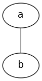
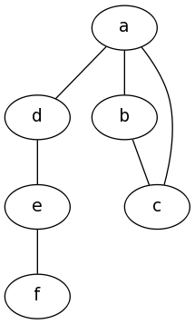
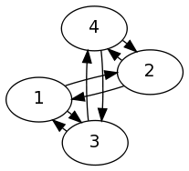
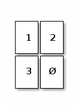
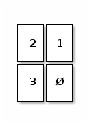
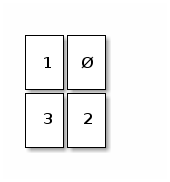
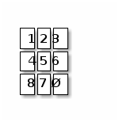

Some notes and solutions to Russell and Norvig's Artificial Intelligence: A Modern Approach (AIMA, 3rd edition)
Table of Contents
- 1 1.1
- 2 1.2
- 3 1.3
- 4 1.4
- 5 1.5
- 6 1.6
- 7 1.7
- 8 1.8
- 9 1.9
- 10 1.10
- 11 1.11
- 12 1.12
- 13 1.13
- 14 1.14
- 15 1.15
- 16 2.1
- 17 2.2
- 18 2.3
- 19 2.4
- 20 2.5
- 21 2.6
- 22 2.7
- 23 2.8
- 24 2.9
- 25 2.10
- 26 2.11
- 27 2.12
- 28 2.13
- 29 3.1
- 30 3.2
- 31 3.3
- 32 3.4
- 33 3.5
- 34 3.6
- 35 3.7
- 36 3.8
- 37 3.9
- 38 3.22
- 39 Meetups
- 40 Notes
- 41 TODOs
- 41.1 3.7
- 41.2 3.7
- 41.3 3.4
- 41.4 Focus on one or two problems for the coming week.
- 41.5 Modify 2.11 to list available actions?
- 41.6 A listing environment
- 41.7 Blog about barabási-albert vs. depth-first graph-creation.
- 41.8 2.11
- 41.9 Should we structure this somehow as a blog instead of an org-doc?
- 41.10 Some sort of blog post or other publicity?
- 41.11 Find a reasonable pseudocode package in \LaTeX.
- 41.12 Should we tangle to a bunch of text files?
- 41.13 Reimplement the Lisp environment in Scheme.
- 41.14 Personal notes as footnotes.
- 41.15 Should we try to release an e.g. Wumpus World egg?
1 DONE 1.1
- Intelligence
- A spontaneous faculty for associating impressions
(more general than ideas); synthesizing
abstractions from disparate stimuli; deducing
conclusions from abstractions.
Intelligence is an emergent property of simples like e.g. neurons.
- Artificial intelligence
- Mechanism for performing association, abstraction, deduction which appears to be spontaneous; may also be an emergent property of bit-pushing.
- Agent
- Self-contained, autonomous input-processing mechanism.
- Rationality
- The appropriate application of λόγος or ratio; this includes the mechanical process of deduction, as well as an ill-defined notion of common-sense.
- Logical reasoning
- The mechanical aspect of rationality.
2 DONE 1.2
The Mathematical Objection (3) still holds up: the halting problem;
on the other hands, humans are also susceptible to the halting
problem, aren't they? If one falls towards the humanity side of the
humanity-rationality AI-axis, this deficit is reducible.
Lady Lovelace's Objection (6) is interesting: it denies ex nihilo; are genetic algorithms a counter-example?
The Argument from Informality of Behaviour (8) could be solved by fuzzy dispatch.
A modern refutation might be that there are not enough graduate students to make a satisfactory ontology of world-knowledge; thank the gods, then, for mechanical turks and unsupervised learning!
We came pretty damn close to \(30\%\) in the 2008 Loebner prize; why not double it to \(60\%\) in 2058? Despite Moore's law, let's say that AI proceeds linearly.
3 DONE 1.3
Reflex actions are rational in the sense that they are the result of
induction on e.g. hot objects and the scientific method (see
Turing); though the acquisition may require intelligence (induction,
storage), the reflex itself is not intelligent in the sense that it
requires no induction: it is immediate.
Reflex actions are not irrational, either, in the sense that someone does a cost-benefit analysis and decides to contravene it; let's call reflex actions pararational, therefore: neither rational nor irrational. There's no time to apply a utility function and behave accordingly (or discordingly (sic)).
4 DONE 1.4
Tom Evan's ANALOGY is an ad-hoc geometric solver, and would not therefore program. In people, you might be able to generalize from IQ-tests to success; but not so with domain-specific AI.
5 DONE 1.5
Aplysia, Eric Kandel
20,000 neurons; memory-updates/second: \(10^{-9}\); cycle time: \(10^15\), high end;
Is memory-updates/second merely memory / cycle time? In which case: \(20000 / 10^-9 = 10^5 (20000)\) neurons, cycle time: \(10^{-3}\); memory updates per second? Not sure what the relationship between operations/sec and memory updates/sec; the former is an upper bound, though. Could it be that memory updates/sec is also bounded, somehow, by storage units? There is also the relationship between neuros and synapses.
In humans, 7,000 synapses per neuron; hence 1014 from 1011. How many synapses per aplysia-neuron?
From this paper:
On average, we found 24 contacts per pair of neurons.
Let's say, then, that sea slugs have 106 synapses; let's also say that, like humans, this is an upper bound on memory updates per second due to the e.g. refractory period.
That gives 106 memory updates per second; which means that a supercomputer houses the potential of 108 sea slugs.
6 DONE 1.6
This post on the limits of introspection posits that:
Mental processes are the results of opaque preferences, and . . . our own "introspected" goals and preferences are a product of the same machinery that infers goals and preferences in others in order to predict their behavior.
Accordingly, introspection is accurate to the extent that we can infer our own thoughts from the mental model we've extrapolated from watching others.
In other words, the processes which lead to thought are to thought opaque.
7 DONE 1.7
Bar code scanners should hopefully be a trivial mapping from codes
to products; if, on the other hand, you could scan and select
similar products someone might be interested in: well, then.
The search engine problem is probably AI-complete; current solutions are some AI-complete-like heuristics.
Voice-activated telephone menus might be artificially intelligent in the sense that they have to recover signal from noise and make sense of it.
Internet routing algorithms are classic agents in the sense that they have environments (connection data), sensors (the ability to peer into network devices) and actuators (the ability to re-route traffic).
8 DONE 1.8
Isn't it the case that humans do do some kind of implicit
calculation? Another example is the ability to catch a ball: there
are complex physics at play, and yet the human has evolutionarily
honed and ad-hoc facilities to perform the same.
Something like Gaussian blur, in other words, is hard-coded into our neurons; vision system, on the other hand, don't have the advantage of fuzzy connections between analog neurons and have to simulate these biological heuristics with algorithms.
9 DONE 1.9
Evolution might tend to result in systems that maximize certain
utility functions (e.g. propagate genes, to that end: stay alive for
a while; &c.); this process is pseudo-rational. Pseudo-rational in
the sense that it is not rational for rationality's sake; but
accidentally rational as it strives to maximize utility.
Maybe there's no distinction to be drawn there after all: ends justifying means.
10 DONE 1.10
AI is science in the sense that it benefits from the scientific
method (work done, for instance, on the relationship between goals
and actions; cooperation; how brains cause minds; &c.) and precise
mathematics.
AI is engineering, on the other hand, in the sense that it inheres in the world; it must find solutions in messy situations: solutions which might be approximate but nevertheless useful.
11 DONE 1.11
"Surely computers . . . can do only what their programmers tell
them" might have been the case, if it weren't for the fact that
programmers can program machines to do things even they couldn't do
(cf. chess programs that outstrip their masters).1
This seems like a paradox I don't adequately know how to explain; if it proceeds apace, prepare for the singularity.
12 DONE 1.12
The relationship between nature and nurture is probably complex;
suffice to say: genes might provide an upper bound on the
intelligence of an animal that it has to strive to meet. Luck helps;
so does discipline.
There is a nature-nuture/code-intelligence analogy only insofar as there is code that adapts to its environment; or a programmer can translate intelligence into code (bounded by the programmer's intelligence, of course).
13 DONE 1.13
It's true that animals, humans and computers are bound by the laws
of physics; nevertheless, there is this bizarre phenomenon of
emergent behavior wherein the sum is more than its whole of parts.
Consciousness, after all, is an emergent behavior from the propagation of current through neurons; and the world-wide-web has emerged from a decentralized connection of web pages.
14 DONE 1.14
- The Japanese got this one; just a toy, though.
- There is at least one driverless car in Cairo; it's not self-controlling, though, but rather remotely driven. Driving in clusterfuck-Cairo (like Athens) is taxing for humans, let alone AI. (Google's making political inroads in Nevada, though.) Sufficiently sensitive sensation of surrounding objects, conditions; physics; navigation; are required.
- DARPA Grand Challenge
- This robot fetches a sandwich.
- Grocery IQ will order groceries; a week's worth, though?
- Zia Mahmood got clowned once or twice; like poker, though, bridge is probabilistic and psychological.
- TheoryMine is selling new computer-generated proofs for £15; standard objections apply.
- The Bulhak-Larios Postmodernism Generator is funny; intentionally so?
- Hilariously-named SHYSTER: ad-hoc expert system
- Google Translate
- Mechanically, but there is a human agent (telemanipulator); see this, though, where "In May 2006 the first AI doctor-conducted unassisted robotic surgery on a 34 year old male to correct heart arythmia."
15 DONE 1.15
TREC appears to dissolve tracks as they become "solved" (e.g. the
spam and terabyte tracks) and take new ones up as they emerge (e.g.
the microblog and crowdsourcing tracks).
The Grand Challenge is attempting to solve the problem of driverless transportation (see Google's driverless car); despite recent legislation approving driverless cars (in e.g. California, Nevada, New Jersey), it is still cutting edge.
ICKEPS 2012, for instance, has a track for planning solar array operations on the ISS; seems relevant.
RoboCup is interesting in the sense that it requires advanced perception and cooperation among autonomous agents; I suspect it does not detract much from new ideas, despite the fact that it is still wrestling with some of the oldest (and unsolved) problems in AI (vide supra).
The Loebner Prize, on the other hand, seems a little anachronistic; do people care whether their AI counterparts really act human?
16 DONE 2.1
It follows directly from the definition of a rational agent, which
"maximizes its performance measure, given the evidence provided by
the percept sequence" (p. 37), that its action "depends . . . on the
time step it has reached."
This is because the lifetime of an agent is measured by the total number of percepts it receives 2 3.
Let \(t\) be the time step the agent has reached; if \(t \leq T\), the agent's performence measure depends upon the time step it has reached. If \(t > T\), on the other hand, the rationality of the agent is undefined; since its performance measure is undefined.
At \(t > T\), the agent has become pararational (neither rational nor irrational).
A rational agent's action, therefore, depends upon \(t\) only insofar as its performance measure depends upon \(t\).
Take Opportunity, for instance, which had a performance measure of \(T = 90\ \text{sol}\); as of 2012, it's overstepped \(T\) by eight years. If it fails after \(T\) to e.g. characterize soil, could you say that it acts rationally? In other words, is Spirit irrational; now that it has failed to meet its original performance measure?
No: by their original performance measure, Opportunity and Spirit are pararational; which is not to say that you couldn't define another performance measure \(u^\prime\) depending upon another time \(T^\prime\).
See page 38, by the way, where the authors talk about rationality in terms of expected performance; could it be that an agent transcends \(T\) with respect to expected performance?
Example: given a penalty for each move, a reflex agent's expected performance would be just as good as any other's given T = 2; but not when T = 1000 (it would require a state-based agent to realize that the world is clean and stop moving).
17 DONE 2.2
17.1 DONE a
Page 38 describes an environment which is partially observable,
deterministic and static; as such, the tabular agent in Fig. 2.3
can expect to maximize its utility in no more than four actions
(the worst case is A: dirty, B: dirty; which results in either
suck, right, suck, left, ... or suck, left, suck, right, ...).
There is no time to e.g. build a model of dirt, since the dirt doesn't replentish itself.
17.2 DONE b
The agent does require internal state: it should know, for
instance, whether it has cleaned every square; and, if so, should
stop.
17.3 DONE c
It should learn the geography of its environment to avoid wasting
time trying to move off of it; it could maintain, furthermore, a
dirt-distribution across the grid and favor those squares that tend
to get dirty.
18 DONE 2.3
- a
- False. Page 42 mentions that, even in unobservable environments, "the agent's goals may still be achievable, sometimes with certainty;" the reflexive vacuum agent on page 38 is an example.
- b
- True. In an unknown environment, there is no opportunity for the reflex agent to learn the ``laws of physics'' of the environment (p. 44); or for the programmer to endow the agent with them a priori.
- c
- True. It's possible to imagine a task environment in which there are no decisions to be made: merely existing, for instance, satisfies the performance measure.
- d
- False. According to page 46, the agent program takes the current percept; the agent function, on the other hand, takes the entire percept history.
- e
- False. If the agent function is to e.g. determine whether a program will return an answer or run forever (see p. 8); it is not implementable by a program/machine combination. Unless, of course, the author (or agent) has solved the halting problem.
- f
- True. Take the performance measure, for instance, where an agent is supposed to simulate the roll of a fair-sided die.
- g
- True. If an agent is a rational NxN tic-tac-toe player, it will perform just as well in a 2x2 as in a 3x3 environment.
- h
- False. See a: page 138 describes a sensorless vacuum agent that knows the geography of its world; it's possible to search its belief space and even coerce the world into certain states.
- i
- False. Even rational poker-playing agents fall prey to luck.
19 DONE 2.4
19.1 Soccer
- Performance measure
- Score and defend
- Environment
- Field
- Actuators
- Kicking, thrwing, catching
- Sensors
- Topology, ball, agents
- Characteristics
- Fully observable, multiagent, stochastic, sequential, dynamic, continuous, known
19.2 Titan
- Performance measure
- Like TiME for surface lakes, it would determine the presence of biological compounds.
- Environment
- Titan
- Actuators
- Drill, satellite, landing gear
- Sensors
- Mass spectrometer, camera
- Characteristics
- Partially observable, multiagent? stochastic, sequential, dynamic, continuous, known
19.3 Shopping on the internet
- Performance measure
- Finding used AI books
- Environment
- The internet
- Actuators
- Form completion, HTTP request, cookie storage
- Sensors
- HTML parser
- Characteristics
- Partially observable, multiagent, stochastic, sequential, dynamic, continuous, known
19.4 Playing a tennis match
- Performance measure
- Winning the match
- Environment
- Tennis court
- Actuators
- Tennis racket
- Sensors
- Location, trajectory of ball, opponent; topology
- Characteristics
- Fully observable, multiagent, stochastic, sequential, dynamic, continuous, known
19.5 Practicing tennis against a wall
19.6 Performing a high jump
- Performance measure
- Height jumped
- Environment
- Measuring stick
- Actuators
- Spring
- Sensors
- Balance
- Characteristics
- Fully observable, single agent, deterministic, episodic, static, continuous, known
19.7 Knitting a sweater
- Performance measure
- Consistency of stitch, conformance to the recipient's body
- Environment
- Yarn, recipient's body
- Actuators
- Needle
- Sensors
- Yarn on needle
- Characteristics
- Fully observable, single agent, deterministic, sequential, static, continuous, known
19.8 Bidding on an item
- Performance measure
- Win, save cash
- Environment
- Auction
- Actuators
- Signify bid
- Sensors
- See the artifact, understand the auctioneer
- Characteristics
- Partially observable 4, stochastic, sequential, dynamic, continuous, known
20 DONE 2.5
- Agent
- An agent is a black box with inputs and outputs that conspires to perform something
- Agent function
- The agent function maps inputs to outputs.
- Agent program
- The agent program implements the agent function.
- Rationality
- Rationality usually means the application of reason; but because the authors have given up on AI as "thinking humanly" (p. 2), it has been cheapened to mean: "act in accordance with this performance measure we've set up."
- Autonomy
- Autonomy is the ability of an agent to select actions beyond the a priori programming of its maker.
- Reflex agent
- A reflex agent acts according to the immediate percept; it has amnesia.
- Model-based agent
- A model-based agent acts according to a model of the world it has synthesized from percepts.
- Goal-based agent
- Not merely reacting to the environment (or its model thereof), the goal-based agent has a Vorhaben (so to speak) that can inform sequences of actions.
- Utility-based agent
- Utility-based agents have internalized their own performance measure; and, as such, are able to decide between conflicting goals.
- Learning agent
- Learning agents hone their sense of appropriate actions by modifying the weights associated with environmental features.
21 DONE 2.6
- a
- There are infinite agent programs that implement a given
agent function; take, for instance, an agent that perceives
flashes of light and maps them to some output (say, an
integer).
The percept sequence could be mapped as an integer encoded as a bit-string of light and dark moments; or a bit-array representing the same thing.
- b
- Yes; an agent function whose performance measure is to determine whether a program stops or not cannot be implemented as a progrm (unless one first solves the Halting Problem).
- c
- Yes; which is to say: a program implements a mapping from percepts to actions; to change the mapping, you have to change the program.
- d
- There would be \(2^n\) possible agent programs on an \(n\)-bit
machine (not all of them functional).
(According to this, there are \(a^{2^n}\) possible programs; \(2^n\) possible states and \(a\) choices for each state. I don't think they're factoring the program into the storage, are they?)
- e
- Speeding up the agent program does not change the agent
function; they are orthogonal: the former is concrete, the
latter abstract.
If they don't behave like Hegelian dialectic, they are at least Platonic forms and instantiations.
22 DONE 2.7
Clever: the goal-based agent mutates belief-space based on its best
guess; acts accordingly.
22.1 Goal-based agent
- let
- state
- model
- goals
- action
- define (goal-based-agent percept)
- set! state (update-state state action percept model)
- let
# Shouldn't we distinguish between many different
action-sequences; and, if so, how to do so without a utility
function: evaluate them against the performance measure?
- action-sequence (search goals state)
- return (first action-sequence)
22.2 Utility-based agent
- let
- state
- model
- goals
- action
- define (utility-based-agent percept)
- set! state (update-state state action percept model)
- let
- probabilities (map probability goals)
- utilities (map utility goals)
- let
- expected-utilities (map * probabilities utilities)
- goal-of-maximum-expected-utility (max goals expected-utilities)
- action-sequence (search goal-of-maximum-expected-utility state)
- return (first action-sequence)
23 DONE 2.8
- CLOSING NOTE
See aima-chicken.
(use debug
foof-loop
lolevel
srfi-1
srfi-8
srfi-13
srfi-69
vector-lib)
(define (simulate environment)
(loop ((while (environment)))))
(define (compose-environments . environments)
(lambda ()
(every identity (map (lambda (environment)
(environment))
environments))))
(define (make-performance-measuring-environment
measure-performance
score-update!)
(lambda () (score-update! (measure-performance))))
(define (make-step-limited-environment steps)
(let ((current-step 0))
(lambda ()
(set! current-step (+ current-step 1))
(< current-step steps))))
;;; What about pairs of objects and optional display things.
(define make-debug-environment
(case-lambda
((object) (make-debug-environment object pp))
((object display)
(lambda () (display object)))))
(define (vacuum-world-display world)
(pp
(vector-append '#(world)
(vector-map
(lambda (i clean?)
(if clean? 'clean 'dirty))
world))))
(define clean #t)
(define clean? identity)
(define dirty #f)
(define dirty? (complement clean?))
(define left 0)
(define left? zero?)
(define right 1)
(define right? (complement zero?))
(define make-vacuum-world vector)
(define vacuum-world-location vector-ref)
(define vacuum-world-location-set! vector-set!)
(define-record vacuum-agent
location
score
program)
(define-record-printer vacuum-agent
(lambda (vacuum-agent output)
(format output
"#(agent ~a ~a)"
(if (left? (vacuum-agent-location vacuum-agent))
'left
'right)
(vacuum-agent-score vacuum-agent))))
(define (make-vacuum-environment world agent)
(lambda ()
(let* ((location (vacuum-agent-location agent))
(action ((vacuum-agent-program agent)
location
(vacuum-world-location world location))))
(case action
((left) (vacuum-agent-location-set! agent left))
((right) (vacuum-agent-location-set! agent right))
((suck) (vacuum-world-location-set! world location clean))
(else (error (string-join
"make-vacuum-environment --"
"Unknown action")
action))))))
(define (reflex-vacuum-agent-program location clean?)
(if clean?
(if (left? location)
'right
'left)
'suck))
(define make-reflex-vacuum-agent
(case-lambda
((location)
(make-reflex-vacuum-agent location reflex-vacuum-agent-program))
((location program)
(make-vacuum-agent
location
0
program))))
(define (make-vacuum-performance-measure world)
(lambda ()
(vector-count (lambda (i square) (clean? square)) world)))
(define (make-vacuum-score-update! agent)
(lambda (score)
(vacuum-agent-score-set! agent (+ (vacuum-agent-score agent)
score))))
(define simulate-vacuum
(case-lambda
((world agent) (simulate-vacuum world agent 1000))
((world agent steps)
(simulate
(compose-environments
(make-step-limited-environment steps)
(make-performance-measuring-environment
(make-vacuum-performance-measure world)
(make-vacuum-score-update! agent))
(make-debug-environment agent)
(make-debug-environment world vacuum-world-display)
(make-vacuum-environment world agent)))
(vacuum-agent-score agent))))
(simulate-vacuum (make-vacuum-world dirty clean)
(make-reflex-vacuum-agent
left
(lambda (location clean?)
'right))
10)
I want environmental combinators, incidentally; such that I can compose an e.g. step-limited environment with an agent with a vacuum one.
We can compose steps; but how do you compose score: do you have to specify a reducer of some kind; e.g. addition? Is it really environment reduction we're talking about here?
I'm beginning to suspect that the performance score is a property of the agent, not the environment; this is consistent with the book's use of "reward" and "penalty." It also makes sense in a multi-agent environment.
On page 37, however, the authors state that:
This notion of desirability [for a sequence of actions leading to a sequence of states] is captured by a performance measure that evaluates any given sequence of environment states.
I suspect that, whereas the environment is an arbiter of the performance score (i.e. applies the performance measure), the score inheres in the agents.
This is corroborated by the following:
Notice that we said environment states, not agent states. If we define success in terms of agent's opinion of its own performance, an agent could achieve perfect rationality simply by deluding itself that its performance was perfect.
Since only the environment has access to its true states, it alone can measure performance. Is this problematic in cases where we don't have an omniscient environment that directly communicates performance scores? In such cases, we'd have to rely on the imperfect self-judgement of the agent; and attempt to converge on rationality by internal coherence.
What I'm calling environments, incidentally, are now just functions:
step-functions, at that; and can be reduced by every.
Agent combinators are a little tough, though; the performance measure has to be aware of the combined features. Can we use some kind of message-passing mechanism?
What stops us, for instance, as modelling the agents as lambdas; too? Part of the problem is the inversion of control: we'd have to pass a message to the agent to store its score, as opposed to manipulating the score directly.
Every agent would be a dispatch-mechanism that would manage its own meta-variables (including score and e.g. location) on the basis of messages. Is it problematic, however, to have agents managing their own score? Could we have an agent → score mapping in the environment itself? That way, agents only maintain state according to its percepts.
Score, for instance, is not a percept in the vacuum world; location,
however, is. Agents, then, are functions with closures; functions
which take as many parameters as their percepts have components. The
performance-measuring-environment, therefore, maintains an
agent->score table. Yes!
Problem is, though, that we'd have to break the nice contract we have: environments are niladic lambdas. To maintain the performance measure table, we'd have to receive the agent and the new score.
How to make the performance measure part of the environment, so that we can relieve the agent from metadata?
By taking the metadata out of the agent, we have to maintain agent → metadata mappings in the environment; this is kind of a pain in the ass.
By maintaining agents-as-lambda, we get a certain flexibility; on the other hand, we shunt some complexity onto the environment: as it has to maintain agent-metadata: score, location, &c.
Is this an acceptable tradeoff? The alternative, where I need to guess what agents need (program, score, location) seems onerous; for some reason. In practice, however, it may be simpler. We haven't even solved the agent-hashing-problem, for instance (wherein hashing fails if we mutate a field).
Can we hash closures?
I want to follow this environment-maintains-agent->metadata-mapping thing and see how far it goes. (I see now why objects are interesting; closures, of course, do the same thing.)
If make-*-environment returned multiple values: the thunk followed
by e.g. agent->score, agent->location; you can ignore the latter
values, if you want to.
Or, we can demand that the user furnish them; better yet, we can give the user the option of furnishing and ignoring them.
Also, shouldn't we be able to name agents at some point? This would also have to fall within an external data structure. Maybe the record solution isn't problematic if we create ad-hoc agents for each problem.
If we really need to decouple the program from the agent metadata (do we?), one solution is to have an agent->metadata table in the environment; the metadata would be a record containing location, score, name, &c.
This metadata table, on the other hand, would have to be passed to each subenvironment for composition. Seems like a pain.
We found that, since environments consist of a step function, we could reduce them to a lambda; let's see if this continues to be the case. For the time being, however, I think using agent-records is simplifying.
I wouldn't mind agents being lambdas with closures; problem is: can't access the closure without some kind of message passing. (Message passing simulates records.) We could possibly do it with some kind of multiple-return-values hack, in which the subsequent values are ignored (the agent effectively does a state dump every time its program is invoked). The problem with that is that I have to pass a percept in to access its state, or store its state some other way.
To avoid namespacing everything (like e.g. vacuum-agent, &c.), I'd
like to have separate modules; that way, if we need to, we can
import with a prefix.
For learning purposes, we should allow the student to specify no more than the agent program; worry about all the bootstrapping on the back end.
We may have to copy worlds, incidentally, to compare how e.g.
reflex- vs. state-agents behave; thank goodness for vector-copy.
(Copy by default?)
To give feedback to students, should have an e.g.
environment-print that we can pass around (this sort of
function-passing, incidentally, is what Norvig sought to avoid);
environment-print might happen at every step in e.g. simulate.
Oh, make-debugging-environment.
24 DONE 2.9
Using the aima-chicken framework:
(use aima-vacuum
test)
(let ((worlds
(list (make-world clean clean)
(make-world clean clean)
(make-world clean dirty)
(make-world clean dirty)
(make-world dirty clean)
(make-world dirty clean)
(make-world dirty dirty)
(make-world dirty dirty)))
(agents
(list (make-reflex-agent left)
(make-reflex-agent right)
(make-reflex-agent left)
(make-reflex-agent right)
(make-reflex-agent left)
(make-reflex-agent right)
(make-reflex-agent left)
(make-reflex-agent right))))
(let* ((scores (map simulate-vacuum worlds agents))
(average-score (/ (apply + scores) 8)))
(test
"Scores for each configuration"
scores
'(2000 2000 1998 1999 1999 1998 1996 1996))
(test
"Average overall score"
1998.25
average-score)))
25 DONE 2.10
25.1 DONE a
With a partially observable environment, a simple reflex agent will
not be rational (in the sense that its expected performance is not
as good as any other's); in other words, it should be scoring about
twice as much as this:
(use aima-vacuum
test)
(test
"Penalizing vacuum with reflex agent"
998
(simulate-penalizing-vacuum (make-world dirty dirty)
(make-reflex-agent left)))
The reflex agent would require state to determine that e.g. the world was clean and that it didn't need to move anymore.
25.2 DONE b
(use aima
aima-vacuum
test
vector-lib)
(debug? #f)
(define-record unknown)
(define unknown (make-unknown))
(define (all-clean? world)
;; Vector bleeds a little world.
(vector-every (lambda (location) (clean? location)) world))
(test
"Stateful agent in penalizing environment"
1995
(simulate-penalizing-vacuum
(make-world dirty dirty)
(make-reflex-agent
left
;; We could also make an initial pessimistic hypothesis of all-dirty.
(let ((world (make-world unknown unknown)))
(lambda (location clean?)
(if clean?
(begin
;; Extra work here every time; otherwise, we'd have an
;; extra `all-clean?' check after we set the state.
;; `vector-set!', I'd wager, is cheaper than
;; `all-clean?'.
(vector-set! world location clean)
(if (all-clean? world)
;; Symbols appropriate here, or should we have predefined
;; go-left, go-right, clean, do-nothing? We're message
;; passing, after all; I suppose a lambda wouldn't make any
;; sense?
;;
;; Can't be lambdas unless we redefine e.g. `go-right'
;; to penalize in the case of
;; `make-penalizing-environment'; better to keep as
;; symbols and dispatch, right? There should be some
;; sort of data-directed model we could use, though,
;; instead of the case-based dispatch.
'noop
(if (right? location)
'left
'right)))
'suck))))))
(test
"Stateful agent in penalizing environment (from the egg)"
1995
(simulate-penalizing-vacuum
(make-world dirty dirty)
(make-stateful-reflex-agent left)))
25.3 DONE c
- CLOSING NOTE
Should we actually implement it?
If the simple and stateful reflex agents are omniscient w.r.t. the environment, they are equivalent; the stateful agent will simply update its state according to its omniscient percept and the simple one will simply act accordingly.
26 DONE 2.11
26.1 DONE a
A simple reflex agent wouldn't be able to explore an environment of
unknown extent without exhausting all possible paths of the
corresponding \(n \times n\) space; given sufficient time, such an
exhaustive agent would asymptotically approach rationality toward \(t
= \infty\).
Given reasonable time constraints, however, or e.g. penalties for moving, such an agent would not be rational; if it maintained all possible paths in a table, it would also contravene the directive on p. 47:
The key challenge for AI is to find out how to write programs that, to the extent possible, produce rational behavior from a smallish program rather than from a vast table.
More fundamentally, an agent wouldn't be able to exhaust the space without maintaining some sort of state (e.g. paths traversed).
Even more fundamentally, however, the agent can't discern whether it's hit a wall; this changes in 2.12, however, when the agent gets a bump sensor.
26.2 DONE b
The average score for a randomized agent in a 20-node world is roughly \(17300.0\); see the demonstration-video.
(use aima aima-vacuum test) (parameterize ((current-test-epsilon 0.005)) (test "Test the randomized graph agent on 100 different worlds." 17300.0 (let* ((scores (list-tabulate 100 (lambda (i) (let* ((world (make-graph-world)) (start (random-start world)) (agent (make-randomized-graph-agent start))) (parameterize ((random-seed i) (debug? #f)) (simulate-graph world agent)) (agent-score agent)))))) (/ (apply + scores) (length scores)))))
26.3 DONE c
The randomized agent will perform poorly in a linear environment,
since many of its movement choices will be no-op; in fact, the
average score of a randomized agent on a linear world of 20 nodes
is roughly \(15000.0\) (\(\approx13\%\) less than the random 20-node
world in 2.11b):
(use aima aima-vacuum debug test) (parameterize ((current-test-epsilon 0.1)) (test "Test the randomized graph agent on a linear world 100 times." 15000.0 (let* ((world (make-linear-world)) (start (random-start world))) (let ((scores (list-tabulate 100 (lambda (i) (let* ((world (copy-world world)) (agent (make-randomized-graph-agent start))) (parameterize ((debug? #f)) (simulate-graph world agent)) (agent-score agent)))))) (/ (apply + scores) (length scores))))))
See the video.
26.4 DONE d
An agent with state can outperform a stateless agent and maximize
its performance by systematically exploring the environment á la
e.g. depth-first search; in a 20 node environment, the stateful
agent performs \(\approx 20\%\) better than its randomized
counterpart (cf. 2.11c).
See the video.
(use aima aima-vacuum test) (parameterize ((current-test-epsilon 0.005)) (test "Test the stateful graph agent on 100 different worlds." 19176.35 (let* ((scores (list-tabulate 100 (lambda (i) (let* ((world (make-graph-world)) (start (random-start world)) (agent (make-stateful-graph-agent start))) (parameterize ((random-seed i) (debug? #f)) (simulate-graph world agent)) (agent-score agent)))))) (/ (apply + scores) (length scores)))))
The basic algorithm is as follows:
- Is the current location dirty? Clean it.
- Otherwise, visit and clean (if necessary) all the current-location's unvisited neighbors.
- If there are no unvisited neighbors for the current location, go back the way we came.
- If there are no unvisited (and uncleaned) locations, stop.
Traversing the world in this fashion is linearly complex.
27 DONE 2.12
A simple reflex agent with a bump sensor will perform just as well
as a random agent since, upon detecting a bump, it can randomly
change directions. The same constraints on random agent apply: e.g.
poor performance in linear spaces.
The state agent is fundamentally unchanged: instead of deducing implicit bumps, however, due to non-movement (requiring e.g. a bump-sentinel in the movement stack); it can incorporate the bump-data directly into its state.
If the bump sensor stops working, unfortunately, the agent would have to fall back on random behavior (see 2.11b).
28 DONE 2.13
28.1 DONE a
By expending an extra step at each square to make sure that it is,
in fact, clean (and repeatedly cleaning otherwise); one can still
clean the entire environment in linear time.
If the dirt sensor is wrong some percentage of the time, one would repeatedly sense the status of the location until some significance criterion is reached. For instance, it appears as though one would have to sense the status \(17\) times per location to achieve a confidence level of \(95\%\).
28.2 DONE b
I don't see how you could avoid repeatedly exploring and cleaning
the world according to some acceptable interval; if the dirt is not
evenly distributed, store statistics about dirty hotspots (and hit
those locations more frequently).
29 DONE 3.1
Formally, a well-defined problem (see page 66) contains a goal-test;
such that we can't define a problem until we've formulated a goal.
Page 65 states, furthermore, that ``problem formulation is the process of deciding what actions and states to consider, given a goal;'' searching for solutions can't proceed without goal-formulation, either.
30 DONE 3.2
- CLOSING NOTE
I think we were confused here, incidentally, by the state space (finite) and the decision space (infinite).
30.1 DONE a
- States
- A graph whose nodes point east, west, north, south (pointing to a special sentinel-node in the case of adjoining walls); the orientation of the robot; the square currently occupied by the robot.
- Initial state
- Graph of one central node; northward orientation
- Actions
- Turn east, west, north, south; move forward.
- Transition model
- Moves in the currently oriented direction wherever a wall does not intervene; where a wall intervenes, however, the robot stays put.
- Goal test
- Is the robot out of the maze?
- Path cost
- None
The state space is infinite: you can reach any square, for instance, over an unlimited number of noöps (e.g. pressing forward into a wall, turning redundantly, &c.).5
Let's say that redundant noöps have been pruned, however; and that the graph, furthermore, doesn't have any cycles: the state space is at least \(n\), corresponding to the number of nodes in the graph. It is at least \(4n\), though, since the robot can be in any of the four orientations in each square. Let's say, furthermore, for every node \(n_i\) there are \(m_i\) unique paths (i.e. sequences \(n_{0, 1, \dots, i}\)) from the initial node \(n_0\) to \(n_i\): the state space for \(n_i\) alone becomes all the ways to fulfill each path in \(m_i\) including unnecessary turns and false-forwards into walls. Let the set of all fulfillments for a given \(m_i\) be \(M_i\).
The state space is the sum of \(M_i\) over the number of nodes in the graph; plus the robots current position; plus the robot's orientation.
30.2 DONE b
- States
- A graph whose nodes point to one or more of east, west, north, south if a neighbor exists in that direction; the orientation of the robot; the square currently occupied by the robot.
- Initial state
- Graph of one central node; northward orientation
- Actions
- Turn east, west, north, south if the robot is at an intersection; or move forward.
- Transition model
- Moves in the currently oriented direction wherever a wall does not intervene; where a wall intervenes, however, the robot stays put.
- Goal test
- Is the robot out of the maze?
- Path cost
- None
The state-space is still infinite, since the problem admits of redundant forwards at intersections; the pruned state space is smaller than 3.2a, however, since the fulfillment of \(m_i\) doesn't involve unnecessary turns in corridors.
30.3 DONE c
- States
- A graph whose nodes point to one or more of east, west, north, south if a neighbor exists in that direction; the square currently occupied by the robot.
- Initial state
- Graph of one central node
- Actions
- Turn east, west, north, south
- Transition model
- Move east, west, north, south until the robot is at a turning point.
- Goal test
- Is the robot out of the maze?
- Path cost
- None
If the maze has loops, the state space is infinite; otherwise, the state-space is significantly smaller than even 3.2b, since \(M_i\) doesn't require any superfluous movement to exhaust it.
The robot's orientation is irrelevant, since we'll travel along the chosen direction to the next turning point.
30.4 DONE d
At least three simplifications; that:
- the maze is oriented along strict cardinal directions;
- the passages are straight;
- the passages are passable;
- the robot has unlimited energy.
31 DONE 3.3
31.1 DONE a
- State
- A state specifies the location of each friend on the map \(n(\{i, j\})\), and the respective paths that led them there \(P(\{i, j\})\).
- Initial state
- A friend a each city \(n(\{i, j\})_0\), \(P(\{i, j\})\) are empty.
- Actions
- Each friend moves to a neighboring city 6.
- Transition model
- Each friend moves to a neighboring city.
- Goal test
- \(n(i) = n(j)\), the two friends are in the same city.
- Path cost
- \(max(T(i_n, i_{n+1}), T(j_n, j_{n+1}))\), where \(T\) is the time required to move from one city to the next.
This is reminiscent of bidirectional search (\S 3.4.6) with a heuristic.
31.2 DONE b
An admissible heuristic is one that never overestimates the cost to
reach a goal.
- \(D(i, j)\), the straight-line-distance heuristic, is admissible (by the triangle inequality).
- \(2D(i, j)\), on the other hand, is not admissible; since it might overestimate the cost of reaching the goal.
- \(D(i, j)/2\) is admissible, since \(D(i, j)/2 < D(i, j)\) and \(D(i, j)\) is admissible.
31.3 DONE c
If noöp is allowed, no completely connected map exists for which
there is no solution: one friend stays still, the other meets her;
if noöps are not allowed, on the other hand, even a completely
connected graph with two-nodes has no solution (since the problem
states that \(i\) and \(j\) are different cities).

Pathological completely connected graph
31.4 DONE d
With friends located at \(a\) and \(f\), one friend must end up taking
the \(a \to b \to c \to a\) loop to offset the even displacement of
friends.

Mandatory loop
32 DONE 3.4
According to Berlekamp (p. 867), Richard Wilson, Aaron Archer,
William Story; there are so-called odd and even permutations in the
15s-puzzle. Richard Wilson showed that this is generalizable to 8s.
According to permutation-parity, one can factor a permutation into cycles; the permutation is odd iff this factorization contains an odd number of even-length cycles.
Without loss of generality, we'll illustrate on a 3-puzzle; whose game-graph is the following:

3-puzzle game-graph
Numbering clock-wise from \(1\) and ignoring \(\varnothing\), we have \(\{1, 2, 3\}\):

Canonical 3-puzzle permutation (even)
Odd permutations (e.g. \(\{2, 1, 3\}\)) are an odd number of even cycles (e.g. \((1\ 2)\)) away from the canonical version (and cannot be reached from the even canonical version):

Odd 3-puzzle permutation
Even permutations (e.g. \(\{1, 2, 3\}\)) are an even number of even cycles (e.g. \(\varnothing\)) from the canonical version:

Even 3-puzzle permutation
Similarly, this odd 8-puzzle is \((6\ 7)\) away from the canonical even puzzle, and can't be reached:

Odd 8-puzzle permutation
It suffices, therefore, to factor the puzzle into disjoint cycles; and count those cycles. If there are an odd number of them, the puzzle is odd; otherwise, even.
33 DONE 3.5
Since a queen can attack at most three squares in a successive
column, the branching factor \(b\) is 3; which produces a state space
of \(3^d\) at column-depth d.
An naïve upper bound for the state-space of \(n\)-queens is \(n!\) (\(n\) choices for the first column, followed by \(n-1\), &c.); which contains, however, many illegal moves (queens threating queens).
If you reduce the total state space \(n!\) by the attacking tree at \(3^d\), you get an lower bound of \(\sqrt[3]{n!}\) states.
Using the so-called Landauer limit on computation-energy, it has been argued that flipping through \(2^{128}\) values is computationally infeasible; checking \(2^{128}\) boards would require even more energy, but let's take it as an upper bound.
Since \(\log_2(\sqrt[3]{79!}) \approx 127.4\), \(n = 79\) is an upper bound on exhaustive exploration (the actual \(n\) would be much less).
34 DONE 3.6
34.1 DONE a
- States
- An upper bound on the number of 4-colorings is \(4^n\),
where \(n\) is the number of regions in the plane;
finding the exact number of colorings (the so-called
chromatic polynomial) is #P-complete.7
The map can be modeled as a graph where the nodes correspond to regions and edges are drawn between nodes whose corresponding regions are adjacent.
- Initial state
- A planar graph with the topology mentioned above, whose nodes are all uncolored.
- Actions
- Color node; add children to queue.
- Transition model
- After the node is colored, it is removed from the queue; the next node in the queue becomes the current node.
- Goal test
- The graph is colored (there are no more nodes in the queue) and is a valid 4-coloring.
This assumes that we've brute-forced all \(4^n\) color-assignments, and are checking them for validity; more efficient algorithms exist.8
34.2 DONE b
- States
- In a square room with \(n \times n\) tiles, there are
\(n^2\) possible arrangements of bananas.
The room could be modeled as an \(n \times n\) array, with the location of the two crates, the monkey and bananas.
- Initial state
- An \(n \times n\) array with random bananas; monkey and two crates in position 0.
- Actions
- Move up, down, left, right; move crates up, down, left, right.
- Transition model
- If the monkey moves up, down, left, right and
is not encumbered by a wall, update the position; the monkey,
incidentally, has a banana sensor which rings true if the
current square has bananas.
If the monkey moves a box, update the position of the box.
- Goal test
- Has the graph been explored, and are there no more bananas?
Involves an e.g. breadth-first search of the banana-space with backtracking so as to relocate the boxes from their last position.
34.3 DONE c
- States
- An array of records with one or more of them illegal. An list of indices with illegal records.
- Initial state
- Some array of records; an empty list of illegal records.
- Actions
- Parse record and next record.
- Transition model
- If parse-record returns false, the record is illegal: add it to the list of illegal records; next-record examines the next record.
- Goal test
- Have we examined all the records?
34.4 DONE d
- States
- Three jugs in various states of fullness.
- Initial state
- All three jugs are empty.
- Actions
- Fill, empty into jug, empty onto ground.
- Transition model
- Filling or emptying updates the water level of the corresponding jug(s).
- Goal test
- Does any jug contain one gallon?
Is this reminiscent of Knuth's conjecture?
35 DONE 3.7
35.1 DONE a
If the space is continuous, there are infinitely many states and
paths; if discrete, there are \(xy\) states and \(< (xy)!\) paths to
the goal. (Take the special case where the start and end are in opposite corners: is it the case that you have \({x + y \choose
x} paths\)?)
35.2 DONE b
By the triangle inequality, any divergence from the vertices could
be shortened by travelling straight to a vertex; the state space is
now the vertices corresponding to edges of polygons.
35.3 DONE c
(use aima-tessellation
data-structures
debug
heap
stack)
(define (search start
end
neighbors
make-frontier
frontier-add!
frontier-delete!
frontier-empty?)
(let ((visited (make-hash-table))
(frontier (make-frontier)))
(frontier-add! frontier (make-node start #f #f 0))
(let search ()
;; (debug frontier)
(if (frontier-empty? frontier)
(error "Search failed -- SEARCH")
(let* ((parent (frontier-delete! frontier))
(children (hash-table-ref neighbors (node-state parent))))
;; (debug parent)
(hash-table-set! visited (node-state parent) #f)
(if (eq? (node-state parent) end)
(reverse (predecessor-path parent))
(let ((unvisited-children
(filter (lambda (child)
(hash-table-ref/default
visited
child
#t))
children)))
;; (debug parent children unvisited-children)
(for-each
(lambda (child)
;; (debug child parent (node-state parent))
(let ((node (make-node child
parent
#f
(+ (node-path-cost parent)
(point-distance
child
(node-state parent))))))
(frontier-add! frontier node)))
unvisited-children)
(search))))))))
(define (depth-first start end neighbors)
(search start
end
neighbors
make-stack
stack-push!
stack-pop!
stack-empty?))
(define (breadth-first start end neighbors)
(search start
end
neighbors
make-queue
queue-add!
queue-remove!
queue-empty?))
(define (best-first start end neighbors f)
(search start
end
neighbors
make-min-heap
(lambda (heap node)
(let ((key (heap-key heap node))
(path-cost (f node)))
(if key
(if (< path-cost key)
(heap-change-key! heap node path-cost))
(heap-insert! heap path-cost node))))
heap-extract-extremum!
heap-empty?))
(define (uniform-cost start end neighbors)
(best-first start end neighbors node-path-cost))
(define (make-straight-line-distance-heuristic end)
(lambda (node) (point-distance (node-state node) end)))
(define (greedy-best-first start end neighbors)
(best-first
start
end
neighbors
(make-straight-line-distance-heuristic end)))
(define (a* start end neighbors)
(best-first
start
end
neighbors
(let ((straight-line-distance-heuristic
(make-straight-line-distance-heuristic end)))
(lambda (node) (+ (node-path-cost node)
(straight-line-distance-heuristic node))))))
(let ((tessellation (tessellate)))
(let ((start (tessellation-start tessellation))
(end (tessellation-end tessellation))
(neighbors (tessellation-neighbors tessellation)))
(let ((breadth-first (breadth-first start end neighbors))
(depth-first (depth-first start end neighbors))
(uniform-cost (uniform-cost start end neighbors))
(greedy-best-first (greedy-best-first start end neighbors))
(a* (a* start end neighbors)))
(plot-tessellation/animation
tessellation
a*
"A*"
"a-star.avi")
(plot-tessellation/animation
tessellation
uniform-cost
"Uniform-cost"
"uniform-cost.avi")
(plot-tessellation/animation
tessellation
greedy-best-first
"Greedy best-first"
"greedy-best-first.avi")
(plot-tessellation/animation
tessellation
depth-first
"Depth-first"
"depth-first.avi")
(plot-tessellation/animation
tessellation
breadth-first
"Breadth-first"
"breadth-first.avi")
(join-animations "search.avi"
"a-star.avi"
"uniform-cost.avi"
"greedy-best-first.avi"
"breadth-first.avi"
"depth-first.avi"))))
35.4 DONE d
See the video: A* = uniform-cost > greedy-best-first >
breadth-first > depth-first.
36 TODO 3.8
37 DONE 3.9
- CLOSING NOTE
Limited solution; could be generalized to generate all paths and different configurations.
Glenn's is better: it captures all paths.
(use data-structures
debug
defstruct
miscmacros
srfi-69
srfi-95)
(defstruct bank
missionaries
cannibals
boat?)
(defstruct transition
missionaries
cannibals)
(define transitions
(list (make-transition missionaries: 1
cannibals: 1)
(make-transition missionaries: 0
cannibals: 2)
(make-transition missionaries: 0
cannibals: 1)
(make-transition missionaries: 2
cannibals: 0)
(make-transition missionaries: 1
cannibals: 0)))
(define (valid-substate? bank)
(let ((missionaries (bank-missionaries bank))
(cannibals (bank-cannibals bank)))
(not (or (negative? missionaries)
(negative? cannibals)
(> cannibals missionaries)
(> cannibals 3)
(> missionaries 3)))))
(define (substates bank)
(let ((substates
(map (lambda (transition)
(let ((transition
(if (bank-boat? bank)
(update-transition
transition
missionaries: (- (transition-missionaries transition))
cannibals: (- (transition-cannibals transition)))
transition)))
(update-bank
bank
missionaries: (+ (bank-missionaries bank)
(transition-missionaries transition))
cannibals: (+ (bank-cannibals bank)
(transition-cannibals transition))
boat?: (not (bank-boat? bank)))))
transitions)))
(filter valid-substate? substates)))
(define (bank=? b1 b2)
(and (= (bank-missionaries b1) (bank-missionaries b2))
(= (bank-cannibals b1) (bank-cannibals b2))
(eq? (bank-boat? b1) (bank-boat? b2))))
(define (visit-state! visited-states state parent)
(hash-table-set! visited-states state parent))
(define root (defstruct root))
(define root (make-root))
(define (unvisited-states visited-states states)
(filter (lambda (state) (not (hash-table-ref/default
visited-states
state
#f)))
states))
(define (search start end)
(let ((visited-states (make-hash-table))
(frontier (make-queue)))
(queue-add! frontier start)
(visit-state! visited-states start root)
(let iter ()
(if (queue-empty? frontier)
(display "No solution found.")
(let ((state (queue-remove! frontier)))
(if (bank=? state end)
(begin
(display "Found solution!")
(let iter ((child end))
(debug (bank->alist child))
(let ((parent (hash-table-ref/default visited-states child #f)))
(if (not (root? parent)) (iter parent)))))
(let ((substates
(unvisited-states visited-states (substates state))))
(for-each (lambda (substate)
(queue-add! frontier substate)
(visit-state! visited-states substate state))
substates)
(iter))))))))
(let ((start (make-bank missionaries: 3
cannibals: 3
boat?: #t))
(end (make-bank missionaries: 0
cannibals: 0
boat?: #f)))
(search start end))
38 TODO 3.22
Need a graph of possible moves (initially hard-coded for 3x3?); and a Manhattan distance calculator. Can we have an abstract game-graph?
(use data-structures
debug
heap
stack)
(define-record node
;; @("Data structure for graphs"
;; (state "An indexable point")
;; (predecessor "The node-predecessor")
;; (action "Not used")
;; (path-cost "Cost of the path up to this point"))
state
predecessor
action
path-cost)
(define (make-initial-node state)
(make-node state #f #f 0))
(define (predecessor-path node)
;; @("List the predecessors of this node."
;; (node "The node to predecess")
;; (@to "list"))
(let iter ((path (list node)))
(let ((predecessor (node-predecessor (car path))))
(if predecessor
(iter (cons predecessor path))
;; Do we want to reverse?
(reverse path)))))
(define (search start
successors
step-cost
goal?
make-frontier
frontier-add!
frontier-delete!
frontier-empty?)
(let ((visited (make-hash-table))
(frontier (make-frontier)))
(frontier-add! frontier (make-initial-node start))
(let search ()
;; (debug frontier)
(if (frontier-empty? frontier)
(error "Search failed -- SEARCH")
(let* ((predecessor (frontier-delete! frontier))
(successors (successors predecessor)))
;; (debug predecessor)
(hash-table-set! visited (node-state predecessor) #f)
(if (goal? (node-state predecessor))
(reverse (predecessor-path predecessor))
(let ((unvisited-successors
(filter (lambda (successor)
(hash-table-ref/default
visited
successor
#t))
successors)))
;; (debug predecessor successors unvisited-successors)
(for-each
(lambda (successor)
;; (debug successor predecessor (node-state predecessor))
(let ((node (make-node successor
predecessor
#f
(+ (node-path-cost predecessor)
;; Should this be
;; between two
;; nodes?
(step-cost
successor
(node-state predecessor))))))
(frontier-add! frontier node)))
unvisited-successors)
(search))))))))
(define (search-depth-first start successors step-cost goal?)
(search start
successors
step-cost
goal?
make-stack
stack-push!
stack-pop!
stack-empty?))
(define (search-breadth-first start successors step-cost goal?)
(search start
successors
step-cost
goal?
make-queue
queue-add!
queue-remove!
queue-empty?))
(define (search-best-first start successors step-cost goal? f)
(search start
successors
step-cost
goal?
make-min-heap
(lambda (heap node)
(let ((key (heap-key heap node))
(path-cost (f node)))
(if key
(if (< path-cost key)
(heap-change-key! heap node path-cost))
(heap-insert! heap path-cost node))))
heap-extract-extremum!
heap-empty?))
(define (search-uniform-cost start successors step-cost goal?)
(search-best-first start
successors
step-cost
goal?
node-path-cost))
(define (search-greedy-best-first start
successors
step-cost
goal?
heuristic)
(search-best-first start
successors
step-cost
goal?
heuristic))
(define (A* start successors step-cost goal? heuristic)
(search-best-first start
successors
step-cost
goal?
(lambda (node) (+ (node-path-cost node)
(heuristic node)))))
(define (search-recursive-best-first start
successors
step-cost
goal?
heuristic)
(define (search return predecessor f-limit)
(debug (node-state predecessor))
(if (goal? (node-state predecessor))
(return (predecessor-path predecessor))
(let ((successors (successors predecessor)))
(if (null? successors)
(values #f +inf)
(let ((heap (make-min-heap)))
(for-each
(lambda (successor)
(let ((successor
(make-node successor
predecessor
#f
(step-cost
successor
(node-state predecessor)))))
(node-path-cost-set!
successor
(max (length (predecessor-path successor))
(node-path-cost predecessor)))
(heap-insert! heap
(node-path-cost successor)
successor)))
successors)
(let iter ()
(let* ((best (heap-extremum heap))
(best-path-cost (node-path-cost best)))
(debug heap
(heap-size heap)
(node-state (heap-extremum heap)))
(if (> best-path-cost f-limit)
(values #f best-path-cost)
(let ((alternative
(if (= (heap-size heap) 1)
+inf
(let ((first
(heap-extract-extremum! heap))
(alternative
(node-path-cost
(heap-extremum heap))))
(debug heap
(heap-size heap)
(node-state (heap-extremum heap))
(node-path-cost first)
first
(node-state first)
'iter
(heap-member? heap first))
(heap-delete! heap first)
(debug 'iter (heap-member? heap first))
(heap-insert!
heap
(node-path-cost first)
first)
alternative))))
(receive (predecessor best-path-cost)
(search return
best
(min f-limit alternative))
(if predecessor
(values predecessor best-path-cost)
(iter))))))))))))
(call/cc (lambda (return)
(search return (make-initial-node start) +inf))))
(define-record-and-printer point x y)
(define (point-distance p1 p2)
;; @("Calculate the distance between two points."
;; (p1 "The first point")
;; (p2 "The second point")
;; (@to "distance"))
(sqrt (+ (expt (- (point-x p1) (point-x p2)) 2)
(expt (- (point-y p1) (point-y p2)) 2))))
(define (make-straight-line-distance-heuristic end)
(lambda (node) (point-distance (node-state node) end)))
(use (only aima define-record-and-printer)
data-structures
debug
extras
format
files
levenshtein-byte
levenshtein-transpose-byte
miscmacros
posix
srfi-1
srfi-69
shell
vector-lib)
(include "search.scm")
(define-record-and-printer tile moves)
(define blank 0)
(define blank? zero?)
(define-record-and-printer game state blank)
(define (top? k i) (< i k))
(define (left? k i) (zero? (modulo i k)))
(define (right? k i) (zero? (modulo (+ i 1) k)))
(define (bottom? k i) (>= i (* k (- k 1))))
(define (up k i) (- i k))
(define (down k i) (+ i k))
(define (left k i) (- i 1))
(define (right k i) (+ i 1))
(define (moves k i)
(let ((up (and (not (top? k i)) (up k i)))
(down (and (not (bottom? k i)) (down k i)))
(left (and (not (left? k i)) (left k i)))
(right (and (not (right? k i)) (right k i))))
(filter values (list up down left right))))
(define (row k i) (inexact->exact (floor (/ i k))))
(define (col k i) (modulo i k))
(define (manhattan-distance k i j)
(+ (abs (- (row k j) (row k i)))
(abs (- (col k j) (col k i)))))
(define (make-manhattan-distance-heuristic k)
(lambda (node)
(vector-fold (lambda (i distance tile)
(+ distance
(manhattan-distance k i tile)))
0
(game-state (node-state node)))))
(define (n-puzzle k)
(let ((game (vector-unfold (lambda (i) (moves k i)) (* k k))))
game))
(define (make-state k)
(list->vector
(cons blank (iota (- (* k k) 1) 1))))
(define (inversions v)
(let ((inversions (make-hash-table)))
(vector-for-each
(lambda (i x)
(do ((j i (+ j 1)))
((= j (vector-length v)))
(when (and (> x (vector-ref v j))
(not (zero? (vector-ref v j))))
(hash-table-update!/default inversions x add1 0))))
v)
(hash-table-fold
inversions
(lambda (x inversions total) (+ inversions total))
0)))
;;; But see
;;; <http://www.cs.bham.ac.uk/~mdr/teaching/modules04/java2/TilesSolvability.html>.
(define soluble? (compose even? inversions))
(define (soluble? k game)
(let ((inversions (inversions (game-state game)))
(blank-row (quotient (game-blank game) k)))
(debug inversions blank-row (game-state game))
(if (odd? k)
(even? inversions)
(or (and (odd? blank-row)
(even? inversions))
(and (even? blank-row)
(odd? inversions))))))
(define (make-random-game k)
(do ((state (make-state k))
(i (- (* k k) 1) (- i 1)))
((< i 1) (make-game state (vector-index blank? state)))
(let ((j (random (+ i 1))))
(vector-swap! state i j))))
(define (make-random-soluble-game k)
(do ((game (make-random-game k) (make-random-game k)))
((soluble? k game) game)))
(define (make-start-game k)
(make-game (make-state k) 0))
(define (reachable-games k game)
(let ((moves (moves k (game-blank game))))
(map (lambda (move)
(let ((state (vector-copy (game-state game))))
(vector-swap! state (game-blank game) move)
(make-game state move)))
moves)))
(define (game= g1 g2)
;; (vector= eq? g1 g2)
(equal? g1 g2))
(define (ditaa-boundary k)
(string-intersperse (make-list (+ k 1) "+") "---"))
(define (ditaa-row row)
(format
"|~a|"
(string-intersperse
(vector->list
(vector-map (lambda (i tile)
(format " ~a " (if (blank? tile) " " tile)))
row))
"|")))
(define (make-ditaa-row state k i)
(ditaa-row (vector-copy state i (+ i k))))
(define (ditaa-blank-row k)
(ditaa-row (make-vector k blank)))
(define (write-ditaa k state)
(let ((boundary (ditaa-boundary k))
(blank-row (ditaa-blank-row k)))
(display boundary)
(newline)
(do ((i 0 (+ i k)))
((= i (* k k)))
(display blank-row)
(newline)
(display (make-ditaa-row state k i))
(newline)
(display blank-row)
(newline)
(display boundary)
(newline))))
(define (visualize-state k state png)
(with-output-to-file png
(lambda ()
(let ((file (create-temporary-file)))
(with-output-to-file file
(lambda ()
(write-ditaa k state)))
(run (ditaa ,file ,png))))))
(define (animation-filename directory index)
(make-pathname directory (format "~4,48d" index) "png"))
(define (visualize-states k states)
(let ((directory (create-temporary-directory)))
(do ((states states (cdr states))
(i 0 (+ i 1)))
((null? states))
(visualize-state k
(car states)
(animation-filename
directory
i)))
(dotimes (i 10)
(visualize-state k
(last states)
(animation-filename
directory
(+ i (length states)))))
directory))
(define (animate-states/avi k directory avi)
;; See this: <http://thirld.com/blog/tag/imagemagick/>.
(run (mencoder ,(format "mf://~a" (make-pathname directory "*.png"))
-mf fps=4:type=png:w=170:h=238
-o ,avi
-ovc lavc)))
(define (animate-states/gif k directory gif)
(run (convert -delay 20 ,(make-pathname directory "*.png") ,gif)))
(define (solve k game)
(let ((start (make-start-game k)))
(map (compose game-state node-state)
(search-recursive-best-first
game
(lambda (parent)
(reachable-games k (node-state parent)))
(constantly 1)
(lambda (game) (game= start game))
(make-manhattan-distance-heuristic k)))))
(let* ((k 3)
#;(states (solve k (make-random-soluble-game k)))
)
;; (debug states)
(debug
(let ((start (make-start-game k)))
(search-recursive-best-first
(make-random-soluble-game k)
(lambda (parent)
(reachable-games k (node-state parent)))
(constantly 1)
(lambda (game) (game= start game))
(make-manhattan-distance-heuristic k)))))
blank? could just as well be zero?, which would aid in testing
vector-equality (could use e.g. (vector= = g1 g2).
Animated ditaa for visualization?
(use debug
vector-lib)
(define (hamming-distance v1 v2)
(vector-fold (lambda (i distance x1 x2)
(if (= x1 x2)
distance
(+ distance 1)))
0
v1
v2))
(define (transpositions v1 v2)
(let iter ((i 0)
(transpositions 0))
(if (= i (vector-length v1))
transpositions
())))
(debug (hamming-distance '#(0 1 2 3 4 5 6 7 8)
'#(3 6 1 4 2 8 5 0 7))
(hamming-distance '#(0 1 2 3 4 5 6 7 8)
'#(8 1 3 4 0 2 7 6 5))
(hamming-distance '#(1 2 3 4 5 6 7 8 0)
'#(1 2 3 4 5 6 8 7 0)))
;;; edit
(use data-structures
debug
srfi-69
test
vector-lib)
(define (kendall-tau-distance v1 v2)
(if (vector= = (sort v1 <) (sort v2 <))
(let ((x->i (make-hash-table)))
(vector-for-each (lambda (i x) (hash-table-set! x->i x i)) v2)
(let iter ((i 0)
(distance 0))
(if (or (= i (vector-length v1))
(= i (vector-length v2)))
distance
(let ((x1 (vector-ref v1 i))
(x2 (vector-ref v2 i)))
(if (= x1 x2)
(iter (+ i 1) distance)
(let ((i2 (hash-table-ref x->i x1)))
(vector-swap! v1 i i2)
(iter (+ i 1) (+ distance 1))))))))
(error "Vectors incomparable -- KENDALL-TAU-DISTANCE")))
(test 3
(kendall-tau-distance (vector 1 2 3 4 5)
(vector 3 4 5 2 1)))
(debug (kendall-tau-distance
(vector 1 2 3 4 5 6 7 8 9 10 11 12 13 15 14 0)
(vector 1 2 3 4 5 6 7 8 9 10 11 12 13 14 15 0)))
(debug (kendall-tau-distance
(vector 1 2 3 4 5 6 7 8 9 10 11 12 13 15 14 0)
(vector 1 2 3 4 5 6 7 8 9 10 11 12 13 14 0 15)))
(define (contiguize! k v)
(do ((i k (+ i (* 2 k))))
((>= i (vector-length v)))
(vector-reverse! v i (+ i k))))
(define (contiguize k v)
(let ((v (vector-copy v)))
(contiguize! k v)
v))
(debug (kendall-tau-distance
(contiguize 4 (vector 1 2 3 4 5 6 7 8 9 10 11 12 13 14 15 0))
(contiguize 4 (vector 1 2 3 4 5 6 7 8 9 10 11 12 13 15 14 0))))
(debug (kendall-tau-distance
(contiguize 4 (vector 1 2 3 4 5 6 7 8 9 10 11 12 13 14 15 0))
(contiguize 4 (vector 1 2 3 4 5 6 7 8 9 10 11 0 13 14 15 12))))
(use debug test vector-lib) (define (contiguize! k v) (do ((i k (+ i (* 2 k)))) ((>= i (vector-length v))) (vector-reverse! v i (+ i k)))) (let ((v '#(0 1 2 3 4 5 6 7 8 9 10 11 12 13 14 15))) (contiguize! 4 v) (test v '#(0 1 2 3 7 6 5 4 8 9 10 11 15 14 13 12)))
Sign of permutation, with reference to n-puzzles; parity of permutation.
(use debug
srfi-69
vector-lib)
(define (unvisited? unvisited i)
(hash-table-ref/default unvisited i #t))
(define (cycles v)
(let ((visited (make-hash-table)))
(vector-for-each
(lambda (i x)
(debug i x)
(let iter ((next i)
(length 0))
(debug next length)
(if (unvisited? visited next)
(begin
(hash-table-set! visited next #f)
(iter x
(+ length 1)))
(debug length))))
v)))
(define (cycles v)
(let ((visited (make-hash-table)))
(let iter ((i 0)
(even-cycles 0))
(if (= i (vector-length v))
even-cycles
(let iter-cycle ((next i)
(length 0))
(debug next length)
(if (unvisited? visited next)
(begin
(hash-table-set! visited next #f)
(iter-cycle (vector-ref v next) (+ length 1)))
(if (even? length)
(iter (+ i 1) (+ even-cycles 1))
(iter (+ i 1) even-cycles))))))))
(debug (cycles '#(3 4 5 2 1 0))
(cycles '#(0 1 2 4 3 5))
(cycles '#(3 1 2 0 4 5))
(cycles '#(0 1 2 3))
(cycles '#(0 1 3 2))
(cycles '#(0 1 2))
(cycles '#(2 1 0))
(cycles '#(1 0 2))
(cycles '#(0 1 2 5 4 3 6 7 8))
(cycles '#(1 2 3 4 5 6 7 8 9 10 11 12 13 15 14 0)))
http://www.math.umt.edu/oliver/parity/nelson.pdf
https://stat.ethz.ch/pipermail/r-help/2008-April/159732.html
library(debug) n <- 16 ## p <- sample(1:n) ## p <- c(0,1,2,5,4,3,7,6,8) p <- c(1,2,3,4,5,6,7,8,9,10,11,12,13,15,14,0) p <- c(1,2,3,4,5,6,7,8,9,10,11,12,13,15,14) p <- c(1,2,3,4,8,7,6,5,9,10,11,12,15,14,13) p <- c(1,2,3,4,5,6,7,8,9,10,11,12,13,14,15,0) p <- c(0,1,2,3,4,5,6,7,8,9,10,11,12,13,14,15) x <- integer(n) print(p) for (i in 1:n) { ## debug(x) z <- which(!x)[1] print(x) debug("outer", i, z) if (is.na(z)) break repeat { debug("inner", i, z, x[z], p[z], x[p[z]]) x[z] <- i z <- p[z] if (x[z]) break } } x clen <- table(x) clen 1L - (sum(clen %% 2 == 0) %% 2)*2L
(use debug
miscmacros
srfi-1
srfi-69
vector-lib)
(define (cycles v)
(let ((seen (make-vector (vector-length v) #f)))
(let iter ((i 0)
(cycles '()))
(debug seen)
(if (= i (vector-length v))
(begin
(debug cycles)
(length (filter even? cycles)))
(let iter-cycle ((j i)
(length 0))
(debug j length)
(if (vector-ref seen j)
(iter (+ i 1)
(cons length cycles))
(begin
(vector-set! seen j #t)
(iter-cycle (vector-ref v j)
(+ length 1)))))))))
(define (cycles v)
(let ((seen (make-vector (vector-length v) 0)))
(do ((i 1 (+ i 1)))
((> i (vector-length v)))
(let ((z (vector-index zero? seen)))
(debug z)
(when z
(while (zero? (vector-ref seen z))
(debug z)
(vector-set! seen z i)
(set! z (vector-ref v z))))))
seen))
(define (cycles v)
(let ((cycles (make-hash-table))
(seen (make-vector (vector-length v) #f)))
(do ((i 0 (+ i 1)))
((= i (vector-length v)))
(let iter ((j i))
(unless (vector-ref seen j)
(vector-set! seen j #t)
(hash-table-update!/default
cycles
i
(lambda (length) (+ length 1))
0)
(iter (vector-ref v j)))))
(hash-table->alist cycles)))
(cycles '#(1 2 3 4 5 6 7 8 9 10 11 12 13 15 14 0))
(cycles '#(1 2 3 4 5 6 7 8 9 10 11 12 13 14 15 0))
(cycles '#(2 1 3 4 5 6 7 8 9 10 11 12 13 14 15 0))
(cycles '#(13 10 11 6 5 7 4 8 1 12 14 9 3 15 2 0))
(cycles '#(6 1 10 2 7 11 4 14 5 0 9 15 8 12 13 3))
http://stackoverflow.com/questions/7701345/how-to-programatically-create-a-valid-15-puzzle-in-code http://mathworld.wolfram.com/15Puzzle.html http://www.cs.bham.ac.uk/~mdr/teaching/modules04/java2/TilesSolvability.html http://kevingong.com/Math/SixteenPuzzle.html
(use debug
srfi-69
test
vector-lib)
(define (inversions v)
(let ((inversions (make-hash-table)))
(vector-for-each
(lambda (i x)
(do ((j i (+ j 1)))
((= j (vector-length v)))
;; (debug i j x (vector-ref v j) (> x (vector-ref v j)))
(when (and (> x (vector-ref v j)) (positive? (vector-ref v j)))
(hash-table-update!/default inversions x add1 0))))
v)
(hash-table-fold
inversions
(lambda (x inversions total) (+ inversions total))
0)))
;;; But see
;;; <http://www.cs.bham.ac.uk/~mdr/teaching/modules04/java2/TilesSolvability.html>.
(define soluble? (compose even? inversions))
(test-assert
(not (soluble? '#(1 2 3 4 5 6 7 8 9 10 11 12 13 15 14 0))))
(test-assert
(soluble? '#(1 2 3 4 5 6 7 8 9 10 11 12 13 14 15 0)))
(test-assert
(not (soluble? '#(2 1 3 4 5 6 7 8 9 10 11 12 13 14 15 0))))
(test-assert
(soluble? '#(6 1 10 2 7 11 4 14 5 0 9 15 8 12 13 3)))
(test-assert
(not (soluble? '#(13 10 11 6 5 7 4 8 1 12 14 9 3 15 2 0))))
(test-assert
(soluble? '#(1 2 3 0)))
(test-assert
(not (soluble? '#(2 1 3 0))))
(test-assert
(soluble? '#(1 2 0 3)))
(test-assert
(soluble? '#(0 2 1 3)))
(debug (inversions '#(3 6 5 2 4 7 0 8 1)))
Chapter 3:
The transition model, specified by (result s a), returns the state that results from doing action a in state s.
A path in the state space is a sequence of states connected by a sequence of actions.
Sometimes the goal is specified by an abstract property rather than an explicitly enumerated set of states (e.g. checkmate).
A solution to a problem is an action sequence that leads from the initial state to a goal state. Solution quality is measured by the path-cost function.
Rather than returning a sequence of states (which might be expensive); return, rather, a sequence of actions and reconstitute the state as needed?
Actions constitute a kind of diff; it's also necessary when instructing an agent based on search.
Or, maybe it's ok: even AIMA-nodes have state.
We're lacking actions and transition models; step-cost apparently takes state and action. We're using states as a proxy for actions.
We'll have to adopt the action-model if we want to make this applicable to agents.
See this recursive best-first-search in Python, by the way.
39 Meetups
39.1 Mon Jun 11 2012
- Had to redefine the rational from "exercizing reason" to "maximizing utility function" because they gave up an AI as thinking machines in the 60s.
- Mitochondria were once autonomous agents; cells as composite agents
- Thin vs. thick agents and skynet
- In games like poker, the mind of the adversarial agents are part of the environment; requires a theory of mind to discern things like: "is he bluffing?"
39.2 Mon Jun 18 2012
- David has the international version, which would have you write
an essay on evolution and autonomy; see e.g. Turing on child AI:
We have thus divided our problem into two parts. The and child-programme the education process. These two remain very closely connected. We cannot expect to find a good child-machine at the first attempt. One must experiment with teaching one such machine and see how well it learns. One can then try another and see if it is better or worse. There is an obvious connection between this process and evolution, by the identifications
- Structure of the child machine
- Hereditary material
- Changes
- Mutations
- Natural selection
- Judgment of the experimenter
One may hope, however, that this process will be more expeditious than evolution. The survival of the fittest is a slow method for measuring advantages. The experimenter, by the exercise of intelligence, should be able to speed it up. Equally important is the fact that he is not restricted to random mutations. If he can trace a cause for some weakness he can probably think of the kind of mutation which will improve it.
39.2.1 CANCELED Test a simple agent in each (Python, Java, Clojure) implementation.
- CLOSING NOTE
Looks like we're going to standardize on Clojure.
39.2.2 DONE Get some standard cables to connect to the projector.
39.2.3 DONE See if we can use xrandr to get twin-view with an external HDMI.
xrandr --output eDP1 --off xrandr --output HDMI1 --mode 1280x720
39.3 Mon Jun 25 2012
39.3.1 Discussion
- 2.1
Change performance measure; utility-based agent aware of its own performance measure: can react accordingly? Not a reflex agent, though, that's pre-programmed.Example: given a penalty for each move, a reflex agent's expected performance would be just as good as any other's given T = 2; but not when T = 1000 (it would require a state-based agent to realize that the world is clean and stop moving).
- 2.2
- c
- Memory, motor, bump sensor (or penalty); learn geography, probability of becoming dirty. Clustering algorithm: centers of mass for dirt.
- 2.3
- a
- Best action given available information.
- c
- One-square, not dirty.
- d
- Page 51 (program) vs. page 36 (function).
- f
- See c above.
- g
- Stochastic vs. deterministic vacuum world: reflex agents are still rational. Performance measure still the same.
- i
- Even an omniscient poker player is subject to luck.
39.3.2 TODO Get a minimal Clojure example up here.
39.3.3 TODO Set up csrg.org with a mailing list.
This is an alternative to e.g. Google groups and whatever mechanism Meetup has.
(Or is it csrg.com? It is indeed csrg.org.)
39.4 Mon Jul 2 2012
- Each parameter in the agent-program corresponds to a sensor.
- Should we pass a status-variable into the sensor instead of a boolean? Might be more consistent with the singletons. Nah, fuck it.
39.5 Tue Jul 24 2012
- Michael mentioned that the triangle-inequality based consistency (monotonicity) condition states merely that the heuristic function monotonically decrease as you approach the goal.
39.6 Mon Aug 6 2012
39.6.1 3.1
Stock example:
- Initial state
- One P&G share
- Actions available
- Hold and sell
- Transition model
- Hold, retain the share; sell, lose the share
- Goal test
- P&G is up 10%.
- Path cost
- Cost of selling: dividends, &c.
Simple agent, given historical data, might determine that, in \(n\) days time, P&G is up; then blindly executes \(n - 1\) holds followed by one buy.
How to apply to crossfit?
39.7 Mon Aug 27 2012
One dimensional n-square puzzles cannot move even within even or odd permutations.
This is even:
[ 1 2 3 Ø ]
and this is also even:
[ 3 1 2 Ø ]
However, the latter state is unreachable from the former.
Does three dimensions allow us to switch between even and odd sets just like one dimension took that away (vis à vis degrees of freedom)? Jury is out; make the game graph, search.
Three-dimensional cube:
[ 2 1 ] [ 3 4 ] [ 7 Ø ] [ 6 5 ]
39.8 Mon Sep 10 2012
Using the triangle inequality, a straight line between S and E that is interrupted by a convex polygon, must have a shortest path along the vertices of the interrupting polygon?
39.9 Sun Nov 4 2012
At the LA Hackathon with Ryan; proposed a thing wherein people cherry-pick interesting problems, present them. Optionally collaborate.
40 Notes
40.1 1
- Two dimensions: thought vs. action, humanity vs. rationality.
- Physical simulation of a person is unnecessary for intelligence.
- Mind-body dualism of Descartes?
- Cognitive science brings together computer models from AI and experimental techniques from psychology.
- Real cognitive science, however, is necessarily based on experimental investigation of actual humans.
- The standard of rationality is mathematically well defined and completely general.
- We will adopt the working hypothesis that perfect rationality is a good starting point for analysis.
- Limited rationality: acting appropriately when there is not enough time
- Materialism, which holds that the brain's operation according to the laws of physicas constitutes the mind.
- Logical positivism
- Carnap, The Logical Structures of the World, was probably the first theory of mind as a computational process.
- Intelligence requires action as well as reasoning.
- Actions are justified by a logical connection between goals and knowledge of the action's outcome.
- Regression planning system
- The leap to a formal science required a level of mathematical formalization: logic, computation, probability.
- The world is an extremely large problem instance.
- Models based on satisficing—making decisions that are "good enough"—gave a better description of actual human behavior.
- Searle: brains cause minds.
- Behaviorism
- "A cognitive theory should be like a computer program."
- Intelligence and an artifact
- Parallelism—a curious convergence with the properties of the brain.
- The state of a neuron was conceived of as "factually equivalent to
a proposition which proposed its adequate stimulus." McCulloch and
Pitts (1943)
- Neural events and the relations among them can be treated by means of propositional logic.
- For any logical expression satisfying certain conditions, one can find a net behaving in the fashion it describes.
- For every net behaving under one assumption, there exists another net which behaves under the other and gives the same results.
- Perhaps "computational rationality" would have been more precise and less threatening, but "AI" stuck.
- AI from the start embraced the idea of duplicating human faculties such as creativity.
- John McCarthy referred to this period as the "Look, Ma, no hands!" era.
- "A physical symbol system has the necessary and sufficient means for general intelligent action."
- 1958 . . . McCarthy define Lisp, which was to become the dominant AI programming language for the next 30 years.
- It is useful to have a formal, explicit representation of the world and its workings and to be able to maniplutae that representation with deductive processes.
- McCarthy, Programs with Common Sense
- In this program the procedures will be described as much as possible in the language itself and, in particular, the heuristics are all so described.
- If one wants a machine to be able to discover an abstraction, it seems most likely that the machine must be able to represent this abstraction in some relatively simple way.
- The improving mechanism should be improvable.
- Must have or evolve concepts of partial success.
- Something about ~1995 that made for a cute blog.
- For example, to mest people, the number 3812 is not an object: they have nothing to say about it except what can be deduced from its structure. On the other hand, to most Americans the number 1776 is an object because they have filed somewhere the fact that it represents the year when the American Revolution started.
- One might conjecture that division in man between conscious and unconscious thought occurs at the boundary between stimulus-response heuristics which do not have to be reasoned about but only obeyed, and the others which have to serve as premises in deductions.
- Machine evolution (genetic algorithms): Friedberg, 1958, 1959.
- Friedberg. 1958. A learning machine Part 1. IBM Journal of
Research and Development, 2, 2–13.
- From and intent, to be sure, are related quite discontinuously in the compact, economical programs that programmers wrte.
- Friedberg, Dunham, North. 1959. A learning machine, Part 2. IBM Journal of Research and Development, 3, 282–287.
- Friedberg. 1958. A learning machine Part 1. IBM Journal of
Research and Development, 2, 2–13.
- Failure to come to grips with the "combinatorial explosion"
- The new back-propagation learning algorithms for multilayer netwrks that were to cause an enormous resurgence in neural-net research in the late 1980s were actually discovered first in 1969.
- Bruce Buchanan: a philosopher turned computer scientist
- DENDRAL was the first successful knowledge-intensive system (expert system).
- AI Winter
- Parallel Distributed Processing (Rumelhart, McClelland. 1986)
- Connectionist models: competitors to symbols models and logicist approach
- Ones that act rationally according to the laws of decision theory and do not try to imitate the thought steps of human experts
- Control theory deals with designing devices that act optimally on the basis of feedback from the environment.
40.2 2
- Rational agents
- Agents behaves as well as possible (utility function?)
- Agent perceives its environment through sensors and acts through
actuators.
- Hands are actuators and sensors.
- agent's perceptual inputs at any given instant
- Agent's choice depends on percept sequence to date.
- maps percept sequence to action.
- External characterization of agent (agent function): table mapping percept sequences to actions; internally: agent program.
- In a sense, all areas of engineering can be seen as designing
artifacts that intaract with the world.
- Trivializing agents to view e.g. calculators as such.
- Intelligent agents, on the other hand: non-trivial decision making.
- Rational agents: does the right thing (utility).
- Performance measure
- (This all sounds reminiscent of Mitchell, by the way.)
- Sequence of actions causes the environment to go through states:
environmental states are distinct from agent states.
- Basing performance merely off of agent-states is a form of coherentism.
- Design performance measures according to what one actually wants in the environment.
- "We leave these question as an exercise for the diligent reader."
- Classic.
- Rationality: performance measure, agent's prior (i.e. a priori)
knowledge, agent's actions, agent's percept sequence.9
- "Percept," it turns out, is the converse of "concept": "A Percept or Intuition is a single representation . . . a Concept is a collective (general or universal) representation of a whole class of things." (F. C. Bowen Treat. Logic)
- For each percept sequence, a rational agent should select an action that is expected to maximize its performance measure, given its percept sequence and a priori knowledge.
- Omniscience vs. rationality
- Rationality maximizes expected performance; perfection, actual performance.
- Our definition of rationality does not require omniscience.
- It's possible sometimes, by the way, to detect transitions in authorship.
- Information gathering: actions in order to modify future percepts.
- a priori rather than percepts: lacks autonomy.
- Ration agent: autonomous; boostrap with a priori, though.
- Just as evolution provides animals with built-in reflexes to survive long enough to learn for themselves
- Task environments
- Performance, Environment, Actuators, Sensors
- Mitchell has: task, performance measure, training experience, target function, target function representation.
- Fully observable vs. partially observable environment.
- Task environment effectively fully observable if the sensors detect all aspects that are relevant to the choice of action, performance measure.
- Single agent vs. multiagent
- Entity may vs. must be viewed as an agent.
- Competitive vs. cooperative multiagent environment
- Communication
- In some competitive environments, randomized behavior is rational because it avoids predictability.
- Deterministic vs. stochastic environment
- "Uncertain" environment: not fully observable or not deterministic
- Stochastic: uncertainty about outcomes quantified in terms of probabilities; nondeterministic: actions characterized by possible outcomes, no probabilities attached.
- Episodal vs. sequential: atomic episodes: receives percept and performs single action; sequential: current decision affect all future decisions.
- Static vs. dynamic: environment change while agent is deliberating.
- Discrete vs. continuous: state of the environment, time, percepts, actions.
- Known vs. unknown: "laws of physics" of the environment
- Hardest: partially observable, multiagent, stochastic, sequential, dynamic, continuous, unknown.
- Code repository includes environment simulator that places one or
more agents in a simulated environment, observes their behavior
over time, evaluates them according to a given performance
measure.
- Shit: this is something we could implement in Scheme (java,
python, lisp, data); lot of work, though? Glory?
- A lot of the utilities are in SRFI-1; e.g.
transposeiszip. - Infinity is there.
- Might have to write
rms-error;ms-error. sample-with-replacement;sample-without-replacement- Combinatorics SRFI, anyone?
fuzzprint-grid, &c.the-biggest,the-biggest-random-tie,the-biggest-that, &c.- Binary tree stuff
- Queue
- Heap
- They did CLOS-like stuff
- A lot of the utilities are in SRFI-1; e.g.
- Damn, they put some work in; could do it incrementally? Will be ad-hoc, I guarantee it.
- Maybe we can program it, given the agents API.
run-environmentlooks like something central.
- What would happen if we merely translated the code to Chicken? Could do so, perhaps, without fully understanding it; write an idiomatically Scheme-port later.
- In that case, find some alternative to CLOS; or use tinyCLOS?
- Also, beginning to think that we misnamed our repo: we're
calling it
aima, but we'd like to write anaimaegg; withaima-agents,aima-search,aima-logic,aima-planning,aima-uncertainty,aima-learning,aima-languagemodules.- Call it
aima-egg?aima-chicken?
- Call it
- Translation seems like the way to go: relatively mechanical.
- Incidentally, "We need a new language for logical expressions, since we don't have all the nice characters (like upside-down A) that we would like to use." We can use ∀ in Scheme, can't we? Sure. Tough to type? Maybe. Also, think font-lock.
- May not be up-to-date for 3e; let's see; also, rife with
defmethodand other OOisms. Can ignore it, possibly, and its type-checking;defstructureis similar, I think, to SRFI-9. - Damn, they implemented unification.
- Not to mention: the learning stuff (e.g. decision trees).
- Man, should we implement this stuff ad-hoc; or otherwise depend on the existing implementations?
- Path of least resistance: do it in Allegro? Ouch.
- Shit: this is something we could implement in Scheme (java,
python, lisp, data); lot of work, though? Glory?
- The job of AI is to design an agent program that implements the agent function, the mapping from percepts to actions.
- Agent = architecture + program
- The agent program takes the current percept as input; the agent function, which takes the entire percept history.
- The agent function that the program embodies
- Write programs that produce rational behavior from a smallish program rather than a vast table.
- Reflex agents; model-based reflex agents; goal-based agents; utility-based agents.
-
- table-driven-agent percept - persistent - percepts () - table - append percept to percepts - lookup percepts table -
- reflex-vacuum-agent location status - if dirty? status - suck - else if location = A - right - else - left - Simple reflex agent: select actions on the basis of the current
precept
- Learned responses, innate reflexes
-
- simple-reflex-agent percept - persistent - rules - state = interpret-input(percept) - rule = rule-match(state rules) - rule.action - Works only if the correct decision can be made on the current percept: i.e. if the environment is fully observable.
- Escape from infinite loops is possible if the agent can randomize its actions.
- In single-agent environments, randomization is usually not rational.
- In most cases we can do better with more sophisticated deterministic agents.
- Model-based reflex agents
- Partial observability: keep track of the part of the world it can't see now.
- Internal state
- Knowledge of how world evolves independently from agent
- Knowledge of actions affect the world
- Model of the world
-
- model-based-reflex-agent percept - persistent - state - model - rules - action - state = update-state(state action percept model) - rule = rule-match(state) - (action rule) - State of the world can contain goals.
- Goal-based agents
- In addition to current state, goal information that describes situations that are desirable
- Search, planning
- Flexible, reason about world vis à vis goals
- Utility-based agents
- Whereas goals are happy/unhappy, more general performance measure: utility
- Utility functional: internalization of performance measure
- This is not the only way to be rational: rational agent for vacuum has no idea what its utility function is (see exercise 1.3).
- When there are conflicting goals, utility function opts for the appropriate tradeoff.
- Partial observability, stochasticity: decision making under uncertainty.
- Expected utility of the action outcomes: derive, given the probabilities and utilities of each outcome.
- Any rational agent must behave as if it possesses a utility function.
- An agent that possesses an explicit utility function can make rational decisions with a general-purpose algorithm that does not depend on the specific utility function being maximized.
- Global rationality: local constraint on rational-agent designs.
- Choosing utility-maximizing course of action
- Learning agents
- Now we're getting into some Mitchell-action: critic, learning
element, performance element, problem generator, &c.
- Need a book on big data?
- Operate in initially unknown environments and become more competent.
- Learning element
- Making improvements
- Performance element
- Selecting external actions
- Critic
- How performance element should be modified vis à vis fixed performance standard.
- Performance standard must be fixed (i.e. checkmate).
- Performance standard outside agent; conforms thereto.
- Problem generator
- Suggesting actions that will lead to new and informative experiences.
- Suboptimal actions short run, better actions long run.
- Utility-based agents learning utility information
- Performance standard distinguishes percept as reward or penalty.
- Process of modification of each component
- Now we're getting into some Mitchell-action: critic, learning
element, performance element, problem generator, &c.
- Atomic, factored, structured environments
- Atomic
- Each state of the world indivisible
- Factored
- Variables, attributes
- Structured
- Objects and relationships can be described explicitly
- Increasing expressiveness
- Intelligent systems: operate at all points along the expressiveness-axis simultaneously.
- Atomic
- Agents perceives and acts; agent function maps percept seq -> action.
- Performance measure evaluates behavior.
- Maximize expected performance measure.
- Task environment: performance measure, external environment, actuators, sensors.
- Nicomachean Ethics
- McCarthy, Programs with Common Sense
- Newell and Simon, Human Problem Solving
- Horvitz suggests the use of rationality conceived as the
maximization of expected utility as the basis for AI.
Pearl, 1988.10
- Horvitz, E., 1988. Reasoning Under Varying and Uncertain Resource Constraints, Proc. of the 7th National Conference on AI, Minneapolis, MN, Morgan Kauffman, pp:111-116.
- Horvitz, E. J., Breese, J.S., Henrion, M. 1988. Decision The- ory in Expert Systems and Artificial Intelligence, Journal of Approximate Reasoning, 2, pp247-302.
40.3 3
- If environment is unknown, agent has no choice but to try actionsat random (see exercise 2.11).
- Atomic representation: states of world, wholes: no internalstructure visible. (What the fuck does this mean?)
- Informed search algorithms
- Goal vs. problem formulation
- Search, solution, execution
- Open-loop: executed while ignoring its precepts: breaks loop
between agent and environment.
- http://en.m.wikipedia.org/wiki/Open-loop_controller:
Computes its input using only its model and the current state.
- http://en.m.wikipedia.org/wiki/Open-loop_controller:
- (Wow: formulates plan in one pass and executes.)
in(arad)in(arad) -> { go(Sibiu), &c. }result(s, a) -> successor; result(in(arad), go(zerind)) -> in(zerind)- initial state, actions, transitions; graph; path
- given state = goal state; enumerable or abstract
- step cost:
c(s, a, s') - Solution: leads from initial to goal state. Optimal solution minimizes cost.
- Abstraction: removing detail from representation. (Strange that it's formulated negatively.)
- Valid: expanded to more detailed environment; useful: easier than original problem.
- Toy problems: sliding block, n-queens
- N-queens: no path cost; incremental vs. complete-state
- Knuth conjecture: factorial, square root and floor reach any desired positive integer.
- Protein design
- Search tree: branches are actions, nodes: states
- Leaf nodes, frontier
- Expanding nodes on frontier, until solution (or not)
- State space: finite; search tree: infinite (loopy)
- Frontier separates the state-space graph into the explored region and the unexplored region.
- Node: state, parent, action (whence), path-cost (cumulative)
- (They're getting implementationy.)
- (Seem to be talking about breadth-first search here: there's a queue.)
solutionfunction: following parents up to root- child-node(problem, parent, action) -> node - let - state (problem-result (node-state parent) action) - parent parent - action action - path-cose (+ (path-cost parent) (step-cost problem (node-state parent) action)- (Oh, never mind: queues are supersets of stacks, apparently; LIFOs queues being the latter. Also, priority queues.)
- Canonical form: bit-vector, sorted list (keys for hash-tables)
- Completeness, optimality, time complexity, space complexity
- In AI, graph represented implicitly by initial state, actions, transition model; frequently infinite.
- Complexity:
- b
- branching factor (maximum successors)
- d
- depth
- m
- maximum path in state space
- (State space: finally.)
- Search cost
- Total cost: search cost + path cost
- Uninformed search (blind search)
- Order in which nodes are expanded: informed search, heuristic search
- Breadth-first: root and successors expanded first
- FIFO queue
- Goal-test applied to each node when it is generated
- Breadth first expands the shallowest nodes
- Uniform-cost search: expands \(n\) with lowest path-cost
- (Greedy algorithm? Apparently not, since the goal-test is applied at expansion.)
- Frontier: priority queue ordered by \(g\)
- Goal-test applied when node selected for expansion; goal node that is generated may be on a suboptimal path
- Second test added, in case a better path is found to a node currently on the frontier. (Where is it in the algorithm?)
- Properties of priority queue and hash-table
- (There are these negative proofs.)
- Completeness is guaranteed, provided the cost of every step
exceeds some small positive constant \(\epsilon\).
- (\(\epsilon\) and floats)
- \(C^*\): optimal value for \(C\).
- Uniform-cost does more work than breadth-first, expanding nodes even after finding a solution.
- Depth-first search
- Expands deepest node in current frontier.
- LIFO
- In infinite state spaces, fails if infinite non-goal path encountered.
- Depth-first search not optimal.
- (Really? Interesting; depends, of course, on the order of nodes selected.)
- \(m\) itself can be much larger than \(d\); infinite, if tree unbounded.
- Space complexity: for a graph search, no advantage; for a tree search: need store only a single path from root to leaf (plus unexplored siblings).
- Depth first: constraint satisfaction, propositional
satisfiability, logic programming
- (Remember, though, that kanren had some breadth-first facilities.)
- Backtracking search: modifying current state description
- Depth-limited search
- Time complexity \(O(b^l)\); space complexity \(O(bl)\)
- Two kinds of failure: search failure, cutoff failure.
- Diameter of state space: any node can reach any other node in at most \(D\) steps
- Iterative deepening (depth-first) search
- Gradually increases the depth limit
- Like depth-first: \(O(bd)\) space complexity
- Like breadth-first: complete when branching factor is finite
and optimal when the path cost is non-decreasing
- iterative-deepening-search(problem) -> solution or failure - for depth = 0 to infinity do - result = depth-limited-search(problem, depth) - if result != cutoff - return result - Iterative deepening, preferred uninformed search method when search space is large and depth unknown
- Do breadth-first until almost all memory consumed; iterative deepening on all nodes in the frontier.
- Iterative analog to uniform-cost search? (Overhead, apparently.)
- Bidirectional search
- Forward from the initial state and backwards from the goal: \(b^{d/2} + b^{d/2} << b^d\)
- Replace goal-test to see whether frontiers intersect
- Check when node selected for expansion; with hash-table:
constant time
- (Hash-tables for membership testing: I like it. Hence: canonical form, &c.)
- Time, space complexity: \(O(b^{d/2})\)
- Reduce by half if one of the two searches done by iterative deepening; at least one of the frontiers must be kept in memory
- Requires mechanism for computing predecessors; in reversible case: reverse successor. Non-reversible: ingenuity
- Explicitly listed goal-states: construct dummy goal-states
whose predecessors are actual goal states.
- (Why?)
- Informed search
- Problem-specific knowledge
- Best-first search
- Evaluation function, \(f(n)\); cost estimate
- Uniform-cost search, except that \(f\) instead of \(g\) orders the priority queue
- A component of \(f(n)\), the heuristic function \(h(n)\): estimated cost of cheapest path from the state at node \(n\) to a goal state.
- \(h(n)\), unlike \(g(n)\), depends only on the \(state\) at that node.
- If \(n\) is a goal node, \(h(n)\) = 0.
- Greedy best-first search
- \(f(n) = h(n)\)
- E.g. straight-line distance heuristic
- The amount of reduction depends on the particualr problem and on the quality of the heuristic.
- \(A^*\) search (minimizing total estimated cost)
- \(f(n) = h(n) + g(n) =\) estimated cost of the cheapest solution through \(n\).
- Provided that the heuristic function (\(h(n)\)) satisfies certain conditions, \(A^*\) is complete and optimal.
- Identical to uniform-cost search, except that \(A^*\) uses \(g + h\) instead of \(g\).
- Never overestimates the cost to reach the goal.
- \(h(n) \leq c(n, a, n^\prime) + h(n^\prime)\); triangle inequality: if there were a route from \(n\) to \(G_n\) via \(n^\prime\) that was cheaper than \(h(n)\), that would violate the property that \(h(n)\) is a lower bound on the cost to reach \(G_n\).
- Every consistent heuristic, admissible.
- \(h_{SLD}\): consistent heuristic; straight line between \(n\) and \(n^\prime\) no greater than \(c(n, a, n^\prime)\).
- The tree-search version of \(A^*\) is optimal if \(h(n)\) is admissible, while the graph-search version is optimal if \(h(n)\) is consistent.
- If \(h(n)\) is consistent, values of \(f(n)\) along any path are non-decreasing.
- \(f(n^\prime) = g(n^\prime) + h(n^\prime) = g(n) + c(n, a, n^\prime) + h(n^\prime) \geq g(n) + h(n) = f(n)\)
- There would have to be another frontier node \(n^\prime\) on the optimal path, by the graph selection property of 3.9.
- See page 77: The frontier separates the state-space graph into the explored region and the unexplored region, so that every path from the inital state to an unexplored state has to pass through a state in the frontier. (This is the graph separation property.)
- With an admissible but inconsistent heuristic, \(A^*\) requires some extra book-keeping to ensure optimality.
- It follows that the sequence of nodes expanded by \(A^*\) is in non-decreasing order of \(f(n)\). Hence, the first goal node selected for expansion must be an optimal solutian because \(f\) is the true cost for goal nodes (which have \(h=0\)) and all later goal nodes will be at least as expensive.
- The fact that \(f\)-costs are non-decreasing means we can draw contours in the state space.
- \(A^*\) fans out from the start node, adding nodes in concertric bands of increasing \(f\)-cost.
- With uniform-cost search (\(A^*\) using \(h(n) = 0\)), the bands will be circular; more accurate heuristics: bands will stretch toward the goal state and become more narrowlsy focused around the optimal path.
- \(A^*\) expands all nodes with \(f(n) < C^*\).
- \(A^*\) might expand some nodes on the goal-contour before selecting the goal node.
- Completeness requires that there be only finitely many
nodes with cost less than or equal to \(C^*\), a condition
that is true if all step costs exceed some finite
\(\epsilon\) and if \(b\) is finite.
- (Actually (i.e. accidentally) finite, or finite in principle? The latter doesn't matter; but we can put upper bounds on \(b\) in the case of e.g. tries.
- Subtree below Timisoara is pruned: because \(h_{SLD}\) is admissible.
- \(A^*\) is optimally efficient for any given consistent heuristic: no other optimal algorithm is guaranteed to expand fewer nodes than \(A^*\) (except possibly tie-breaking). Any algorithm that does not expand all nodes with \(f(n) < C\) runs the risk of missing the optimal solution.
- The catch is that the number of states within the goal contour search space is still exponential.
- Absolute error, relative error
- Simplest model: state space, single goal, tree with reversible actions
- \(A^*\) usually runs out of space before it runs out of time
- Memory-bounded heuristic search
- Iterative-deepening \(A^*\) (IDA*): cutoff is the \(f\)-cost (\(g + h\)) rather than the depth. Practical for unit step costs; avoid the overhead of sorted queue of nodes.
- Recursive best-first search: using linear space
- Modifies currnt f; unwinds along the recursion
- Somewhat more efficient than IDA*, suffers from excessive node regeneration
- Space complexity: linear; time-complexity: depends on heuristic and how often best path changes.
- Memory-bounded A*
- Drop oldest worst leaf when memory full
- SMA* is a fairly robust choice for finding optimal solutions, particularly when the state space is a graph.
- Metalevel state-space
- Goal of learning is to minimize total cost of problem solving.
- 8-puzzle: exhaustive tree search: 322; graph search: 181,440 distinct states.
- Manhattan distance
- Quality of heuristic: effective branching factor \(b^*\). (If the total nuber of nodes generated by \(A^*\) for a particualr problem is \(N\) and the solution depth is \(d\), then \(b^*\) is the branching factor that a uniform tree of depth \(d\) would have to have in order to contain \(N + 1\) nodes.)
- Experimental measurements of \(b^*\) on a small set of problems can provide a good uide to the heuristic's overall usefulness
- A well-designed heuristic would have a value of \(b^*\) close to \(1\).
- "\(h_2\) dominates \(h_1\)."
- Problem with fewer restrictions on the actions is called a relaxed problem: whence heuristic. The state-space of the relaxed problem is a supergraph of the original state space.
- The relaxed problem may have better solutions of the added edges provide short cuts.
- The cost of an optimal solution to a relaxed problem is an admissible heuristic for the original problem.
- It must obey the triangle inequality and is therefore consistent.
- Relaxed problems solved without search, otherwise: too expensive.
Absolver: Prieditis- \(h(n) = max{h_1(n), ... , h_m(n)}\)
- Composite heuristic: \(h\) is admissible; consistent, dominates component heuristics.
- Pattern databases
- Solutions share moves, cannot be additively combined
- Disjoint pattern databases
- Nonadditive heuristic
- Inductive methods supplied with features of a state that are relevant to predicting the state's value.
- Goal identified, well-defined problem formulated.
- Initial state, actions, transition model, goal test, path cost. This is the state space. Path through state space to goal state: solution.
- States and actions: atomic; don't consider internal structure. (What the fuck does this mean: features?)
- Tree-search: all paths; graph-search: avoids redundant paths.
- Completeness, optimality, time complexity, space complexity.
- Uninformed search
- Breadth-first
- Uniform-cost
- Depth-first
- Depth-limited
- Iterative deepening
- Bidirectional
- Informed search
- Heuristic function
- Best-first search
- Greedy best-first search
- \(A^*\) search
- RBFS
- SMA*
- Dynamic programming can be seen as a form of depth-first search on graphs.
40.4 4
- Local search algorithms operate an a single current node (rather than multiple paths).
- Optimization problems, objective function
- State-space landscape: location (state), elevation (heuristic cost or objective function
- Global minimum, global maximum
40.4.1 Hill Climbing
- hill-climbing (problem) -> local maximum state
- current <- make-node(problem.initial-state)
- loop
- neighbor <- max successor of current
- if neighbor <= current return current.state
- current <- neighbor
- Local search algorithms: complete-state formulation
- Greedy local search
- Local maxima
- Ridges
- Plateux, shoulder
- Stochastic hill climbing
- First-choice hill-climbing
- Success of hill climbing depends on the shape of the state-space landscape: few local maxima and plateux, random-restart hill climbing will find a good solution very quickly.
40.4.2 Simulated annealing
- simulated-annealing(problem, schedule) -> solution-state
- current <- make-node(problem.initial-state)
- for i = 1 to inf
- T <- schedule(t)
- if T = 0 then return current
- next <- random successor of current
- delta-E <- next.value - current.value
- if delte-E > 0 then current <- next
- else current <- next only with probability e^{delta-E / T}
- Combine hill climbing (efficient) and random walk (complete)
- Gradient descent (minimizing cost)
- Inner loop: random move; if the move improves, accepted; otherwise, accepts it with some probability < 1. Probability decreases exponentially with \(\Delta E\). Probability decreases as temperature \(T\) goes down; the schedule lowers \(T\) slowly enough, algorithm will find global optimum with probability approaching 1.
- Used to solve VLSI layout problems
40.4.3 Local beam search
- Local beam search keeps track of \(k\) states rather than just one.
- Successor of all \(k\) states are generated; selects \(k\) best successors.
- In a local beam search, useful information is passed among the parallel search threads.
- Become concentrated in state space
- Stochastic beam search: \(k\) successors at random; natural selection, successors of state popluate next generation
40.4.4 Genetic algorithms
- genetic-algorithm(population, fitness) -> individual
- repeat
- new-population <- {}
- for i = 1 to size(population) do
- x <- random-selection(population, fitness)
- y <- random-selection(population, fitness)
- child <- reproduce(x, y)
- if (small-random-possibility) then child <- mutate(child)
- add child to new-population
- population <- new-population
- until some individual is fit enough, or enough time has elapsed
- return the best individual in population, according to fitness
- reproduce(x, y) -> individual
- n <- length(x); c <- random(1, n)
- return append(substring(x, 1, c), substring,(y, c+1, n))
- Genetic algorithm, variant of stachastic beam search in which successor states are generated by combining tow parent states rather than by modifying a single state.
- Sexual rather than asexual reproduction (vis à vis beam search)
- Start with \(k\) randomly generated states: population; each state, individual, represented as a string over a finite alphabet (0s and 1s).
- Each state rated by the objective function (fitness function)
- Two pairs selected at random for reproduction, probabilities in b (proportional to fitness); crossover point is chose randomly from the positions in the string.
- Offspring created by crossing over the parent strings at the crossover point
- Each location subject to random mutation with a small indepndent probability.
- Combines uphill tendency with random exploration and exchange of information among parallel search threads.
- Primary advantage: crossover operation
- However, if the positions of the genetic code are permuted initially in a random order, crossover conveys no advantage.
- Intuitively, the advantage comes from the ability of crossover
to combine large blocks of letters that have evolved
independently to perform useful functions, thus raising the
level of granularity at which the search operates.
- \emph{Each piece of information has to be independently useful, I suppose; or useful in concert, since it raises the granularity?}
- Schema: substring in which some of the positions can be left unspecified; strings that match the schema: instances.
- If the average fitness of the instances of a schema is above the mean, then the number of instances of the schema whithin the population will grow over time.
- Genetic algorithms work best when schemata correpsond to meaningful components of a solution.
- Successful use of genetic algorithms requires careful enginering of the representation.
- Baldwin proposed a theory in which behavior learned during an organism's lifetime could accelerate the rate of evolution.
40.4.5 Continuous spaces
- None of the algorithms (except first-choice hill-climbing and simulated annealing) can handle continuous state and action spaces, because they have infinite branching factors.
- State space defined by coördinates of the airports: (x1, y1), (x2, y2), (x3, y3): six-dimensional space.
- \(n\)-dimensional vector of variables, \(\vec{x}\).
- Minimize the sum of the squared distances (least squares)
- Let \(C_i\) be the set of cities whose closest airport (in the current state) is airport \(i\). Then, \(in the neighborhood of the current state\), where the \(C_i\)s remain constant, we have: \[f(x_1, y_1, x_2, y_2, x_3, y_3) = \Sum^3_{i=1}\Sum_{c \in C_i}(x_i - x_c)^2 + (y_i - y_c)^2\]
- This expression is correct locally, but not globally because the sets \(C_i\) are (discontinuous) functions of the state.
- One way to avoid continuous problems is simply tto discretize the neighborhood of each state: move by some fixed amount \(\pm\delta\).
- We could also apply stochastic hill climbing and simulated annealing directly, without discretizing the space. These algorithms choose successors randomly, which can be done by generating random vectors of length \(\delta\).
- Many methods attempt to use the gradient of the landscape to find a maximum. The gradient of the objective function is a vector \(\nabla f\) that gives the magnitude and direction of the steepest slope. \[\nabla f = \left( \frac{\partial f}{\partial x_1}, \frac{\partial f}{\partial y_1}, \frac{\partial f}{\partial x_2}, \frac{\partial f}{\partial y_2}, \frac{\partial f}{\partial x_3}, \frac{\partial f}{\partial y_3} \right)\]
- In some cases, we can find a maximum by solving the equation \(\nabla f = 0\) (if we were solving for e.g. 1 airport); in many cases, this can't be solved in closed form.
- This means we can compute the gradient locally but not globally: \[\frac{\partial f}{\partial x_1} = 2 \Sum_{c \in C_1}(x_i - x_c)\]
- Given a locally correct expression for the gradient, we can perform steepest-ascent hill climbing by updating the current state according to the formula: \[\vec{x} \gets \vec{x} + \alpha\nabla f(\vec{x})\] where \(\alpha\) is a small amount called the step size.
- In other cases, the objective function might not be available in differentiable form at all: we can calculate the empirical gradient by evalutaing the response to small increments and decrements in each coordinate.
- Empirical gradient search is the same as steepest-ascent hill climbing in a discretized version of the state space.
- Line search repeatedly doubles \(\alpha\) until \(f\) starts to decrease again.
- Newton-Raphson method; finding roots of functions.
- To find a maximum or minimum of \(f\), we need to find \(\vec{x}\) such that the gradient is zero: \[\vec{x} \gets \vec{x} - \vec{H}^{-1}_f(\vec{x})\nabla f(\vec{x})\] where \(\vec{H}_f(\vec{x})\) is the Hessian matrix of second derivatives, whose elements are given by \(\frac{\partial^2f}{\partial x_i \partial x_j}\).
- Computing \(n^2\) entries of the Hessian and inverting it may be expensive, so approximate versions of the Newton-Raphson method have been developed.
- Constrained optimization, linear programming: constraints: linear inequalities forming a convex set.
- Linear programming is probably the most widely studied and broadly useful class of optimization problems.
- Convex optimization
40.4.6 Nondeterministic actions
- When the environment is either partialy observable or nondeterministic, percepts become useful.
- Solution to a problem: contingency plan, strategy; specifies what to do dependeng on what percepts are received.
- If the environment is observable, deterministic and completely known; the problem is trivially solvable by any of the algorithms in Chapter 3 and the solution is an action sequence.
- Transition model defines a set of possible outcome states.
- Generalize solution: no single sequence of actions; \([Suck, if State = 5 then [Right, Suck] else []]\).
- Solutions for nondeterministic problems are trees not sequences.
- AND-OR tree; agents choices: OR-nodes; environment's choices: AND-nodes.
- AND-OR:
- has a goal at every leaf
- specifies one action at each of its OR nodes
- includes every outcome branch at each of its AND nodes
- When there are more than two branches, use
case. - And-or-graph search
- and-or-graph-search(problem) -> conditional plan, failure - or-search(problem.initial-state, problem, []) - or-search(state, problem, path) -> conditional plan, failure - if problem.goal-test(state) then return empty plan - if state is on path then retun failure - for each action in problem.actions(state) do - plan <- and-search(results(state, action), problem, [ state | path ]) - if plan != failure then return [action | plan] - return failure - and-search(states, problem, path) -> conditional plan, failure - for each s in states do - plan <- or-search(s, problem, path) - if plan = failure then return failure - return [if s_1 then plan_1 else . . . if s_n then plan_n] - Interleaving of search and execution is also useful for exploration problems and game playing
- Cycles, which often arise in nondeterministic problems
- The algorthm does not check whether the current state is a repetition of a state on same other path from the root, which is important for efficiency.
- AND-OR graphs can be explored breadth-first or best-first; heuristic function must be modified to estimate the cost of a contingent solution rather than a sequence.
- There is an analog of A*.
- Cyclic solution: keep trying right until it works.
- Add a label and use that label instead of repeating the plan itself.
- Cyclic plan may be considered a solution provided that every leaf is a goal state and that a leaf is reachable from every point in the plan.
- Loop in the state space back to a state L translate to a loop in the plan back to the point where the subplan for state L is executed.
- Initial problem formulation (observable, nondeterministic) is abandoned in favor of a different formulation (partially observable, deterministic) where the failure is attributed to an unobservable property.
40.4.7 Partial observation
- Agent's percepts do not suffice to pin down the exact state.
- Belief state: representing the agent's current belief about the possible physical states it might be in, given the sequence of actions and percepts up to that point.
- Sensorless problem, conformant problem.
- High cost of sensing is a reason to avoid it.
- To solve sensorless problems, we search in the space of belief states rather than physical states.
- (In a fully observable environment, each belief state contains one physical state; chapter 3: searching in a belief-state space of singleton belief states.)
- In the belief-state space, the problem is fully observable
because the agent always knows its own belief state.
- \empt{This is an interesting problem: human-like agents whose belief states are partially observable; cf. belief-MDPs? No, no obvious literature on this one.}
- Solution: sequence of actions; that's because the percepts are predictable (even if the environment is nondeterministic).
- Physical problem P defined by: ActionsP, ResultP, Goal-TestP,
Step-CostP.
- Belief states
- every possible set of physical states. If P has N states, \(2^N\) belief-states.
- Initial state
- set of all states in P.
- Actions
- If illegal actions have no effect on the environment, take union of actions in any physical states: \[Actions(b) = \bigcup\limits_{s \in b}Actions_P(s)\]
- Transition model
- Deterministic: \[b^\prime = Result(b, a) = \{s^\prime : s^\prime = Result_P(s, a) \land s \in b\}.\] Nondeterministic: \[b^\prime = Result(b, a) = \{s^\prime: s^\prime \in Results_P(s, a) \land s \in b\} = \bigcup\limits_{s\in b}Results_P(s, a)\]. Process of generating the new belief state after the action is called the prediction step.
- Goal test
- All the physical states in it satisfy Goal-TestP.
- Path cost
- Assume cost the same
- If an action sequence is a solution for a belief state \(b\), it is also a solution for any subset of \(b\).
- Discard a path reaching \(\{1, 3, 5, 7\}\) if \(\{5, 7\}\) has been generated; if \(\{1, 3, 5, 7\}\) solvable, so is \(\{5, 7\}\).
- Vastness of belief space, exponentially larger than physical state space
- Incremental belief-state search
- Sensorless 8-puzzle is impossible
- If sensing is non-deterministic, we use a
perceptsfunction that returns a set of possible percepts. - Fully observable problems are a special case where percept(s) = s and sensorless problems are a special case where percept(s) = null.
- Actions, step-cost, goal-test are constructed from the physical problem just as for sensorless problems, but the transition model is a bit more complicated.
- Transitions from one belief state to the next occuring in three
stages:
- Prediction stage: given the action \(a\) in belief state \(b\), the predicted belief state is \(\hat{b}\) = predict(b, a).
- Observation prediction: set of percepts \(o\) that could be observed in the predicted belief state: \[\mathtt{possible-percepts}(\hat{b}) = \{o: o = \mathtt{percept}(s) \land s \in \hat{b}\}\]
- Update stage: for each possible percept, the belie state that would result from the percept. \(b_o\) is the set of states in \(\hat{b}\) that could have produced the percept: \[b_o = update(\hat{b}, o) = \{s: o = \mathtt{percept}(s) \land s \in \hat{b}\}\]
- Each updated belief state \(b_o\) can be no larger than the predicted belief state \(\hat{b}\).
40.5 Lectures
40.5.1 1
- AI: mapping from sensors to actuators
- Voice, child-like engagement
- Fully vs. partially observable
- Deterministic vs. stochastic
- Discrete vs. continuous
- Benign vs. adversarial
- Uncertainty management
40.5.2 2
- Initial state
- \(\texttt{actions}(state) \to {a_1, a_2, a_3, \dots}\)
- \(\texttt{result}(state, action) \to state^\prime\)
- \(\texttt{goal-test}(state) \to T|F\)
- \(\texttt{path-cost}(state \xrightarrow{action} state \xrightarrow{action} state) \to n\)
- \(\texttt{step-cost}(state, action, state^\prime) \to n\)
- Navigate the state space by applying actions
- Separate state into three parts: ends of paths (frontier); explored and unexplored regions.
- Step-cost
- Tree-search
- Family-resemlance; difference: which path to look at first.
- Depth-first search: shortest-first search
40.6 Turing, Computing Machinery and Intelligence
- Can machines think?
- It is A's object in the game to try and cause C to make the wrong
identification.
- Didn't realize there was an adversarial element to the Turing test.
- What will happen when a machine takes the part of A in this game?
- . . . drawing a fairly sharp line between the physical and the
intellectual capacities of man.
- A reasonable dualism
- May not machines carry out something which ought to be described
as thinking but which is very different from what a man does?
- The humanity/rationality plane of AI?
- Imitation game
- Simulacrum sufficeth
- It is probably possible to rear a complete individual from a single cell of the skin (say) of a man . . . but we would not be inclined to regard it as a case of "constructing a thinking machine".
- Digital computer:
- Store
- Executive unit
- Control
- It is not normally possible to determine from observing a machine whether it has a random element, for a similar effect can be produced by such devices as making the choices depend on the digits of the decimal for \(\pi\).
- Discrete state machines: strictly speaking there are no such machines. Everything really moves continuously.
- This is reminiscent of Laplace's view that from the complete state of the universe at one moment of time, as described by the positions and velocities of all particles, it should be possible to predict all future states.
- This special property of digital computers, that they can mimic any discrete state machine, is described by saying that they are universal machines.
- "Are there imaginable digital computers which would do well in the imitation game?" \(\to\) "Are there discrete state machines which would do well?"
- I believe that in about fifty years' time it will be possible to
programme computers, with a storage capacity of about \(10^9\), to
make them play the imitation game so well that an average
interrogator will not have more than \(70\%\) chance of making the
right identification after five minutes of questioning.
- Russell/Norvig, 12: storage units: \(10^15\)
- Loebner prize:
Elbot of Artificial Solutions won the 2008 Loebner Prize bronze award, for most human-like artificial conversational entity, through fooling three of the twelve judges who interrogated it (in the human-parallel comparisons) into believing it was human. This is coming very close to the \(30\%\) traditionally required to consider that a program has actually passed the Turing test.
- From a judge:
He predicted that by the end of the century, computers would have a 30 per cent chance of being mistaken for a human being in five minutes of text-based conversation.
I thought this was mistaken (should be \(70\)), but it is indeed correct.
- From a judge:
- In other words, a damn-good guess.
- Conjectures are of great importance since they suggest useful lines of research.
- We might expect that He would only exercise this power in conjunction with a mutation which provided the elephant with an appropriately improved brain to minister to the needs of this soul.
- We like to believe that Man is in some subtle way superior to the rest of creation.
- "The consequences of machines thinking would be too dreadful." I do not think that this argument sufficiently substantial to require refutation. Consolation would would be more appropriate: perhaps this should be sought the transmigration of souls.
- There are limitations to the powers of discrete-state machines. The best known of these results is known as Gödel's theorem, and shows that in any sufficiently powerful logical system statements can be formulated which can neither be proved nor disproved within the system, unless possibly the system itself is inconsistent.
- "Will this machine every answer 'Yes' to any question?" It can be shown that the answer is either wrong or not forthcoming.
- The only way to know that a man thinks is to be that particular man. It is in fact the solipsist point of view.
- I do not wish to give the impression that I think there is no mystery about consciousness. There is, for instance, something of a paradox connected with any attempt to localise it.
- When a burnt child fears the fire and shows that he fears it by avoiding it, I should say that he was applying scientific induction.
- It would deliberately introduce mistakes in a manner calculated to confuse the interrogator.
- By observing the results of its own behaviour it can modify its own programmes so as to achieve some purpose more effectively.
- This is the assumption that as soon as a fact is presented to a mind all consequences of that fact spring into the mind simultaneously with it.
- The undistributed middle is glaring.
- I would defy anyone to learn from these replies sufficint about the programme to be able to predict any replies to untried values.
- A smallish proportion are super-critical. An idea presented to
such a mind may give rise to a whole "theory" consisting of
secondary, tertiary and more remote ideas.
- Sponteneity
- These last two paragraphs should be described as "recitations tending to produce belief."
- The only satisfactory support that can be given will be that provided by waiting for the end of the century and then doing the experiment described.
- Estimates for the storage capacity of the brain vary from \(10^10\)
to \(10^15\) binary digits.
- Russell/Norvig (12): \(10^13\) synapses
- At my present rate of working I produce about a thousand digits
of programme a day, so that about sixty workers, working steadily
through the fifty years might accomplish the job, if nothing went
into the waste-paper basket.
- Mythical man-month?
- The child-programme and the education process
- One might have a complete system of logical inference "built
in". The store would be largely occupied with definitions and
propositions. Certain propositions may be described as
"imperatives". As soon as an imperative is classed as
"well-established" the appropriate action takes place.
- Compare McCarthy, Programs with Common Sense, regarding imperatives.
- These choices make the difference between a brilliant and a footling reasoner.
- We can only see a short distance ahead, but we can see plenty there that needs to be done.
41 TODOs
41.1 DONE 3.7
Testing a node for a goal-state when it is selected for expansion is
more conservative; does it lead to suboptimal results if we fail to
do so for breadth-first?
We're going to have to use our own heap-implementation, incidentally, for e.g. uniform-cost and A*; since Ivan's binary-heap doesn't do key-resizing.
We're going to have to handle dynamic resizing, though
(heap-merge!?); and add key- and payload-accessors.
41.2 DONE 3.7
See convex hulls. It turns out that we don't have to model it as all
positions in the plane; let's model it as the corners of polygons.
We have to have a notion of "reachable" vertices, however. Can we
create the space as random polygons; and draw a graph of reachable
vertices? What's the best way to draw the vertices and path?
What's the trick for coming up with non-intersecting polygons? Is this important? I think so, since we'll otherwise search unreachable vertices; unless we can merge the polygons: but there's no guarantee that the polygons will intersect at integer-valued x-ys.
See random simple polygons (might be best to avoid self-intersecting ones); also, random orthogonal polygons. Nothing yet on random-non-intersecting polygons; does it suffice to reject points-in-preëxisting-polygons? You also have to take care not to enclose prexisting points in new polygons. If we were drawing parallel planes in e.g. three dimensions, this would be less of a concern. Feasible? Sure. How do we draw it?
"Random non-overlapping polygons" might be more fruitful; seems like it would be worthwhile to simply start drawing them at random, rejecting overlapping ones until we reach \(n\).
(See CGAL, incidentally: it even contains visualization and polygon-operations; random polygons.)
Talking about convex hulls and voronoi diagrams to construct random simple polygons; I wonder if CGAL wouldn't come in handy, after all. Write the Scheme bindings? Ouch.
Can we just do a Voronoi tesselation and call it a day? It seems like it has all the properties we're looking for: non-overlapping simple polygons, unreachable points. Let's do it!
At this point, though, isn't it indistinguishable from drawing random points in the plane and searching with a straight-line heuristic? Yes. Voronoi diagrams are irrelevant. We could, of course, generate them for the hell of it (using continuous, not discrete, coördinates); and use their boundaries as our vertices. Why? It's pretty. Still have to figure out how to draw them, though.
Delaunay triangulation in R, incidentally; using spatstat and
maptools, also latticeExtra.
Voronoi diagrams are one-liners in R; another example. See also sp and deldir. CGAL does it, too, of course.
See Lloyd's algorithm, Bowyer-Watson, and Fortune; an alternative is Delaunay triangulation, too. Basically, we have random points; and want to divvy them up into coincident, non-overlapping, convex polygons. There's a number of algorithms for Delaunay triangulation; one of which is \(O(n^2)\).
What about just a Euclidean minimum spanning tree? We can even find one in O(n log n).
Look no further than Computational Geometry: implementable algorithms, detailed explanations. Next candidate for LACSRG, incidentally?
We might as well go straight to Fortune; Berg is somewhat irritating with internal references; Èuk Roman did a sub-adequate job.
Steven's own implementation in c
Has some good non-optimal algorithms; n2.
If the next event that the sweep line encounters is a site event, we simply insert the new site into our list of sites in the order in which the corresponding parabolic arc appears on the beach line. We then record the fact that we have encountered a new edge in the diagram.
If the next event that the sweep line encounters is a circle event, we record the fact that we have encountered a vertex in the diagram and that this vertex is the endpoint of the edges corresponding to the two breakpoints that have come together. We also record the new edge corresponding to the new breakpoint that results from the circle event.
Whether we encounter a site or circle event, we will always check to see if we have added a new triple of parabolic arcs on the beach line that may lead to a future circle event. It is also possible that we will remove a future circle event from consideration if the triple of parabolic arcs that led to it no longer exists after the event.
Berg is pretty good, actually:
Now we know where and how the combinatorial structure of the beach line changes: at a site event a new arc appears, and at a circle event an existing arc drops out. We also know how this relates to the Voronoi diagram under construction: at a site event a new edge starts to grow, and at a circle event two growing edges meet to form a vertex.
On the justification for \(\mathcal{T}\), which changes:
The paradigm involves maintaining the intersection of the Voronoi diagram with the sweep line. Unfortunately this is not so easy, because the part of Vor(P) above depends not only on the sites that lie above \(\ell\) but also on sites below \(\ell\). Stated differently, when the sweep line reaches the topmost vertex of the Voronoi cell \(V(p_i)\) it has not yet encountered the corresponding site \(p_i\). Hence, we do not have all the information needed to compute the vertex. We are forced to apply the plane sweep paradigm in a slightly different fashion: instead of maintaining the intersection of the Voronoi diagram with the sweep line, we maintain information about the part of the Voronoi diagram of the sites above \(\ell\) that cannot be changed by sites below \(\ell\).
Sweep line \(\ell\); the beach line, however:
The locus of points that are closer to any site above \(\ell\) than to \(\ell\) itself is bounded by parabolic arcs. We call this sequence of parabolic arcs the beach line.
The beach line is x-monotone, that is, every vertical line intersects it in exactly one point.
Breakpoints:
Notice that the breakpoints between the different parabolic arcs forming the beach line lie on edges of the Voronoi diagram . . . the breakpoints exactly trace out the Voronoi diagram while the sweep line moves from top to bottom.
So, instead of maintaining the intersection of \(Vor(P)\) with \(\ell\), we maintain the beach line as we move our sweep line \(\ell\). We do not maintain the beach line explicitly, since it changes continuously as \(\ell\) moves.
[The beach line's combinatorial structure changes] when a new parabolic arc appears on it, and when a parabolic arc shrinks to a point and disappears.
On site events:
[A new arc appears on the beach line] when the sweep line \(\ell\) reaches a new site. The parabola defined by this site is at first a degenerate parabola with zero width: a vertical line segment connecting the new site to the beach line. As the sweep line contiues to move downward the new parabola gets wider and wider.
We call the event where a new site is encountered a site event.
At a site event two new breakpoints appear, which start tracing out edges. In fact, the new breakpoints coincide at first, and then move in opposite directions to trace out the same edge. Initially, this edge is not connected to the rest of the Voronoi diagram . . . Later on, the growing edge will run into another edge, and it becomes connected to the rest of the diagram.
Site events and beach lines:
The only way a new arc can appear on the beach line is through a site event.
The beach line consists of at most \(2n - 1\) parabolic arcs: each site encountered gives rise to one new arc and the splitting of at most one existing arc into two.
Circle events:
The second type of event is where an existing arc of the beach line shrinks to a point and disappears. Three arcs \(\alpha\), \(\alpha^\prime\), \(\alpha^{\prime\prime}\) are defined by three sites \(p_i\), \(p_j\), and \(p_k\). At the moment \(a^\prime\) disappears, the parabolas defined by these three sites pass through a common point \(q\). Point \(q\) is equidistant from \(\ell\) and each of the three sites. Hence, there is a circle passing through \(p_i\), \(p_j\), and \(p_k\) with \(q\) as its center and whose lowest point lies on \(\ell\). The point \(q\) is a vertex of the Voronoi diagram.
We call the event where the sweep line reaches the lowest point of a circle through three sites defining consecutive arcs on the beach line a cirle event.
Circle events and arcs:
The onl way in which an existing arc can disappear from the beach line is through a circle event.
At a site event a new arc appears, and at a circle event an existing arc drops out.
At a site event a new edge starts to grow, and at a circle event two growing edges meet to form a vertex.
Data structures:
We need a data structure that stores the part of the Voronoi diagram computed thus far. We also need the two `standard' data structures for any sweep line algorithm: an even queue and a structure that represents the status of the sweep line. Here the latter structure is a representation of the beach line.
We store the Voronoi diagram as a doubly-connected edge list.
The beach line is represented by a balanced binary search tree \(\mathcal{T}\). Its leaves correspond to the arcs of the beach line–which is \(x\)-monotone–in an ordered manner: the leftmost leaf represents the leftmost arc, and so on. Each leaf \(\mu\) stores the site that defines the arc it represents. The internal nodes of \(\mathcal{T}\) represent the breakpoints on the beach line. A breakpoint is stored at an internal node by an ordered tuple of site \(<p_i, p_j>\), where \(p_i\) defines the parabola left of the breakpoint and \(p_j\) defines the parabola to the right. We can find in \(O(\log n)\) the arc of the beach line lying above a new site. At an internal node, we simply compare the \(x\)-coördinate of the new site with the \(x\)-coördinate of the breakpoint, which can be computed from the tuple of sites and the position of the sweep line in constant time.
In \(\mathcal{T}\) we also store pointers to the other two data structures used during the sweep. Each leaf of \(\mathcal{T}\), representing arc \(\alpha\), stores a pointer to a circle event in the event queue in which \(\alpha\) will disappear. This pointer is
nilif no circle event exists where \(\alpha\) will disappear, or this circle event hasn't been detected yet. Every internal node \(v\) has a pointer to a half-edge in the doubly-connected edge list of the Voronoi diagram. \(v\) has a pointer to one of the half-edges of the edge being traced out by the breakpoint represented by \(v\).The event queue \(\mathcal{Q}\) is implemented as a priority queue, where the priority of an event is its \(y\)-coördinate. It stores the upcoming events that are already known. For a site event we simply store the site itself. For a circle event the event point that we store is the lowest point of the circle, with a pointer to the leaf in \(\mathcal{T}\) that represents the arc that will disappear in the event.
Detection of circle events:
All the site events are known in advance, but the circle events are not.
During the sweep the beach line changes its topological structure at every event. This may cause new triples of consecutive arcs to appear on the beach line and it may cause existing triples to disappear. For every three consecutive arcs on the beach line that define a potential circle event, the potential event is stored in the event queue \(\mathcal{Q}\).
There can be consecutive triples whose two breakpoints do not converge. It can also happen that the triple disappears before the event has taken place: \(false alarm\).
At every event, it checks all the new triples of consecutive arcs that appear. At a site event we can get three new triples: one where the new arc is the left arc of the triple, on where it is the middle arc, and one where it is the right arc. When such a new triple has converging breakpoints, the event is inserted into the event queue \(\mathcal{Q}\). In the case of a site event, the triple with the new arc being the middle one can never cause a circle event, because the left and right arc of the triple come from the same parabola and therefore the breakpoints must diverge.
For all disappearing triples it is checked whether they have a corresponding event in \(\mathcal{Q}\). If so, the event is a false alarm, and it is deleted from \(\mathcal{Q}\). This can be done using the pointers we have from the leaves in \(\mathcal{T}\) to the corresponding circle events in \(\mathcal{Q}\).
Voronoi vertices and circle events:
Every Voronoi vertex is detected by means of a circle event.
The corresponding circle event is in \(\mathcal{Q}\) just before the event takes place, and the Voronoi vertex is detected.
The algorithm:
After the event queue \(\mathcal{Q}\) is empty, the beach line hasn't disappeared yet. The breakpoints correspond to the half-infinite edges of the Voronoi diagram. We must add a bounding box to which these edges can be attached.
Javascript Voronoi, by the way;
- TODO Implementation
At a site event two new breakpoints appear, which start tracing out edges. In fact, the new breakpoints coincide at first, and then move in opposite directions to trace out the same edge.
A breakpoint is stored at an internal node by an ordered tuple of sites pi , p j , where pi defines the parabola left of the breakpoint and p j defines the parabola to the right.
Computing the breakpoint (from here):
Between each consecutive pair of sites pi and pj , there is a breakpoint. Although the breakpoint moves as a function of the sweep line, observe that it is possible to compute the exact location of the breakpoint as a function of pi , pj , and the current y-coordinate of the sweep line. In particular, the breakpoint is the center of a circle that passes through pi , pj and is tangent to the sweep line. Thus, as with beach lines, we do not explicitly store breakpoints. Rather, we compute them only when we need them.
Given a fixed location of the sweep line, determine the arc of the beach line that intersects a given vertical line. This can be done by a binary search on the breakpoints, which are computed “on the fly”. (Think about this.)
They're talking about consecutive triples on the beach-line, by the way; is this a factor of \(x\)-monotonicity?
For each consecutive triple pi , pj , pk on the beach line, we compute the circumcircle of these points. (We’ll leave the messy algebraic details as an exercise, but this can be done in O(1) time.) If the lower endpoint of the circle (the minimum y-coordinate on the circle) lies below the sweep line, then we create a vertex event whose y-coordinate is the y-coordinate of the bottom endpoint of the circumcircle. We store this in the priority queue. Each such event in the priority queue has a cross link back to the triple of sites that generated it, and each consecutive triple of sites has a cross link to the event that it generated in the priority queue.
This is pretty cool:
Let pi be the current site. We shoot a vertical ray up to determine the arc that lies immediately above this point in the beach line. Let pj be the corresponding site. We split this arc, replacing it with the triple of arcs pj , pi , pj which we insert into the beach line. Also we create new (dangling) edge for the Voronoi diagram which lies on the bisector between pi and pj . Some old triples that involved pj may be deleted and some new triples involving pi will be inserted. For example, suppose that prior to insertion we had the beach-line sequence p1 , p2 , pj , p3 , p4 . The insertion of pi splits the arc pj into two arcs, denoted pj and pj . Although these are separate arcs, they involve the same site, pj . The new sequence is p1 , p2 , pj , pi , pj , p3 , p4 . Any event associated with the old triple p2 , pj , p3 will be deleted. We also consider the creation of new events for the triples p2 , pj , pi and pi , pj , p3 . Note that the new triple pj , pi , pj cannot generate an event because it only involves two distinct sites.
Also for vertices:
Let pi , pj , and pk be the three sites that generate this event (from left to right). We delete the arc for pj from the beach line. We create a new vertex in the Voronoi diagram, and tie the edges for the bisectors (pi , pj ), (pj , pk ) to it, and start a new edge for the bisector (pi , pk ) that starts growing down below. Finally, we delete any events that arose from triples involving this arc of pj , and generate new events corresponding to consecutive triples involving pi and pk (there are two of them). For example, suppose that prior to insertion we had the beach-line sequence p1 , pi , pj , pk , p2 . After the event we have the sequence p1 , pi , pk , p2 . We remove any events associated with the triples p1 , pi , pj and pj , pk , p2 . (The event pi , pj , pk has already been removed since we are processing it now.) We also consider the creation of new events for the triples p1 , pi , pk and pi , pk , p2 .
About the appearance and disappearance of triples (how to find triples?):
So what the algorithm does is this. At every event, it checks all the new triples of consecutive arcs that appear. For instance, at a site event we can get three new triples: one where the new arc is the left arc of the triple, one where it is the middle arc, and one where it is the right arc.
Let's table Voronoi for the time being, or at least out-source it to R; even shit as trivial as finding the center of circles between two points and a tangent seems difficult.
Can't we just hard-code the determinant and solve the equations; how did Fortune do it?
- TODO Binary search on breakpoints
See computing-breakpoint.Circle from two points and a line; there are two.
Symbolic solution (given three points):
This can all be done symbolically, of course, but you'll get some pretty complicated expressions for h and k. The simplest forms of these involve determinants, if you know what they are: |x1^2+y1^2 y1 1| |x1 x1^2+y1^2 1| |x2^2+y2^2 y2 1| |x2 x2^2+y2^2 1| |x3^2+y3^2 y3 1| |x3 x3^2+y3^2 1| h = ------------------, k = ------------------ |x1 y1 1| |x1 y1 1| 2*|x2 y2 1| 2*|x2 y2 1| |x3 y3 1| |x3 y3 1|
- TODO Binary search on breakpoints
- Visualization
Some screencaps from the Odgaard-Nielsen program.
- TODO Test data
tripackhas an interesting test-case:> tritest $x [1] 0.00 1.00 0.50 0.15 0.85 0.50 0.00 1.00 0.35 0.65 0.65 0.35 $y [1] 0.00 0.00 0.15 0.50 0.50 0.85 1.00 1.00 0.35 0.35 0.65 0.65
> voronoi.mosaic(tritest) voronoi mosaic: nodes: (x,y): neighbours (<0: dummy node) 1: (0.5,-0.7583333): 7 2 -1 2: (0.2392857,0.1107143): 8 3 1 3: (0.1107143,0.2392857): 9 4 2 4: (-0.7583333,0.5): 10 -2 3 5: (1.758333,0.5): 11 6 -3 6: (0.8892857,0.2392857): 12 7 5 7: (0.7607143,0.1107143): 8 1 6 8: (0.5,0.30625): 17 2 7 9: (0.30625,0.5): 18 10 3 10: (0.1107143,0.7607143): 14 4 9 11: (0.8892857,0.7607143): 16 12 5 12: (0.69375,0.5): 17 6 11 13: (0.5,1.758333): -4 14 16 14: (0.2392857,0.8892857): 10 15 13 15: (0.5,0.69375): 18 16 14 16: (0.7607143,0.8892857): 11 13 15 17: (0.5,0.5): 12 18 8 18: (0.5,0.5): 15 9 17 dummy nodes: (x,y) 1: (0.5,-3.275) 2: (-3.275,0.5) 3: (4.275,0.5) 4: (0.5,4.275)
Uh, oh; floating-point difficulties:
> voronoi.mosaic(c(0, sqrt(1/2), 1), c(1, sqrt(1/2), 0)) voronoi mosaic: nodes: (x,y): neighbours (<0: dummy node) 1: (2.680315e-16,2.680315e-16): -1 -2 -3 dummy nodes: (x,y) 1: (2.680315e-16,2.680315e-16) 2: (2.680315e-16,2.680315e-16) 3: (2.680315e-16,2.680315e-16)
From Steven's implementation:
λ ~/prg/c/fortune/ master cat | ./voronoi 0 1 0.70710678118 0.70710678118 1 0 s 1.000000 0.000000 s 0.707107 0.707107 l -0.414214 1.000000 -0.000000 s 0.000000 1.000000 l -1.000000 1.000000 0.000000 v -0.000000 -0.000000 l 1.000000 -0.414214 -0.000000 e 1 -1 0 e 2 0 -1 e 0 0 -1
It appears as though he generates the bisecting-lines upon finding points; keeps track of partial edges on those lines.
s a b indicates that an input point at coordinates l a b c indicates a line with equation ax + by = c. v a b indicates a vertex at a b. e l v1 v2 indicates a Voronoi segment which is a subsegment of line number l; with endpoints numbered v1 and v2. If v1 or v2 is -1, the line extends to infinity.
- Several implementations and "low-level" pseudo-code
http://blog.ivank.net/fortunes-algorithm-and-implementation.html
- Fortune's notes
Here and here; gotten from here.Site event:
Let pi be the current site. We shoot a vertical ray up to determine the arc that lies immediately above this point in the beach line. Let pj be the corresponding site. We split this arc, replacing it with the triple of arcs pj , pi , pj which we insert into the beach line. Also we create new (dangling) edge for the Voronoi diagram which lies on the bisector between pi and pj . Some old triples that involved pj may be deleted and some new triples involving pi will be inserted.
Vertex event:
Let pi , pj , and pk be the three sites that generate this event (from left to right). We delete the arc for pj from the beach line. We create a new vertex in the Voronoi diagram, and tie the edges for the bisectors (pi , pj ), (pj , pk ) to it, and start a new edge for the bisector (pi , pk ) that starts growing down below. Finally, we delete any events that arose from triples involving this arc of pj , and generate new events corresponding to consecutive triples involving pi and pk (there are two of them).
- Voronoi toy
http://nodename.com/blog/2009/05/11/a-voronoi-toy/Points to this implementation of Fortune's.
- Good overview
See here; actually breaks down the change in the tree and double-linked list.
- TODO Calculate convergence of breakpoints
Good animations; still doesn't elaborate on how to calculate whether the breakpoints converge.First of all, there can be consecutive triples whose two breakpoints do not converge, that is, the directions in which they move are such that they will not meet in the future; this happens when the breakpoints move along two bisectors away from the intersection point. In this case the triple does not define a potential circle event.
Someone answered their own question:
As long as three sites are not collinear, then the edges that perpendicularly bisect the segments between the sites are also tangent to the circle whose edge contains all three sites. Therefore the breakpoints defined by a triple of Voronoi sites converge if the center of the circle defined by the three sites is in front of the middle site, where "in front" and "behind" depend on the coordinate system and sweepline alignment you have chosen.
- TODO Doubly-connect edge list
See here:DCEL is more than just a doubly linked list of edges. In the general case, a DCEL contains a record for each edge, vertex and face of the subdivision. Each record may contain additional information, for example, a face may contain the name of the area. Each edge usually bounds two faces and it is therefore convenient to regard each edge as half-edge. Each half-edge bounds a single face and thus has a pointer to that face. A half-edge has a pointer to the next half-edge and previous half-edge of the same face. To reach the other face, we can go to the twin of the half-edge and then traverse the other face. Each half-edge also has a pointer to its origin vertex (the destination vertex can be obtained by querying the origin of its twin).
Each vertex v contains the coordinates of the vertex and also stores a pointer to an arbitrary edge that has v as its origin. Each face stores a pointer to some half-edge of its outer boundary (if the face is unbounded then pointer is null). It also has a list of half-edges, one for each hole that may be incident within the face. If the vertices or faces do not hold any interesting information, there is no need to store them, thus saving space and reducing the data structure complexity.
- TODO \(O(n^2 \log n)\) intersection of all the half-planes
Bisector between two points: perpendicular; points that are the same distance from \(p\) and \(q\).From Tufts:
A naive approach to construct of a Voronoi diagram is to determine the region for each site, one at a time. Since each region is the intersection of n − 1 half-planes, we can use an O(n log n) half-plane intersection algorithm to determine this region. Repeating for all n points, we have an O(n2 log n) algorithm.
Finally understand Berg's reference to chapter 4: they employ a sweep-line for intersection.
For all pairs of sites, find their perpendicular bisector. This calculation takes O(n log n) time and is done once. Next, we take all the open half-planes that contain a site and calculate the intersection of these half-planes to obtain the Voronoi cell for this site. An optimal algorithm for computing the intersection of half-planes is O(n log n) 11. Repeat for every site. The overall complexity then becomes O(n2 log n).
- Voronoi over Delaunay
See here:This function creates a Voronoi mosaic.
It creates first a Delaunay triangulation, determines the circumcircle centers of its triangles, and connects these points according to the neighbourhood relations between the triangles.
41.2.1 TODO Voronoi
- Lloyd's and minimum energy
- See the description of k-means
- R implementations of k-means
41.2.2 TODO Triangulation
Can't we do some sort of Delaunay triangulation and remove edges to produce more complex polygons?
From here:
The Voronoi cells/polygons are sometimes also called Thiessen Polytopes or Dirichlet Regions.
Ah, interesting! And on the dual-graph relationship:
The Delaunay triangulation is the dual structure of the Voronoi diagram in \(R^2\). By dual, we mean to draw a line segment between two Voronoi vertices if their Voronoi polygons have a common edge, or in more mathematical terminology: there is a natural bijection between the two which reverses the face inclusions.
A pretty good chapter on Voronoi
Oh, shit: step-by-step Voronoi
Fantastic paper by Knuth, et al.
This is good for an intuition, incidentally:
In mathematics and computational geometry, a Delaunay triangulation for a set P of points in a plane is a triangulation DT(P) such that no point in P is inside the circumcircle of any triangle in DT(P). Delaunay triangulations maximize the minimum angle of all the angles of the triangles in the triangulation; they tend to avoid skinny triangles.
- TODO Matrices
Not a bad recursive determinant (use only the first row).(use debug srfi-25) (include "arlib") (include "play") (let (;; (array (make-array (shape 0 3 0 3) 1)) (array (array (shape 0 4 0 4) 7 4 2 0 6 3 -1 2 4 6 2 5 8 2 -7 1))) (play array) (array-for-each-index array (lambda x (debug x))))
No; let's hard-code the 4x4 determinant: atlas-laplace is failing; and we can't do LU-decomp for every matrix.
(use srfi-25 test) ;;; Slightly embarrasing; but atlas-laplace won't install, and I don't ;;; feel like incurring the O(n!) penalty of recursive Leibniz. See ;;; <http://www.euclideanspace.com/maths/algebra/matrix/functions/determinant/fourD/index.htm>. ;;; ;;; m03 * m12 * m21 * m30 - ;;; m02 * m13 * m21 * m30 - ;;; m03 * m11 * m22 * m30 + ;;; m01 * m13 * m22 * m30 + ;;; m02 * m11 * m23 * m30 - ;;; m01 * m12 * m23 * m30 - ;;; m03 * m12 * m20 * m31 + ;;; m02 * m13 * m20 * m31 + ;;; m03 * m10 * m22 * m31 - ;;; m00 * m13 * m22 * m31 - ;;; m02 * m10 * m23 * m31 + ;;; m00 * m12 * m23 * m31 + ;;; m03 * m11 * m20 * m32 - ;;; m01 * m13 * m20 * m32 - ;;; m03 * m10 * m21 * m32 + ;;; m00 * m13 * m21 * m32 + ;;; m01 * m10 * m23 * m32 - ;;; m00 * m11 * m23 * m32 - ;;; m02 * m11 * m20 * m33 + ;;; m01 * m12 * m20 * m33 + ;;; m02 * m10 * m21 * m33 - ;;; m00 * m12 * m21 * m33 - ;;; m01 * m10 * m22 * m33 + ;;; m00 * m11 * m22 * m33 (define (4d-determinant m) (+ (* (array-ref m 0 3) (array-ref m 1 2) (array-ref m 2 1) (array-ref m 3 0)) (- (* (array-ref m 0 2) (array-ref m 1 3) (array-ref m 2 1) (array-ref m 3 0))) (- (* (array-ref m 0 3) (array-ref m 1 1) (array-ref m 2 2) (array-ref m 3 0))) (* (array-ref m 0 1) (array-ref m 1 3) (array-ref m 2 2) (array-ref m 3 0)) (* (array-ref m 0 2) (array-ref m 1 1) (array-ref m 2 3) (array-ref m 3 0)) (- (* (array-ref m 0 1) (array-ref m 1 2) (array-ref m 2 3) (array-ref m 3 0))) (- (* (array-ref m 0 3) (array-ref m 1 2) (array-ref m 2 0) (array-ref m 3 1))) (* (array-ref m 0 2) (array-ref m 1 3) (array-ref m 2 0) (array-ref m 3 1)) (* (array-ref m 0 3) (array-ref m 1 0) (array-ref m 2 2) (array-ref m 3 1)) (- (* (array-ref m 0 0) (array-ref m 1 3) (array-ref m 2 2) (array-ref m 3 1))) (- (* (array-ref m 0 2) (array-ref m 1 0) (array-ref m 2 3) (array-ref m 3 1))) (* (array-ref m 0 0) (array-ref m 1 2) (array-ref m 2 3) (array-ref m 3 1)) (* (array-ref m 0 3) (array-ref m 1 1) (array-ref m 2 0) (array-ref m 3 2)) (- (* (array-ref m 0 1) (array-ref m 1 3) (array-ref m 2 0) (array-ref m 3 2))) (- (* (array-ref m 0 3) (array-ref m 1 0) (array-ref m 2 1) (array-ref m 3 2))) (* (array-ref m 0 0) (array-ref m 1 3) (array-ref m 2 1) (array-ref m 3 2)) (* (array-ref m 0 1) (array-ref m 1 0) (array-ref m 2 3) (array-ref m 3 2)) (- (* (array-ref m 0 0) (array-ref m 1 1) (array-ref m 2 3) (array-ref m 3 2))) (- (* (array-ref m 0 2) (array-ref m 1 1) (array-ref m 2 0) (array-ref m 3 3))) (* (array-ref m 0 1) (array-ref m 1 2) (array-ref m 2 0) (array-ref m 3 3)) (* (array-ref m 0 2) (array-ref m 1 0) (array-ref m 2 1) (array-ref m 3 3)) (- (* (array-ref m 0 0) (array-ref m 1 2) (array-ref m 2 1) (array-ref m 3 3))) (- (* (array-ref m 0 1) (array-ref m 1 0) (array-ref m 2 2) (array-ref m 3 3))) (* (array-ref m 0 0) (array-ref m 1 1) (array-ref m 2 2) (array-ref m 3 3)))) (let ((array (array (shape 0 4 0 4) 7 4 2 0 6 3 -1 2 4 6 2 5 8 2 -7 1))) ;; <http://www.intmath.com/matrices-determinants/2-large-determinants.php> (test -279 (4d-determinant array)))
41.2.3 TODO EMST
There are even EMST-based clustering algorithms.
41.2.4 TODO Fortune's algorithm
Maybe we can lick this with a combination of
In mathematics, a Voronoi diagram is a special kind of decomposition of a metric space, determined by distances to a specified family of objects (subsets) in the space. These objects are usually called the sites or the generators (but other names are used, such as "seeds") and to each such object one associates a corresponding Voronoi cell, namely the set of all points in the given space whose distance to the given object is not greater than their distance to the other objects.
41.2.5 TODO Plotting Voronoi
See path and segment. We might actually build this Scheme-R bridge. I'd like to do that; and Voronoi; and document cock.
Start and end points: furthest points from one another? Better would be if we could come up with a convex hull, calculate its centroid, and find two vertices of maximum length whose adjoining line approximately hits it. That way, paths are forced to go through the interesting center.
library(deldir) library(ggplot2) library(proto) library(debug) library(hash) n.vertices <- 100 ## tiles <- subset(deldir(rnorm(n.vertices), ## rnorm(n.vertices))$dirsgs, !(bp1 | bp2)) tiles <- deldir(rnorm(n.vertices), rnorm(n.vertices))$dirsgs coordinates.to.key <- function(x, y) sprintf('%s,%s', x, y) coordinates.to.vertex <- function(x, y) proto(x=x, y=y) vertices <- hash() neighbors <- hash() for (tile in apply(tiles, 1, list)) { x1 <- tile[[1]][[1]] y1 <- tile[[1]][[2]] x2 <- tile[[1]][[3]] y2 <- tile[[1]][[4]] k1 <- coordinates.to.key(x1, y1) k2 <- coordinates.to.key(x2, y2) vertices[k1] <- coordinates.to.vertex(x1, y1) vertices[k2] <- coordinates.to.vertex(x2, y2) n1 <- if (has.key(k1, neighbors)) neighbors[[k1]] else NULL n2 <- if (has.key(k2, neighbors)) neighbors[[k2]] else NULL neighbors[k1] <- union(k2, n1) neighbors[k2] <- union(k1, n2) } ## Leftest vertex as start leftest.vertex <- proto(x=Inf) ## Rightest vertex as end rightest.vertex <- proto(x=-Inf) for (vertex in as.list(vertices)) { if (vertex$x < leftest.vertex$x) leftest.vertex <<- vertex if (vertex$x > rightest.vertex$x) rightest.vertex <<- vertex } start <- coordinates.to.key(leftest.vertex$x, leftest.vertex$y) end <- coordinates.to.key(rightest.vertex$x, rightest.vertex$y) ## Node is abstract; vertex has a location. nodes <- keys(vertices) ## sink('/tmp/fifo') ## for (node in nodes) { ## vertex <- vertices[[node]] ## cat(sprintf('(vertex %s %s %s)', node, vertex$x, vertex$y)) ## } ## for (node in nodes) { ## cat(sprintf('(neighbor %s %s)', ## node, ## do.call(paste, as.list(neighbors[[node]])))) ## } ## cat(sprintf('(start %s)', start)) ## cat(sprintf('(end %s)', end)) ## sink() ## path.file <- file('/tmp/harro-thar', 'wt') ## for (node in nodes[sample(length(nodes), 10)]) ## writeLines(node, path.file) ## close(path.file) ## path <- readLines('/tmp/harro-thar') ## With fifos, we have to have a header line, for some reason. ## close(stdout()) ## fifo <- file('/tmp/fifo', 'r', blocking=FALSE) ## path <- readChar(fifo, nchars=1) ## path <- readChar('/tmp/fifo', nchars=10) ## path <- readLines('/tmp/fifo', n=1) ## debug(path) path1 <- nodes[1:2] path2 <- nodes[3:4] vertex.path1 <- Map(function(node) vertices[[node]], path1) vertex.path1.x <- function(vertex.path1) unlist(Map(function(vertex) vertex$x, vertex.path1)) vertex.path1.y <- function(vertex.path1) unlist(Map(function(vertex) vertex$y, vertex.path1)) vertex.path2 <- Map(function(node) vertices[[node]], path2) vertex.path2.x <- function(vertex.path2) unlist(Map(function(vertex) vertex$x, vertex.path2)) vertex.path2.y <- function(vertex.path2) unlist(Map(function(vertex) vertex$y, vertex.path2)) png('voronoi.png', width=1024, heigh=768) qplot(tiles$x1, tiles$y1, xlab="", ylab="") + opts(legend.position='none') + geom_point(aes(x=leftest.vertex$x, y=leftest.vertex$y, alpha=1.0), shape=1, size=5) + geom_text(aes(x=leftest.vertex$x, y=leftest.vertex$y, label='Start', alpha=1.0), size=3) + geom_point(aes(x=rightest.vertex$x, y=rightest.vertex$y, alpha=1.0), shape=1, size=5) + geom_text(aes(x=rightest.vertex$x, y=rightest.vertex$y, label='End', alpha=1.0), size=3) + geom_segment(aes(x=tiles$x1, xend=tiles$x2, yend=tiles$y2, yend=tiles$y2, alpha=1.0)) + geom_text(aes(x=tiles$x1 + (tiles$x2 - tiles$x1) / 2, y=tiles$y1 + (tiles$y2 - tiles$y1) / 2, label=signif(sqrt((tiles$x2 - tiles$x1) ^ 2 + (tiles$y2 - tiles$y1) ^ 2), digits=2), alpha=1.0), size=3) + ## We have to do this in segments, if we want to be able to model ## bi-directional search. geom_path(aes(x=vertex.path1.x(vertex.path1), y=vertex.path1.y(vertex.path1), alpha=1.0), color=3, size=2.0) + geom_path(aes(x=vertex.path2.x(vertex.path2), y=vertex.path2.y(vertex.path2), alpha=1.0), color=4, size=2.0) + geom_point(aes(x=tiles$x1, y=tiles$y1, alpha=1.0)) dev.off()
(use debug extras posix shell srfi-18) (with-input-from-file "/tmp/fifo" (lambda () (debug (read-lines)))) ;; (system "cat /tmp/tempc74e.tmp > /tmp/fifo") ;; (system "echo harro > /tmp/fifo") (with-output-to-file "/tmp/fifo" (lambda () (display "oeutnho\004\n\n") (flush-output))) #; (thread-start! (lambda () (with-output-to-file "/tmp/fifo" (lambda () (display "oeutnhoeutnh\n") (flush-output))))) ;; (with-output-to-file "/tmp/fifo" ;; (lambda () ;; (display "harro, welt\n") ;; (flush-output))) ;; (capture "./voronoi.R") #; (receive (in out id err) (process* "./voronoi.R" '()) (debug (read-all err)) ;; (close-input-port err) (debug (read-all in)) ;; (close-input-port in) ;; (with-output-to-port out ;; (lambda () ;; (display "harro\n"))) ;; (flush-output) ;; (system "cat tempc74e.tmp > /tmp/fifo &") #; (thread-start! (lambda () (with-output-to-file "/tmp/fifo" (lambda () (display "oeutnhoeutnh\n"))))) ;; (with-input-from-file "/tmp/fifo" ;; (read)) ;; (read-all in) ;; (close-input-port err) ;; (read-all err) ) ;; (with-output-to-file "/tmp/fifo" ;; (lambda () ;; (display "harro thar\n") ;; (display "harro thar\n"))) ;; (flush-output)
./voronoi.scm & ./voronoi.R # ls -altrc
What about using Scheme to write R? Embedded R, of course; from C first and then from Chicken? See system.txt, Rembedded.c, &c. embeddedRCall.c is cool, too. Minimal Windows example.
We're probably just talking about the C-api in R, aren't we?
An example in Python; someone embedded it in PostgreSQL.
Christ, they even did a modR (a.k.a. rApache). Take a look at RCL, the CL-interface?
Rpackage.c and tryEval.c have some possibly interesting initialization code.
- TODO Embedded R
rpy2 hasrobjects, which does lookup on.globalEnv. Has a callable R-vector type; allows calling of arbitrary R code. The ``R singleton.'' There'sr_repr: R-representation? Deals with the specific vector-types.Have to call on vectors:
>>> rsum = robjects.r['sum'] >>> rsum(robjects.IntVector([1,2,3]))[0] 6L
Passes keyword arguments:
>>> rsort = robjects.r['sort'] >>> res = rsort(robjects.IntVector([1,2,3]), decreasing=True) >>> print(res.r_repr()) c(3L, 2L, 1L)
Has a specific
r.X11()call; there's a whole spiel about processing interactive events; they talk about that a little here.It looks like the example code deals a lot with special vector-types.
There's mechanisms for accessing fields:
>>> print(lm_D9.names) [1] "coefficients" "residuals" "effects" "rank" [5] "fitted.values" "assign" "qr" "df.residual" [9] "contrasts" "xlevels" "call" "terms" [13] "model"
A lot of invocation of the R-singleton:
import rpy2.robjects as robjects r = robjects.r m = r.matrix(r.rnorm(100), ncol=5) pca = r.princomp(m) r.plot(pca, main="Eigen values") r.biplot(pca, main="biplot")
Importing packages:
from rpy2.robjects.packages import importr base = importr('base') stats = importr('stats') graphics = importr('graphics') m = base.matrix(stats.rnorm(100), ncol = 5) pca = stats.princomp(m) graphics.plot(pca, main = "Eigen values") stats.biplot(pca, main = "biplot")It assigns variables to the imported packages so that you can reference shit.
The instance of R; on which: call arbitrary code, too:
>>> print(robjects.r('1+2')) [1] 3 >>> sqr = robjects.r('function(x) x^2') >>> print(sqr) function (x) x^2 >>> print(sqr(2)) [1] 4Something about an R-representation:
The astute reader will quickly realize that R objects named by python variables can be plugged into code through their R representation:
>>> x = robjects.r.rnorm(100) >>> robjects.r('hist(%s, xlab="x", main="hist(x)")' %x.r_repr())>>> robjects.r.ls(globalenv) >>> robjects.globalenv["a"] = 123 >>> print(robjects.r.ls(globalenv))
Oh, shit: formulae; fucking OO; specialized vectors, along with subsetting. Specialized
NA, too. Special-casing operators, too.DataFrame.Type-conversion between R <-> Python:
ri2py,py2ri,py2ro, &c. Graphics require special handling. Interactive.Low-level interface:
initr,endr, &c.globalenv,baseenv, &c.Oh, shit:
Rpy2 is using its own reference counting system in order to bridge R with Python and keep the pass-by-reference approach familiar to Python users.
Calling Python from R:
As could be expected from R’s functional roots, functions are first-class objects. This means that the use of callback functions as passed as parameters is not seldom, and this also means that the Python programmer has to either be able write R code for functions as arguments, or have a way to pass Python functions to R as genuine R functions. That last option is becoming possible, in other words one can write a Python function and expose it to R in such a way that the embedded R engine can use as a regular R function.
They have support for closures; enumeration of R-types. Don't forget about Rserve.
rpy looks less magical; name-munging; awkward calling; slices are not supported; conversions; Robj object;
RSPython looks lower-level and possibly simpler; is it a good candidate for emulation? Heh: they did the reverse with a
.Pythonform in R.Ah: the customizable convertes you see in
rpy, too.They also count references, apparently; RS.py is refreshingly (or deceptively) simple. (The whole thing is packaged as an R-package, by the way.)
Here's some meat; see:
This handles calling R from Python.
This code is quickly thrown together for the purposes of a) learning about the Python internals and C API, and b) to illustrate to others how one might embed R in Python or other applications and programming environments.
There is a lot more to come, specifically the ability to be able to pass Python objects to R by "reference" and have R operate on these by calling methods in those objects that result in calls to Python functions/methods.
Interesting:
This is the routine that implements Python calling an S function with a simple, ordered list of arguments (i.e. no named S arguments, etc.). This converts the Python arguments into S objects.
This gets 4 arguments:
- the name of the function to call
- the un-named arguments as a Tuple
- the named arguments (that do not use ``reserved'' words)
- a convert argument.
Install pops things in the symbol-table, incidentally.
#include <chicken.h> C_word Reval(char* function, C_word args);
#include <assert.h> #include <string.h> #include <Rinternals.h> #include <Rdefines.h> #include <Rembedded.h> #include <chicken.h> SEXP toR(C_word arg) { if (C_truep(C_i_flonump(arg))) { return ScalarReal(C_flonum_magnitude(arg)); } else if (C_truep(C_fixnump(arg))) { return ScalarInteger(C_num_to_int(arg)); } else if (C_truep(C_booleanp(arg))) { return ScalarLogical(C_truep(arg) ? 1 : 0); } else if (C_truep(C_stringp(arg))) { return ScalarString(Rf_mkChar(C_string_or_null(arg))); } else if (C_truep(C_vectorp(arg))) { /* Is this where we need to type the vector; or can we just VECSXP? We probably need to type the vector. Can we stick e.g. STRSXP in an INTSXP, though? See e.g. getListElementType in RPythonConverters.c; see also do_c_dflt in bind.c. What about calling the actual R function? It's too bad do_c or do_c_dflt aren't exposed in Rinternals.h. The call to R is slower, but guaranteed to be semantically correct. */ int length = C_unfix(C_i_vector_length(arg)); SEXP c = allocVector(LANGSXP, length + 1); SEXP ci = c; SETCAR(c, Rf_findFun(Rf_install("c"), R_GlobalEnv)); int i; for (i = 0; i < length; i++) { ci = CDR(ci); SETCAR(ci, toR(C_i_vector_ref(arg, C_fix(i)))); } int error = 0; return R_tryEval(c, R_GlobalEnv, &error); } else if (C_truep(C_pointerp(arg))) { return *((SEXP *) C_c_pointer_or_null(arg)); } /* What the fuck is this, if not above? There should be some symmetry: if I don't know what the hell it is, it's a pointer (and vice versa). */ return R_NilValue; } void Reval(C_word c, C_word self, C_word k, C_word name, C_word args) { int nargs = C_num_to_int(C_i_length(args)); SEXP expression = allocVector(LANGSXP, nargs + 1); /* Have to check this for R_NilValue; see e.g. RNamedCall.c. */ SEXP function = Rf_findFun(Rf_install(C_c_string(name)), R_GlobalEnv); SETCAR(expression, function); SEXP iterexp = CDR(expression); while (!C_truep(C_i_nullp(args))) { SETCAR(iterexp, toR(C_i_car(args))); args = C_i_cdr(args); iterexp = CDR(iterexp); } int error = 0; SEXP Rvalue = R_tryEval(expression, R_GlobalEnv, &error); if (!error) { switch (TYPEOF(Rvalue)) { case REALSXP: { int length = Rf_length(Rvalue); if (length == 1) { C_word *value = C_alloc(C_SIZEOF_FLONUM); C_kontinue(k, C_flonum(&value, REAL(Rvalue)[0])); } else { C_word *v = C_alloc(C_SIZEOF_VECTOR(length)), *v0 = v; *(v++) = C_VECTOR_TYPE | length; int i; for (i = 0; i < length; i++) { C_word *value = C_alloc(C_SIZEOF_FLONUM); *(v++) = C_flonum(&value, REAL(Rvalue)[i]); } C_kontinue(k, (C_word) v0); } } case INTSXP: { int length = Rf_length(Rvalue); if (length == 1) { C_kontinue(k, C_fix(INTEGER(Rvalue)[0])); } else { C_word *v = C_alloc(C_SIZEOF_VECTOR(length)), *v0 = v; *(v++) = C_VECTOR_TYPE | length; int i; for (i = 0; i < length; i++) *(v++) = C_fix(INTEGER(Rvalue)[i]); C_kontinue(k, (C_word) v0); } } case LGLSXP: { int length = Rf_length(Rvalue); if (length == 1) { C_kontinue(k, LOGICAL(Rvalue)[0] ? C_SCHEME_TRUE : C_SCHEME_FALSE); } else { C_word *v = C_alloc(C_SIZEOF_VECTOR(length)), *v0 = v; *(v++) = C_VECTOR_TYPE | length; int i; for (i = 0; i < length; i++) *(v++) = LOGICAL(Rvalue)[i] ? C_SCHEME_TRUE : C_SCHEME_FALSE; C_kontinue(k, (C_word) v0); } } case STRSXP: { int length = Rf_length(Rvalue); if (length == 1) { const char *string = CHAR(STRING_ELT(Rvalue, 0)); C_word *value = C_alloc(C_SIZEOF_STRING(strlen(string))); C_kontinue(k, C_string(&value, strlen(string), (char *) string)); } else { C_word *v = C_alloc(C_SIZEOF_VECTOR(length)), *v0 = v; *(v++) = C_VECTOR_TYPE | length; int i; for (i = 0; i < length; i++) { const char *string = CHAR(STRING_ELT(Rvalue, i)); C_word *value = C_alloc(C_SIZEOF_STRING(strlen(string))); *(v++) = C_string(&value, strlen(string), (char *) string); } C_kontinue(k, (C_word) v0); } } case VECSXP: { C_word *list = C_alloc(C_SIZEOF_LIST(1)); C_kontinue(k, C_a_i_list1(&list, 1, C_fix(1))); } default: { C_word *pointer = C_alloc(C_SIZEOF_POINTER); /* We probably need to allocate a new structure, copy Rvalue thither, and free at some point; don't we? Or at least protect the value? PROTECT and UNPROTECT preserve within calls, while R_PreserveObject and R_ReleaseObject preserve past calls; see: <http://r.789695.n4.nabble.com/R-PreserveObject-R-ReleaseObject-reference-counting-needed-td997167.html>*/ C_kontinue(k, C_mpointer(&pointer, &Rvalue)); } } } C_kontinue(k, C_SCHEME_UNDEFINED); }
(use debug dollar lolevel miscmacros test) #> #include "Reval.h" #include <Rembedded.h> <# (foreign-code #<<END Rf_initEmbeddedR(4, (char*[]) {"R-test", "--slave", "--vanilla", "--args"}) ; END ) (define Reval (##core#primitive "Reval")) ;;; We should avoid this trick and just use varargs. (define (R-eval f . args) (Reval f args)) (debug (R-eval "rep" 2 10)) (debug (R-eval "rep" 2.1 10)) (debug (R-eval "rep" #t 10)) (debug (R-eval "rep" #f 10)) (debug (R-eval "rep" "harro" 10)) (debug (R-eval "c" 2.023989823989823)) (debug (R-eval "c" 1)) (debug (R-eval "c" 2)) (debug (R-eval "c" 3)) (debug (R-eval "c" "harro")) (debug (R-eval "c" '#(10 11))) (debug (R-eval "list" "harro")) (let ((env (R-eval "new.env"))) (R-eval "print" env))
R_FLAGS := $(shell R CMD config --cppflags) \ $(shell R CMD config --ldflags) CHICKEN_FLAGS := $(shell csc -cflags -ldflags -libs) all: R-test Reval.o: Reval.c gcc $(R_FLAGS) $(CHICKEN_FLAGS) -c -o $@ $^ R-test: Reval.o R-test.scm csc $(R_FLAGS) -o $@ $^
Keep Rinternals.h handy: there's good stuff in there about types, &c. Not to mention the R internals doc. Rdefines.h has stuff like
NEW_NUMERIC, by the way.There's a missing argument marker:
LibExtern SEXP R_MissingArg; /* Missing argument marker */
Do we need to have a special symbol, e.g.
*missing*? Named variables have to be handled, too. See e.g. keywords and kvlists.Can we create a SEXP in Scheme before we pass it to R, and UNPROTECT it in the destructor? I wonder if we'll have impedence mismatch between R and Scheme GC. God, I hope not. Or can we pass primitive types to see and do the primitive -> SEXP calculus in C?
Look at the lua egg, by the way, for a good, basic, thoughtful API; cf. bind and dollar. Lua doesn't drop into C at all, it's all-dollar. Ah, it's all in the associated
.cand.hfiles; wait: that's the entirety of Lua? Wow.lua-main.scmis beautiful, but maybe that's because Lua was built from the ground up as an embeddable. R, maybe not so much. Can be coerced, though.Can we confine the complexities of e.g.
SEXPto embedded C; or do we have to go through the wholedefine-foreign-record-typerigmarole?See RPythonConverters.c, incidentally, for some conversion goodness. Mother-fuckers:
typedef SEXP USER_OBJECT_;
Uses
getListElementTypeto simplify to vectors when there are homogenous datatypes; we can just use native vectors, right? Native vectors are of course heterogenous in Scheme.Can we write write a C-function that takes a
C_word(representing a list somehow), and returns aC_wordrepresenting the R-object? RSPython has an optional translate thing. Should we force the user to package things as R-objects; or should we translate transparently? I'm loathe to do the latter; initial hypothesis, however?See chicken.h for things like
C_inline C_word C_a_i_list1(C_word **a, int n, C_word x1), which create lists;On PROTECT: they unprotect return before
return. How much of the conversion can we do in Scheme? Seems more flexible that way.Is
C_c_pointeruseful for returning opaque R-objects, by the way?C_pointer_to_object?There's a reason, incidentally, why things come up as both vectors and lists:
#define IS_LIST(x) IS_VECTOR(x)
How do we distinguish true lists from vectors? Maybe try the
Rf_isList,Rf_isPairList, &c. fromRinternals.h.Here's the list:
Rboolean Rf_isArray(SEXP); Rboolean Rf_isFactor(SEXP); Rboolean Rf_isFrame(SEXP); Rboolean Rf_isFunction(SEXP); Rboolean Rf_isInteger(SEXP); Rboolean Rf_isLanguage(SEXP); Rboolean Rf_isList(SEXP); Rboolean Rf_isMatrix(SEXP); Rboolean Rf_isNewList(SEXP); Rboolean Rf_isNumber(SEXP); Rboolean Rf_isNumeric(SEXP); Rboolean Rf_isPairList(SEXP); Rboolean Rf_isPrimitive(SEXP); Rboolean Rf_isTs(SEXP); Rboolean Rf_isUserBinop(SEXP); Rboolean Rf_isValidString(SEXP); Rboolean Rf_isValidStringF(SEXP); Rboolean Rf_isVector(SEXP); Rboolean Rf_isVectorAtomic(SEXP); Rboolean Rf_isVectorList(SEXP); Rboolean Rf_isVectorizable(SEXP);
Oh, yeah: there was that whole newList thing. Can we cherry-pick the things that have obvious Scheme counterparts
From R-lang:
Matrices and arrays are simply vectors with the attribute dim and optionally dimnames attached to the vector.
Factors sounds like enums:
Factors are currently implemented using an integer array to specify the actual levels and a second array of names that are mapped to the integers.
I wonder if
Rf_isFrameapplies to dataframes.This is cool, by the way; these guys dispatch on TYPEOF(el):
#include <R_ext/PrtUtil.h> SEXP showArgs(SEXP args) { args = CDR(args); /* skip 'name' */ for(int i = 0; args != R_NilValue; i++, args = CDR(args)) { const char *name = isNull(TAG(args)) ? "" : CHAR(PRINTNAME(TAG(args))); SEXP el = CAR(args); if (length(el) == 0) { Rprintf("[%d] '%s' R type, length 0\n", i+1, name); continue; } switch(TYPEOF(el)) { case REALSXP: Rprintf("[%d] '%s' %f\n", i+1, name, REAL(el)[0]); break; case LGLSXP: case INTSXP: Rprintf("[%d] '%s' %d\n", i+1, name, INTEGER(el)[0]); break; case CPLXSXP: { Rcomplex cpl = COMPLEX(el)[0]; Rprintf("[%d] '%s' %f + %fi\n", i+1, name, cpl.r, cpl.i); } break; case STRSXP: Rprintf("[%d] '%s' %s\n", i+1, name, CHAR(STRING_ELT(el, 0))); break; default: Rprintf("[%d] '%s' R type\n", i+1, name); } } return(R_NilValue); }
Here's another list:
#undef isNull #define isNull(s) (TYPEOF(s) == NILSXP) #undef isSymbol #define isSymbol(s) (TYPEOF(s) == SYMSXP) #undef isLogical #define isLogical(s) (TYPEOF(s) == LGLSXP) #undef isReal #define isReal(s) (TYPEOF(s) == REALSXP) #undef isComplex #define isComplex(s) (TYPEOF(s) == CPLXSXP) #undef isExpression #define isExpression(s) (TYPEOF(s) == EXPRSXP) #undef isEnvironment #define isEnvironment(s) (TYPEOF(s) == ENVSXP) #undef isString #define isString(s) (TYPEOF(s) == STRSXP) #undef isObject #define isObject(s) (OBJECT(s) != 0)
And yet another unadorned list:
#define isArray Rf_isArray #define isBasicClass Rf_isBasicClass #define isComplex Rf_isComplex #define isEnvironment Rf_isEnvironment #define isExpression Rf_isExpression #define isFactor Rf_isFactor #define isFrame Rf_isFrame #define isFree Rf_isFree #define isFunction Rf_isFunction #define isInteger Rf_isInteger #define isLanguage Rf_isLanguage #define isList Rf_isList #define isLogical Rf_isLogical #define isSymbol Rf_isSymbol #define isMatrix Rf_isMatrix #define isNewList Rf_isNewList #define isNull Rf_isNull #define isNumeric Rf_isNumeric #define isNumber Rf_isNumber #define isObject Rf_isObject #define isOrdered Rf_isOrdered #define isPairList Rf_isPairList #define isPrimitive Rf_isPrimitive #define isReal Rf_isReal #define isS4 Rf_isS4 #define isString Rf_isString #define isTs Rf_isTs #define isUnordered Rf_isUnordered #define isUnsorted Rf_isUnsorted #define isUserBinop Rf_isUserBinop #define isValidString Rf_isValidString #define isValidStringF Rf_isValidStringF #define isVector Rf_isVector #define isVectorAtomic Rf_isVectorAtomic #define isVectorizable Rf_isVectorizable #define isVectorList Rf_isVectorList
Here's a list of SEXP-types that we could dispatch on via e.g.
switchor some data-driven mechanism:#define NILSXP 0 /* nil = NULL */ #define SYMSXP 1 /* symbols */ #define LISTSXP 2 /* lists of dotted pairs */ #define CLOSXP 3 /* closures */ #define ENVSXP 4 /* environments */ #define PROMSXP 5 /* promises: [un]evaluated closure arguments */ #define LANGSXP 6 /* language constructs (special lists) */ #define SPECIALSXP 7 /* special forms */ #define BUILTINSXP 8 /* builtin non-special forms */ #define CHARSXP 9 /* "scalar" string type (internal only)*/ #define LGLSXP 10 /* logical vectors */ #define INTSXP 13 /* integer vectors */ #define REALSXP 14 /* real variables */ #define CPLXSXP 15 /* complex variables */ #define STRSXP 16 /* string vectors */ #define DOTSXP 17 /* dot-dot-dot object */ #define ANYSXP 18 /* make "any" args work. Used in specifying types for symbol registration to mean anything is okay */ #define VECSXP 19 /* generic vectors */ #define EXPRSXP 20 /* expressions vectors */ #define BCODESXP 21 /* byte code */ #define EXTPTRSXP 22 /* external pointer */ #define WEAKREFSXP 23 /* weak reference */ #define RAWSXP 24 /* raw bytes */ #define S4SXP 25 /* S4, non-vector */ /* used for detecting PROTECT issues in memory.c */ #define NEWSXP 30 /* fresh node creaed in new page */ #define FREESXP 31 /* node released by GC */ #define FUNSXP 99 /* Closure or Builtin or Special */
No, the whole fucking calculus in Rinlinedfuns.h regarding e.g.
isPairListis relatively complex. Yeah; frame is dataframe, by the way:INLINE_FUN Rboolean isFrame(SEXP s) { SEXP klass; int i; if (OBJECT(s)) { klass = getAttrib(s, R_ClassSymbol); for (i = 0; i < length(klass); i++) if (!strcmp(CHAR(STRING_ELT(klass, i)), "data.frame")) return TRUE; } return FALSE; }
Levels can be symbols, can't they?
Here's the difference between numeric and number:
INLINE_FUN Rboolean isNumeric(SEXP s) { switch(TYPEOF(s)) { case INTSXP: if (inherits(s,"factor")) return FALSE; case LGLSXP: case REALSXP: return TRUE; default: return FALSE; } } /** Is an object "Numeric" or complex */ INLINE_FUN Rboolean isNumber(SEXP s) { switch(TYPEOF(s)) { case INTSXP: if (inherits(s,"factor")) return FALSE; case LGLSXP: case REALSXP: case CPLXSXP: return TRUE; default: return FALSE; } }
That's cool; they have scalar constructors:
INLINE_FUN SEXP ScalarLogical(int x) { SEXP ans = allocVector(LGLSXP, 1); if (x == NA_LOGICAL) LOGICAL(ans)[0] = NA_LOGICAL; else LOGICAL(ans)[0] = (x != 0); return ans; }
Making a named vector:
/** * Create a named vector of type TYP * * @example const char *nms[] = {"xi", "yi", "zi", ""}; * mkNamed(VECSXP, nms); =~= R list(xi=, yi=, zi=) * * @param TYP a vector SEXP type (e.g. REALSXP) * @param names names of list elements with null string appended * * @return (pointer to a) named vector of type TYP */ INLINE_FUN SEXP mkNamed(SEXPTYPE TYP, const char **names) { SEXP ans, nms; int i, n; for (n = 0; strlen(names[n]) > 0; n++) {} ans = PROTECT(allocVector(TYP, n)); nms = PROTECT(allocVector(STRSXP, n)); for (i = 0; i < n; i++) SET_STRING_ELT(nms, i, mkChar(names[i])); setAttrib(ans, R_NamesSymbol, nms); UNPROTECT(2); return ans; }
Making strings:
/* short cut for ScalarString(mkChar(s)) : */ INLINE_FUN SEXP mkString(const char *s) { SEXP t; PROTECT(t = allocVector(STRSXP, 1)); SET_STRING_ELT(t, 0, mkChar(s)); UNPROTECT(1); return t; }
More basic tests:
Rboolean (Rf_isNull)(SEXP s); Rboolean (Rf_isSymbol)(SEXP s); Rboolean (Rf_isLogical)(SEXP s); Rboolean (Rf_isReal)(SEXP s); Rboolean (Rf_isComplex)(SEXP s); Rboolean (Rf_isExpression)(SEXP s); Rboolean (Rf_isEnvironment)(SEXP s); Rboolean (Rf_isString)(SEXP s); Rboolean (Rf_isObject)(SEXP s);
In short, follow "Mike's Rule" to make variable name size proportional to scope:
length(name(variable)) ~ log(countlines(scope(variable)))
Need an
Rvalue,Rfind, orRgetto look up variables in a given environment (default to e.g.R_GlobalEnv).Cairo is replete with instances of allocating f64-vectors for e.g. pointers in Scheme before descending into C. We could probably do that before-hand, since we know the arguments; not necessarily the size, though? Sure: if we do the translation from within Scheme. Nursery takes care of garbage collection, I believe.
(use debug miscmacros) (define (give-me-some-shit) ((foreign-primitive scheme-object () "C_word *value = C_alloc(C_SIZEOF_FLONUM);" "return(C_flonum(&value, 1.234));"))) (dotimes (i 100000) (debug (give-me-some-shit)))Is this interesting? I like s11n-c.c. What's the equivalent of symbols in R, by the way?
Disjoint predicates in Scheme:
- boolean?
- symbol?
- char?
- vector?
- procedure?
- pair?
- number?
- string?
- port?
How many of them can we support without trickery? Yet to do: char, pair, symbol, vector.
To return opaque pointers, do we need
C_pointer_to_object? How do we tag it?C_taggedmpointer,C_taggedmpointer_or_false.C_make_pointer,C_make_tagged_pointer. Shit: they're CPS.Length vs. truelength; RPreserveObject and RReleaseObject. We might have to use them.
SEXP attribute_hidden do_c_dflt(SEXP call, SEXP op, SEXP args, SEXP env) { SEXP ans, t; int mode, recurse, usenames; struct BindData data; struct NameData nameData; /* data.deparse_level = 1; Initialize this early. */ /* Method dispatch has failed; run the default code. */ /* By default we do not recurse, but this can be over-ridden */ /* by an optional "recursive" argument. */ usenames = 1; recurse = 0; /* this was only done for length(args) > 1 prior to 1.5.0, _but_ `recursive' might be the only argument */ PROTECT(args = ExtractOptionals(args, &recurse, &usenames, call)); /* Determine the type of the returned value. */ /* The strategy here is appropriate because the */ /* object being operated on is a pair based list. */ data.ans_flags = 0; data.ans_length = 0; data.ans_nnames = 0; for (t = args; t != R_NilValue; t = CDR(t)) { if (usenames && !data.ans_nnames) { if (!isNull(TAG(t))) data.ans_nnames = 1; else data.ans_nnames = HasNames(CAR(t)); } AnswerType(CAR(t), recurse, usenames, &data); } /* If a non-vector argument was encountered (perhaps a list if */ /* recursive is FALSE) then we must return a list. Otherwise, */ /* we use the natural coercion for vector types. */ mode = NILSXP; if (data.ans_flags & 512) mode = EXPRSXP; else if (data.ans_flags & 256) mode = VECSXP; else if (data.ans_flags & 128) mode = STRSXP; else if (data.ans_flags & 64) mode = CPLXSXP; else if (data.ans_flags & 32) mode = REALSXP; else if (data.ans_flags & 16) mode = INTSXP; else if (data.ans_flags & 2) mode = LGLSXP; else if (data.ans_flags & 1) mode = RAWSXP; /* Allocate the return value and set up to pass through */ /* the arguments filling in values of the returned object. */ PROTECT(ans = allocVector(mode, data.ans_length)); data.ans_ptr = ans; data.ans_length = 0; t = args; if (mode == VECSXP || mode == EXPRSXP) { if (!recurse) { while (args != R_NilValue) { ListAnswer(CAR(args), 0, &data, call); args = CDR(args); } } else ListAnswer(args, recurse, &data, call); data.ans_length = length(ans); } else if (mode == STRSXP) StringAnswer(args, &data, call); else if (mode == CPLXSXP) ComplexAnswer(args, &data, call); else if (mode == REALSXP) RealAnswer(args, &data, call); else if (mode == RAWSXP) RawAnswer(args, &data, call); else if (mode == LGLSXP) LogicalAnswer(args, &data, call); else /* integer */ IntegerAnswer(args, &data, call); args = t; /* Build and attach the names attribute for the returned object. */ if (data.ans_nnames && data.ans_length > 0) { PROTECT(data.ans_names = allocVector(STRSXP, data.ans_length)); data.ans_nnames = 0; while (args != R_NilValue) { nameData.seqno = 0; nameData.firstpos = 0; nameData.count = 0; NewExtractNames(CAR(args), R_NilValue, TAG(args), recurse, &data, &nameData); args = CDR(args); } setAttrib(ans, R_NamesSymbol, data.ans_names); UNPROTECT(1); } UNPROTECT(2); R_FreeStringBufferL(&cbuff); return ans; } /* do_c */
- On lists
List elements can be retrieved or set by direct access to the elements of the generic vector. Suppose we have a list object a <- list(f = 1, g = 2, h = 3)
Then we can access a$g as =a2= by
double g; .... g = REAL(VECTOR_ELT(a, 1))[0];
This can rapidly become tedious, and the following function (based on one in package stats) is very useful:
/* get the list element named str, or return NULL */ SEXP getListElement(SEXP list, const char *str) { SEXP elmt = R_NilValue, names = getAttrib(list, R_NamesSymbol); for (R_len_t i = 0; i < length(list); i++) if(strcmp(CHAR(STRING_ELT(names, i)), str) == 0) { elmt = VECTOR_ELT(list, i); break; } return elmt; }
and enables us to say
double g; g = REAL(getListElement(a, "g"))[0];
- Finding variables
SEXP getvar(SEXP name, SEXP rho) { SEXP ans; if(!isString(name) || length(name) != 1) error("name is not a single string"); if(!isEnvironment(rho)) error("rho should be an environment"); ans = findVar(install(CHAR(STRING_ELT(name, 0))), rho); Rprintf("first value is %f\n", REAL(ans)[0]); return(R_NilValue); }
void defineVar(SEXP symbol, SEXP value, SEXP rho); void setVar(SEXP symbol, SEXP value, SEXP rho);
- Copying objects
It is safe to modify the value of any SEXP for which NAMED(foo) is zero, and if NAMED(foo) is two, the value should be duplicated (via a call to duplicate) before any modification. Note that it is the responsibility of the author of the code making the modification to do the duplication, even if it is x whose value is being modified after y <- x.
- Evaluating R expressions
SEXP lapply(SEXP list, SEXP expr, SEXP rho) { R_len_t i, n = length(list); SEXP ans; if(!isNewList(list)) error("'list' must be a list"); if(!isEnvironment(rho)) error("'rho' should be an environment"); PROTECT(ans = allocVector(VECSXP, n)); for(i = 0; i < n; i++) { defineVar(install("x"), VECTOR_ELT(list, i), rho); SET_VECTOR_ELT(ans, i, eval(expr, rho)); } setAttrib(ans, R_NamesSymbol, getAttrib(list, R_NamesSymbol)); UNPROTECT(1); return(ans); }
Protects a SEXP
ansto return; this constructs a functions vialang2:SEXP lapply2(SEXP list, SEXP fn, SEXP rho) { R_len_t i, n = length(list); SEXP R_fcall, ans; if(!isNewList(list)) error("'list' must be a list"); if(!isFunction(fn)) error("'fn' must be a function"); if(!isEnvironment(rho)) error("'rho' should be an environment"); PROTECT(R_fcall = lang2(fn, R_NilValue)); PROTECT(ans = allocVector(VECSXP, n)); for(i = 0; i < n; i++) { SETCADR(R_fcall, VECTOR_ELT(list, i)); SET_VECTOR_ELT(ans, i, eval(R_fcall, rho)); } setAttrib(ans, R_NamesSymbol, getAttrib(list, R_NamesSymbol)); UNPROTECT(2); return(ans); }
- Zero finding
SEXP mkans(double x) { SEXP ans; PROTECT(ans = allocVector(REALSXP, 1)); REAL(ans)[0] = x; UNPROTECT(1); return ans; } double feval(double x, SEXP f, SEXP rho) { defineVar(install("x"), mkans(x), rho); return(REAL(eval(f, rho))[0]); } SEXP zero(SEXP f, SEXP guesses, SEXP stol, SEXP rho) { double x0 = REAL(guesses)[0], x1 = REAL(guesses)[1], tol = REAL(stol)[0]; double f0, f1, fc, xc; if(tol <= 0.0) error("non-positive tol value"); f0 = feval(x0, f, rho); f1 = feval(x1, f, rho); if(f0 == 0.0) return mkans(x0); if(f1 == 0.0) return mkans(x1); if(f0*f1 > 0.0) error("x[0] and x[1] have the same sign"); for(;;) { xc = 0.5*(x0+x1); if(fabs(x0-x1) < tol) return mkans(xc); fc = feval(xc, f, rho); if(fc == 0) return mkans(xc); if(f0*fc > 0.0) { x0 = xc; f0 = fc; } else { x1 = xc; f1 = fc; } } }
Good stuff in there with
mkans.
- Parsing R
#include <R.h> #include <Rinternals.h> #include <R_ext/Parse.h> SEXP menu_ttest3() { char cmd[256]; SEXP cmdSexp, cmdexpr, ans = R_NilValue; ParseStatus status; ... if(done == 1) { PROTECT(cmdSexp = allocVector(STRSXP, 1)); SET_STRING_ELT(cmdSexp, 0, mkChar(cmd)); cmdexpr = PROTECT(R_ParseVector(cmdSexp, -1, &status, R_NilValue)); if (status != PARSE_OK) { UNPROTECT(2); error("invalid call %s", cmd); } /* Loop is needed here as EXPSEXP will be of length > 1 */ for(R_len_t i = 0; i < length(cmdexpr); i++) ans = eval(VECTOR_ELT(cmdexpr, i), R_GlobalEnv); UNPROTECT(2); } return ans; }
- Printing
The most useful function for printing from a C routine compiled into R is Rprintf. This is used in exactly the same way as printf, but is guaranteed to write to R's output (which might be a GUI console rather than a file, and can be re-directed by sink). It is wise to write complete lines (including the "\n") before returning to R. It is defined in Rext/Print.h.
The function REprintf is similar but writes on the error stream (stderr) which may or may not be different from the standard output stream.
Functions Rvprintf and REvprintf are analogues using the vprintf interface. Because that is a C99 interface, they are only defined by Rext/Print.h in C++ code if the macro RUSEC99INCXX is defined when it is included.
Hence, we can define callbacks like e.g.:
extern void (*ptr_R_WriteConsole)(const char *, int);
I vaguely remember doing this for rJava.
- The headers
41.3 DONE 3.4
Found this note:12
The history of the Fifteen Puzzle has been given too many times to bear further repetition here. Exactly half of the \(15!\) permutations (the so called even permutations) can be obtained. In technical language, the available permutations form the alternating grouph, \(A_{15}\), whereas for the Lucky Seven Puzzle we have the full symmetric group, \(S_7\), of \(7!\) permutations.
You can make a puzzle of this type by putting counters on all but one of the nodes of any connected graph and then sliding them, point to point, always along an edge into the currently empty node. We can afford to ignore the degenerate cases, when your garph is a cycle, or is made by putting two smaller graphs together at a single node, because then the puzzle is trivial, or degenerates into the two smaller puzzles corresponding to the two smaller graphs.
Rick Wilson has proved the remarkable theorem that for every non-degenerate case but one we get either the full symmetric group (if some circuit is odd) or the alternating group (otherwise). The single exception is the graph of the Tricky Six Puzzle for which the group consists of all possible Möbius transformations \[x \to \frac{ax + b}{cx + d}\mod 5\]
See Brook's theorem; also, Richard Wilson's paper.
See Slocum's review:
The set of solvable configurations can be easily described using the theory of even and odd permutations. First, it should be clear that the set of all solvable configurations are precisely those that can be reached starting from the canonical state, since each move is reversible. Second, let us imagine the blank space to contain a block that we will call the “blank block.” Then each move consists of swapping the blank with one of the blocks that is adjacent to it horizontally or vertically. Third, let us focus on the set of attainable configurations where the blank lies in the lower right corner. Then the question is which of the 15! permutations of 16 blocks that fix the blank can be attained, starting from the canonical configuration.
Let us consider an arbitrary sequence of moves that returns the blank to its initial position. Since each move swaps the blank with another block, we may write the resulting permutation as a product of transpositions, one per move. Now color the spaces of the board white and black in a checkerboard pattern, with the lower right corner colored black. Since the color of the square occupied by the blank switches with each move and it starts and ends on black, it must make an even number of moves, so the resulting permutation may be written as a product of an even number of transpositions. Now recall the well-known fact that every permutation can be written as a product of either an even or odd number of transpositions, but not both. Then the argument we just made shows that no odd permutation that fixes the blank is attainable. It is also the case that every even permutation that fixes the blank is attainable, although that result is far less obvious. To complete the picture, a configuration of the puzzle with the blank in an arbitrary position is obtainable from the canonical configuration if and only if either the blank is on a black square and the permutation is even, or the blank is on a white square and the permutation is odd. It is against this mathematical backdrop that the remarkable history of the 15 puzzle plays itself out.
Unfortunately, Hess also makes several small mathematical missteps. In his exposition of Johnson’s proof, he defines a permutation of n objects as being even or odd according to the parity of the number of cycles in its cycle representation. Luckily, this turns out to coincide with the usual definition when n is even, as it is for the case under consideration, namely the 16 spaces in the 15 puzzle. But when n is odd, this definition conflicts with the usual one. In explaining Wilson’s result, he omits an important hypothesis of the theorem, namely that the graph under consideration contain no cut vertex. He also dismisses papers by Edward Spitznagel and myself as “essentially following Johnson’s approach,” even though both of these papers actually give alternate proofs of Story’s result that all even permutations are attainable. Much of the mathematical literature on the 15 puzzle obscures the distinction between proving that no odd permutation is attainable and proving that all even permutations are attainable, so I was sad to see that this book did not do more to clarify that point.
The identity permutation is an even permutation. An even permutation can be obtained from the identity permutation by an even number of exchanges (called transpositions) of two elements, while an odd permutation can be obtained by an odd number of transpositions.
The following rules follow directly from the corresponding rules about addition of integers:
- the composition of two even permutations is even
- the composition of two odd permutations is even
- the composition of an odd and an even permutation is odd
From these it follows that
- the inverse of every even permutation is even
- the inverse of every odd permutation is odd
Considering the symmetric group Sn of all permutations of the set {1, …, n}, we can conclude that the map sgn: Sn → {−1, 1} that assigns to every permutation its signature is a group homomorphism.
Furthermore, we see that the even permutations form a subgroup of Sn. This is the alternating group on n letters, denoted by An. It is the kernel of the homomorphism sgn. The odd permutations cannot form a subgroup, since the composite of two odd permutations is even, but they form a coset of An (in Sn).
If n > 1 , then there are just as many even permutations in Sn as there are odd ones; consequently, An contains n!/2 permutations. [The reason: if σ is even, then (1 2) σ is odd; if σ is odd, then (1 2) σ is even; the two maps are inverse to each other.]
A cycle is even if and only if its length is odd. This follows from formulas like (a b c d e) = (d e) (c e) (b e) (a e)
In practice, in order to determine whether a given permutation is even or odd, one writes the permutation as a product of disjoint cycles. The permutation is odd if and only if this factorization contains an odd number of even-length cycles.
Another method for determining whether a given permutation is even or odd is to construct the corresponding Permutation matrix and compute its determinant. The value of the determinant is same as the parity of the permutation.
Every permutation of odd order must be even; the converse is not true in general.
On the solvability of 15:
Johnson & Story (1879) used a parity argument to show that half of the starting positions for the n-puzzle are impossible to resolve, no matter how many moves are made. This is done by considering a function of the tile configuration that is invariant under any valid move, and then using this to partition the space of all possible labeled states into two equivalence classes of reachable and unreachable states.
The invariant is the parity of the permutation of all 16 squares plus the parity of the taxicab distance (number of rows plus number of columns) of the empty square from the lower right corner. This is an invariant because each move changes both the parity of the permutation and the parity of the taxicab distance. In particular if the empty square is in the lower right corner then the puzzle is solvable if and only if the permutation of the remaining pieces is even.
Johnson & Story (1879) also showed that the converse holds on boards of size m×n provided m and n are both at least 2: all even permutations are solvable. This is straightforward but a little messy to prove by induction on m and n starting with m=n=2. Archer (1999) gave another proof, based on defining equivalence classes via a hamiltonian path.
From Archer:
The reason for this hysteria, of course,is that Loyd's puzzle has no solution. Each move causes a transposition the 16 blocks (where the empty square is considered to contain a blank block), and for the blank to end up in the lower right corner requires an even number of moves, so the resulting permutation is even.
Figure 2. The dashed line and the numbers in the corner of each cell indicate a special ordering the cells that we use to define equivalence classes of placements.
[NB: We're looking for equivalence classes.]
Thus, given any two placements Pl1 and Pl2, belonging to configurations Cf1 and Cf2, respectively, Pl2 is obtainable from Pl1 if and only if Cf2 is an even permutation Cf1. Stated directly terms of the placements, we see that if Pl1 and Pl2 have the blank in the same cell then Pl2 is obtainable from Pl1 if and only if Pl2 is an even permutation the 15 numbered blocks in Pl1. Let \(n\) be the of number of moves the blank cell in Pl1 is away from the blank cell in Pl2. Since each move of the blank block causes a transposition two blocks, then for \(n\) odd of (respectively even) Pl2 is obtainable from Pl1 if and only if Pl2 is an odd (respectively even) permutation of the 16 blocksin Pl1.
From Story:
From which it follows (since no arrangement whose order is positive can be changed into one whose order is negative, or vice versa) that every arrangenment whose order is positive, and only such, can be converted into the standard arrangement. This is the desired criterion for the possibility of a standard solution.
We may divide all possible boards into two classes, regarding as of the first class a board for which the number just found is even, and as of the second class one for which this number is odd.
We have then this rule: On a board of the first class a given arrangemnent can or cannot be converted into the natural arrangement, according as its order is even or odd; but on a board of the second class a given arrangemnent can or cannot be converted into the natural arrangement, according as its order is odd or even.
Let's investigate writing the permutation as a product of disjoint cycles: the permutation is odd if this factorization contains an odd number of even-length cycles.
Wolfram has a better article on cycles, incidentally.
41.4 DONE Focus on one or two problems for the coming week.
Assign people to be responsible for them.
41.5 CANCELED Modify 2.11 to list available actions?
No: that changes the problem.
41.6 TODO A listing environment
41.7 TODO Blog about barabási-albert vs. depth-first graph-creation.
The former produces nice hubs and cycles, but the problem of aligning complementary directions (like graph-coloring?) is NP-complete. Resorting to depth-first with no cycles; would have to have an exponential adjunct for cycles.
Way to quantify the difference between the two with respect to e.g. average degree of nodes?
41.8 DONE 2.11
41.8.1 DONE Graph world
(use aima-vacuum
debug
srfi-25)
┌─┬┐ │ ││ └─┴┘
If we get too fancy, it's going to take us a while; why not just draw a couple random barriers in a box? Not enough to probably block access, &c.
The world should be a graph; we'll search on that graph and thereby anticipate chapter 3. Debug output can produce an animated graph over graphviz (see e.g. the Iraq project). Show how the agent moves and the squares clean?
If we want to create a random graph, but not necessarily a maze that fills up a given extent, we can specify e.g. the number of nodes. We have to have some condition for backtracking, though: random? The fill-up-an-extent maze-algorithm backtracks when it has no unseen neighbors; I suppose we can weight backtrack vs. branch differently and see what happens. I wonder whether e.g. 50/50 will produce a graph with a lot of shallow paths and high branching. Make backtracking and branching relatively expensive, then.
The random reflex agent might do well in a completely connected graph, incidentally, since it doesn't have to make any decisions about where to go; it might fair poorly in a linear environment, since at least half of the time it will be unable to move.
It turns out that random graphs are an open topic of research; with the Erdős–Rényi, Watts-Strogatz, Barabási–Albert models. Let's go with Barabási–Albert: it looks relatively easy to implement and has interesting clustering properties (power-law degree-distributions).
Confer Gabor Csardi's implementation of Barabási-Albert, which has zero-appeal and power-of-preferential-attachment parameters; it also begins with one node. It can dispense with the two nodes from WP because of the zero-appeal parameter. It also does directed and undirected; and distinguishes, somehow, between in- and both in-and-out-degrees. It also does not divide by the total number of nodes (or is it the total number of edges?).
(Holy shit: this chick implements all three in Perl; she claims that you divide by all the degrees in the graph, which is consistent with WP's notation. With Gabor Csardi, she also has a parameter \(m\) of edges to add at each time; her graph also starts with no edges, but has \(m_0\) nodes at \(t_0\); they both discuss the problem of multiple edges: it may not suffice to merely not generate them, you should detect and ignore them. No, wait; she's talking about something different: "To keep the code simple, I don't test whether the \(m\) nodes that are connecting to the new node are all different." Gabor, on other hand, talks about an algorithm which "never generates multiple edges." Wait again: she's talking about the same thing. Should we ignore duplicate links and add another; or just refrain from duplicating? Damn.)
It sounds like we can create a connected-graph if we start with the seed-graph-of-degree-one hack; using zero-appeal, we might have disconnected but dirty squares. Disconnected but dirty squares are romantic, however; and their effect should fall prey to the law of large numbers if we repeat it enough times.
We are, of course, constrained by the relative directions up, down, left and right; the degree of any node is therefore \(\leq 4\). In that sense, maybe the matrix is a reasonable representation? Barabási-Albert isn't going to be able to create hubs with that sort of upper bound. Push forward anyway, or capitulate to grid?
I like the idea of a graph, each of whose nodes contains \(0 \leq
neighbors \leq 4\); which are assigned the arbitrary designations
up, down, left and right. The only problem is that, for
experimentation, we're going to have to generate a complete
grid-like world. That is a pain in the ass.
I take that back: can we create something like a torus or a sphere where the grid wraps around; that is, where every square is totally connected (edges being connected to the opposite edge)? A random reflex-vacuum might be able to do well there.
If with modified Barabási-Albert we're going to have disconnected nodes, by the way, if e.g. \(p_i\) is false for every node; or are we guaranteed to connect \(m\) nodes every time? See e.g.:
The generalized creation process of a scale-free-network is defined by Barabasi and Albert [BaBo03]: Start with a small number of nodes \(m0\). During each step, insert a new node with connections to \(m \leq m0\) existing nodes. The probability \(P_v\) of node \(v\) being connected to a new node depends on its degree \(j_v\). The higher its degree, the greater the probability that it will receive new connections ("the rich get richer").
Since there's an upper bound on the dividend, we're going to degenerate into a network whose edges are picked at random; and, worse yet, might end up with many unconnected nodes.
Can't we just create the world initially, by the way, instead of
creating the graph and then the world? Interestingly, the relative
directions won't meet up: up is paired with left, &c. Is such a
world physically possible? Yes, if the relative directions for each
location are different; they're relative, after all. It shouldn't
matter to the agents.
It's a weird world, though.
I want to have an environment that spits out an animated graph of where the agent is (green), which cells are dirty (grey), which are clean (white).
(use aima
aima-vacuum
debug
extras
files
lolevel
posix
random-bsd
srfi-1
srfi-69)
(define (connect! graph connectend connector)
(hash-table-update!/default
graph
connectend
(lambda (neighbors)
(lset-adjoin eq? neighbors connector))
'()))
(define (biconnect! graph connectend connector)
(connect! graph connectend connector)
(connect! graph connector connectend))
(define make-node gensym)
(define (sum-degrees graph)
(hash-table-fold graph
(lambda (from to sum) (+ (length to) sum))
0))
(define (write-graph-as-dot graph)
(let ((graph (hash-table-copy graph)))
(display "digraph G {")
(for-each (lambda (from) (format #t "~a;" from))
(hash-table-keys graph))
(hash-table-walk
graph
(lambda (from to)
(for-each
(lambda (to) (format #t "~a->~a;" from to)) to)))
(display "}\n")))
(define (write-graph-as-pdf graph)
(receive (input output id)
(process "neato -Tpdf")
(with-output-to-port output
(lambda () (write-graph-as-dot graph)))
(close-output-port output)
(with-input-from-port input
(lambda ()
(do ((line (read-line) (read-line)))
((eof-object? line))
(write-line line))))
(close-input-port input)))
(define (display-pdf pdf)
(system* "evince -s ~a" pdf))
;;; Number of nodes to try and join to the seed.
(define default-n-nodes (make-parameter 1000))
;;; Number of edges to attempt to create per step.
(define default-m (make-parameter 4))
;;; We're going to have to maintain the e.g. clean-dirty data in
;;; separate structures if the graph merely expresses node
;;; relationships.
;;;
;;; That's fine: let's maintain a second hash-table for `node ->
;;; clean?'; so-called obstacles are merely lack of passage.
;;;
;;; We need a mapping from nodes to up, down, left, right; however.
;;; Can we assign this randomly, somehow? Otherwise, we'll get an
;;; up-biased graph; or, rather: an up-, down-, left-, right-biased
;;; graph (in that order).
;;;
;;; Yet another hash-table that assigns direction?
;;;
;;; No: one hash table that expresses the graph structure, another
;;; that maps symbols to objects; which objects contain: status,
;;; relative direction. Problem is: the same node can be linked to
;;; more than once from different relative directions (the graph has
;;; loops; doesn't it? Yes it does: but they're relatively rare. In
;;; this sense: Barabási-Albert graphs are probably different from
;;; grids with sparse obstactles).
;;;
;;; Fuck it: let's have an up-biased graph; maybe the reflex agent can
;;; use that knowledge to its advantage.
;;;
;;; Should we allow an optional seed here, so we can reproduce the
;;; input?
(define barabási-albert-graph
(case-lambda
(() (barabási-albert-graph (default-n-nodes) (default-m)))
((n-nodes m)
(let ((graph (make-hash-table)))
(biconnect! graph (make-node) (make-node))
(do ((n-nodes n-nodes (- n-nodes 1)))
((zero? n-nodes))
(let ((new-node (make-node)))
(do ((from (hash-table-keys graph) (cdr from))
(m m (- m 1)))
((or (null? from) (zero? m)))
(let ((sum-degrees (sum-degrees graph)))
(let* ((from (car from))
(degrees-from (length (hash-table-ref graph from))))
(if (and (< degrees-from 4)
(< (random-real) (/ degrees-from sum-degrees)))
(biconnect! graph from new-node)))))))
graph))))
;; (with-output-to-file "graph.pdf"
;; (lambda () (write-graph-as-pdf (barabási-albert-graph))))
;; (display-pdf "graph.pdf")
(define-record no-passage)
(define no-passage (make-no-passage))
(define passage? (complement no-passage?))
(define up 2)
(define up? (cute = <> 2))
(define down 3)
(define down? (cute = <> 3))
(define-record location
status
left
right
up
down)
(define-record-printer location
(lambda (location output)
(display (record->vector location) output)))
(define default-width (make-parameter 1600))
(define default-height (make-parameter 900))
;;; Height and width are in pixels.
(define write-dot-preamble
(case-lambda
((agent step)
(write-dot-preamble agent step (default-height) (default-width)))
((agent step height width)
(display "digraph G {")
(display "node [style=filled, fontname=monospace];")
(display "edge [fontname=monospace];")
(if (and height width)
(begin
(display "graph [fontsize=48.0, ratio=fill];")
;; Phew: viewports are specified in points at 72 per inch;
;; size is specified in pixels at 96 per inch.
(let ((width-in-inches (/ width 96))
(height-in-inches (/ height 96)))
(format #t "graph [viewport=\"~a,~a\", size=\"~a,~a!\"];"
(* width-in-inches 72)
(* height-in-inches 72)
width-in-inches
height-in-inches))))
(if step
(format #t "graph [label=\"Score: ~a; step: ~a\"]"
(agent-score agent)
step)))))
(define (write-dot-nodes world agent)
(hash-table-walk
world
(lambda (name location)
(let ((color
(cond ((eq? (agent-location agent) name) "green")
((clean? (location-status location)) "white")
(else "gray"))))
(format #t "~a [fillcolor=~a];" name color)))))
(define (write-dot-edges world)
(hash-table-walk
world
(lambda (name location)
(let ((left (location-left location))
(right (location-right location))
(up (location-up location))
(down (location-down location)))
(if (passage? left)
(format #t "~a->~a [label=l];" name left))
(if (passage? right)
(format #t "~a->~a [label=r];" name right))
(if (passage? up)
(format #t "~a->~a [label=u];" name up))
(if (passage? down)
(format #t "~a->~a [label=d];" name down))))))
(define (write-dot-postscript) (display "}\n"))
(define write-world-as-dot
(case-lambda
((world agent) (write-world-as-dot world agent #f))
((world agent step)
(write-world-as-dot world agent step (default-height) (default-width)))
((world agent step height width)
(write-dot-preamble agent step height width)
(write-dot-nodes world agent)
(write-dot-edges world)
(write-dot-postscript))))
(define (write-world-as-pdf world agent pdf)
(receive (input output id)
(process "neato" `("-Tpdf" "-o" ,pdf))
(with-output-to-port output
;; Do we really need a blank label, for some reason?
(lambda () (write-world-as-dot world agent #f #f #f)))
(flush-output output)
(close-output-port output)
(close-input-port input)))
(define (write-world-as-gif world agent frame gif)
(receive (input output id)
(process "neato" `("-Tgif" "-o" ,gif))
(with-output-to-port output
(lambda () (write-world-as-dot world agent frame)))
(flush-output output)
(close-output-port output)
(close-input-port input)))
(define (graph->world graph)
(let ((world (make-hash-table)))
(hash-table-walk
graph
(lambda (from to)
(let* ((rest (make-list (- 4 (length to)) no-passage))
(to (append to rest))
(to (shuffle to (lambda (x) (random (length to))))))
(let ((location
(make-location
dirty
(list-ref to left)
(list-ref to right)
(list-ref to up)
(list-ref to down))))
(hash-table-set! world from location)))))
world))
(define (random-start world)
(let ((locations (hash-table-keys world)))
(list-ref locations (random-integer (length locations)))))
(define (make-randomized-reflex-graph-agent start)
(make-reflex-agent
start
(lambda (location clean?)
(if clean?
(list-ref '(left right up down) (random 4))
'suck))))
(define (make-graph-environment world agent)
(lambda ()
(let* ((location (agent-location agent))
(action ((agent-program agent)
location
(clean? (location-status
(hash-table-ref world location))))))
(debug-print "agent-action" action)
(case action
((left)
(let ((left (location-left (hash-table-ref world location))))
(if (passage? left)
(agent-location-set! agent left))))
((right)
(let ((right (location-right (hash-table-ref world location))))
(if (passage? right)
(agent-location-set! agent right))))
((up)
(let ((up (location-up (hash-table-ref world location))))
(if (passage? up)
(agent-location-set! agent up))))
((down)
(let ((down (location-down (hash-table-ref world location))))
(if (passage? down)
(agent-location-set! agent down))))
((noop))
((suck)
(location-status-set! (hash-table-ref world location) clean))
(else (error "graph-environment -- Unknown action"))))))
(define (make-graph-world) (graph->world (barabási-albert-graph)))
(define (make-graph-performance-measure world agent)
(lambda ()
(let ((clean-locations
;; Quicker with map and apply?
(hash-table-fold
world
(lambda (name location clean-locations)
(if (clean? (location-status location))
(+ clean-locations 1)
clean-locations))
0)))
(agent-score-set! agent (+ (agent-score agent) clean-locations)))))
(define (make-graph-animating-environment world agent directory)
(let ((frame 0))
(lambda ()
(let ((gif (make-pathname directory (number->string frame) "gif")))
(write-world-as-gif world agent frame gif))
(set! frame (+ frame 1)))))
;;; I think make-step-limited-environment is a special case of
;;; make-finalizing-environment with noop.
;;;
;;; This probably belongs in aima; should we preserve the
;;; step-limited-environment as a specialization of this?
(define (make-finalizing-environment finalizer final-step)
(let ((step 0))
(lambda ()
(set! step (+ step 1))
(let ((continue? (< step final-step)))
(if (not continue?) (finalizer))
continue?))))
(define (make-animation-finalizer directory)
(lambda ()
(system "rm -fv graph.gif")
(system* "convert $(find ~a -type f | sort -k 1.~a -n) -loop 0 graph.gif"
directory
(+ (string-length directory) 2))
(system* "identify ~a/0.gif" directory)
(system "mencoder graph.gif -ovc lavc -o graph.avi")))
(define (make-stateful-graph-agent start)
(make-reflex-agent
start
(let ((world (make-hash-table)))
(lambda (location clean?)
'right))))
(let* ((world (make-graph-world))
(start (random-start world))
(agent (make-stateful-graph-agent start)))
(let ((directory (create-temporary-directory))
(steps 20))
(write-world-as-pdf world agent "world.pdf")
(display-pdf "world.pdf")
#;
(simulate
(compose-environments
(make-step-limited-environment 10)
(make-graph-environment world agent)
(make-debug-environment agent)
(make-graph-performance-measure world agent)
;; Can't this contain its finalizer? Maybe even give it the
;; terminal frame?
;; (make-graph-animating-environment world agent directory)
;; (make-finalizing-environment
;; (make-animation-finalizer directory)
;; steps)
))))
This is a cool graph with a large ring, incidentally; I don't know what the random seed was, unfortunately:
digraph G { node [style=filled, fontname=monospace] edge[fontname=monospace] g17263 [fillcolor=white] g17270 [fillcolor=white] g17273 [fillcolor=white] g17278 [fillcolor=white] g17298 [fillcolor=white] g17310 [fillcolor=gray] g17316 [fillcolor=white] g17329 [fillcolor=gray] g17336 [fillcolor=gray] g17357 [fillcolor=white] g17226 [fillcolor=white] g17227 [fillcolor=gray] g17229 [fillcolor=white] g17231 [fillcolor=gray] g17232 [fillcolor=green] g17234 [fillcolor=gray] g17235 [fillcolor=gray] g17237 [fillcolor=gray] g17238 [fillcolor=white] g17239 [fillcolor=gray] g17245 [fillcolor=white] g17258 [fillcolor=white] g17259 [fillcolor=gray] g17262 [fillcolor=gray] g17263->g17258 [label=d] g17270->g17262 [label=l] g17273->g17245 [label=u] g17278->g17245 [label=l] g17298->g17262 [label=u] g17310->g17258 [label=l] g17310->g17262 [label=u] g17316->g17259 [label=l] g17329->g17258 [label=u] g17336->g17259 [label=u] g17357->g17259 [label=u] g17226->g17229 [label=l] g17226->g17227 [label=r] g17227->g17226 [label=d] g17229->g17226 [label=l] g17229->g17234 [label=r] g17229->g17232 [label=u] g17229->g17231 [label=d] g17231->g17229 [label=l] g17232->g17229 [label=l] g17232->g17238 [label=u] g17234->g17235 [label=l] g17234->g17229 [label=r] g17234->g17239 [label=u] g17234->g17237 [label=d] g17235->g17234 [label=u] g17237->g17245 [label=l] g17237->g17234 [label=r] g17237->g17239 [label=u] g17238->g17259 [label=l] g17238->g17258 [label=u] g17238->g17232 [label=d] g17239->g17234 [label=l] g17239->g17237 [label=r] g17245->g17278 [label=l] g17245->g17273 [label=r] g17245->g17262 [label=u] g17245->g17237 [label=d] g17258->g17310 [label=l] g17258->g17263 [label=r] g17258->g17329 [label=u] g17258->g17238 [label=d] g17259->g17357 [label=l] g17259->g17336 [label=r] g17259->g17316 [label=u] g17259->g17238 [label=d] g17262->g17245 [label=l] g17262->g17310 [label=r] g17262->g17298 [label=u] g17262->g17270 [label=d] }
Converting the gif output to an avi à la mencoder:
mencoder graph.gif -ovc lavc -o graph.avi
41.8.2 DONE Depth-first graph constructor
Like Barabási-Albert, the probability of branching is relative to
the degree of the current node (plus some probability for
degreeless nodes); otherwise, follow a random branch; otherwise,
backtrack.
- make-seed-world
- let
- world make-hash-table
- root make-node
- child make-node
- biconnect! world root child (random 4)
- values world root
- # Let's recreate location-left{,-set!}, &c.
- make-preferential-depth-first-world n-nodes
- receive world root
- make-seed-world
- let iter
- node root
- n-nodes n-nodes
- n-degrees 0
- if zero? n-nodes
- world
- hash-table-update
- world
- node
- lambda location
- # Wouldn't we make it easier on ourselves by having
the children of location be a tetradic vector with
left, right, up and down? Yes, a thousand times yes!
- # If barabási dictates add a child, add it; otherwise,
take a random path. This random path could backtrack,
or it could continue on.
- # Keep adding until we have the requisite number of
nodes.
- let
- degrees-from
- vector-fold
- lambda (i degrees passage) if (no-passage? passage)
degrees (+ degrees 1)
- 0
- location-passages location
- if
- and
- < degrees-from 4
- < (random-real) (/ degrees-from n-degress)
- let
- directions-from
- vector-fold
- lambda (direction directions-from passage) if
(no-passage? passage) (cons direction
directions-from) directions-from
- '()
- location-passages location
- direction (list-ref directions-from (random
(length directions-from)))
- let new-node (make-node)
- # Maybe biconnect! can take care of adding the
node to the world?
- biconnect! world node new-node direction
- iter new-node (- n-nodes 1) (+ n-degrees 2)
- let
- passages-from
- vector-fold
- lambda (direction passages-from passage) if
(passage? passage) (cons passage
passages-from) passages-from
- '()
- location-passages location
- passage (list-ref
- make-location
- dirty
- #(no-passage no-passage no-passage no-passage)
(use aima
aima-vacuum
debug
files
posix
(prefix random-bsd bsd-)
srfi-69
stack
vector-lib)
(define-record no-passage)
(define no-passage (make-no-passage))
(define passage? (complement no-passage?))
(define up 2)
(define up? (cute = <> 2))
(define down 3)
(define down? (cute = <> 3))
(define-record location
status
neighbors)
(define-record-printer location
(lambda (location output)
(display (record->vector location) output)))
(define (copy-location location)
(make-location (location-status location)
(vector-copy (location-neighbors location))))
(define (copy-world world)
(let ((world (hash-table-copy world)))
(hash-table-walk
world
(lambda (name location)
(hash-table-update!
world
name
copy-location)))
world))
(define make-node gensym)
(define (random-direction) (bsd-random 4))
(define (reverse-direction direction)
(cond ((left? direction) right)
((right? direction) left)
((up? direction) down)
((down? direction) up)))
(define (make-dirty-location)
(make-location dirty
(vector no-passage
no-passage
no-passage
no-passage)))
(define (connect! world connectend connector direction)
(hash-table-update!/default
world
connectend
(lambda (location)
(vector-set! (location-neighbors location) direction connector)
location)
(make-dirty-location))
(hash-table-update!/default
world
connector
(lambda (location)
(vector-set! (location-neighbors location)
(reverse-direction direction)
connectend)
location)
(make-dirty-location)))
(define (make-seed-world)
(let ((world (make-hash-table))
(start (make-node))
(neighbor (make-node)))
(connect! world start neighbor (random-direction))
world))
(define (random-start world)
(let ((nodes (hash-table-keys world)))
(list-ref nodes (bsd-random-integer (length nodes)))))
(define (make-randomized-reflex-graph-agent start)
(make-reflex-agent
start
(lambda (location clean?)
(if clean?
(list-ref '(left right up down) (random-direction))
'suck))))
(define (count-nodes world)
(length (hash-table-keys world)))
(define (count-degrees world)
(hash-table-fold
world
(lambda (node location n-degrees)
(+ n-degrees (vector-count
(lambda (direction neighbor)
(passage? neighbor))
(location-neighbors location))))
0))
(define (n-neighbors location)
(vector-fold
(lambda (direction n-neighbors neighbor)
(if (no-passage? neighbor)
n-neighbors
(+ n-neighbors 1)))
0
(location-neighbors location)))
(define default-n-nodes (make-parameter 20))
;;; This, of course, won't produce any cycles.
(define make-preferential-depth-first-world
(case-lambda
(() (make-preferential-depth-first-world (default-n-nodes)))
((n-nodes)
(let* ((world (make-seed-world))
(start (random-start world)))
(let iter ((node start)
(n-nodes
(max 0 (- n-nodes (count-nodes world))))
(n-degrees (count-degrees world)))
(if (zero? n-nodes)
world
(let ((location
(hash-table-ref/default
world
node
(make-dirty-location))))
(let ((n-neighbors (n-neighbors location)))
(if (and (< n-neighbors 4)
(< (bsd-random-real) (/ n-neighbors n-degrees)))
(let* ((new-directions
(vector-fold
(lambda (direction directions neighbor)
(if (no-passage? neighbor)
(cons direction directions)
directions))
'()
(location-neighbors location)))
(new-direction
(list-ref
new-directions
(bsd-random (length new-directions)))))
;; To make this Barabási-like, we could try to
;; pick a preëxisting node; and, failing that,
;; produce one.
;;
;; Why not just produce a direction-sensitive
;; Barabási? Now that we have neighbors as a
;; vector, it should be less unpleasant.
;;
;; To connect this node to a preëxisting one,
;; however; we'd have to find nodes with
;; compatible, available directions.
;;
;; We could produce a tree, of course, and
;; randomly create appropriate cycles.
(let ((new-node (make-node)))
(connect! world node new-node new-direction)
(iter new-node (- n-nodes 1) (+ n-degrees 2))))
(let* ((neighbors
(vector-fold
(lambda (direction neighbors neighbor)
(if (passage? neighbor)
(cons neighbor neighbors)
neighbors))
'()
(location-neighbors location)))
(neighbor
(list-ref neighbors
(bsd-random (length neighbors)))))
(iter neighbor n-nodes n-degrees)))))))))))
(define default-width (make-parameter 1600))
(define default-height (make-parameter 900))
(define default-font-size (make-parameter 48.0))
(define default-title (make-parameter #f))
;;; Height and width are in pixels.
(define write-dot-preamble
(case-lambda
((agent step)
(write-dot-preamble agent
step
(default-width)
(default-height)
(default-font-size)
(default-title)))
((agent step width height font-size title)
(display "digraph G {")
(display "node [style=filled, fontname=monospace];")
(display "edge [fontname=monospace];")
(if (and width height)
(begin
(format #t "graph [fontsize=~a, ratio=fill];" font-size)
;; Phew: viewports are specified in points at 72 per inch;
;; size is specified in pixels at 96 per inch.
(let ((width-in-inches (/ width 96))
(height-in-inches (/ height 96)))
(format #t "graph [viewport=\"~a,~a\", size=\"~a,~a!\"];"
(* width-in-inches 72)
(* height-in-inches 72)
width-in-inches
height-in-inches))))
(if step
(format #t "graph [label=\"~aScore: ~a; step: ~a\"]"
(if title (format "~a\\n" title) "")
(agent-score agent)
step)))))
(define (write-dot-nodes world agent)
(hash-table-walk
world
(lambda (name location)
(let ((color
(cond ((eq? (agent-location agent) name) "green")
((clean? (location-status location)) "white")
(else "gray"))))
(format #t "~a [fillcolor=~a];" name color)))))
(define (write-dot-edges world)
(hash-table-walk
world
(lambda (name location)
(let ((left (vector-ref (location-neighbors location) left))
(right (vector-ref (location-neighbors location) right))
(up (vector-ref (location-neighbors location) up))
(down (vector-ref (location-neighbors location) down)))
(if (passage? left)
(format #t "~a->~a [label=l];" name left))
(if (passage? right)
(format #t "~a->~a [label=r];" name right))
(if (passage? up)
(format #t "~a->~a [label=u];" name up))
(if (passage? down)
(format #t "~a->~a [label=d];" name down))))))
(define (write-dot-postscript) (display "}\n"))
(define write-world-as-dot
(case-lambda
((world agent) (write-world-as-dot world agent #f))
((world agent step)
(write-world-as-dot world
agent
step
(default-width)
(default-height)
(default-font-size)
(default-title)))
((world agent step width height font-size title)
(write-dot-preamble agent step width height font-size title)
(write-dot-nodes world agent)
(write-dot-edges world)
(write-dot-postscript))))
(define (write-world-as-pdf world agent pdf)
(receive (input output id)
(process "neato" `("-Tpdf" "-o" ,pdf))
(with-output-to-port output
;; Do we really need a blank label, for some reason?
(lambda () (write-world-as-dot world agent #f #f #f)))
(flush-output output)
(close-output-port output)
(close-input-port input)))
(define (display-pdf pdf)
(system* "evince -s ~a" pdf))
(define write-world-as-gif
(case-lambda
((world agent frame gif)
(write-world-as-gif world
agent
frame
gif
(default-width)
(default-height)
(default-font-size)
(default-title)))
((world agent frame gif width height font-size title)
(receive (input output id)
(process "neato" `("-Tgif" "-o" ,gif))
(with-output-to-port output
(lambda () (write-world-as-dot world
agent
frame
width
height
font-size
title)))
(flush-output output)
(close-output-port output)
(close-input-port input)))))
(define (make-graph-environment world agent)
(lambda ()
(let* ((node (agent-location agent))
(location (hash-table-ref world node))
(action ((agent-program agent)
node
(clean? (location-status location)))))
(debug-print "agent-action" action)
(case action
((left)
(let ((left (vector-ref (location-neighbors location) left)))
(if (passage? left)
(agent-location-set! agent left))))
((right)
(let ((right (vector-ref (location-neighbors location) right)))
(if (passage? right)
(agent-location-set! agent right))))
((up)
(let ((up (vector-ref (location-neighbors location) up)))
(if (passage? up)
(agent-location-set! agent up))))
((down)
(let ((down (vector-ref (location-neighbors location) down)))
(if (passage? down)
(agent-location-set! agent down))))
((noop))
((suck)
(location-status-set! (hash-table-ref world node) clean))
(else (error "graph-environment -- Unknown action"))))))
(define (make-graph-performance-measure world agent)
(lambda ()
(let ((clean-locations
;; Quicker with map and apply?
(hash-table-fold
world
(lambda (name location clean-locations)
(if (clean? (location-status location))
(+ clean-locations 1)
clean-locations))
0)))
(agent-score-set! agent (+ (agent-score agent) clean-locations)))))
(define make-graph-animating-environment
(case-lambda
((world agent directory)
(make-graph-animating-environment world
agent
directory
(default-width)
(default-height)
(default-font-size)
(default-title)))
((world agent directory width height font-size title)
(let ((frame 0))
(lambda ()
(let ((gif (make-pathname directory (number->string frame) "gif")))
(write-world-as-gif world
agent
frame
gif
width
height
font-size
title))
(set! frame (+ frame 1)))))))
;;; I think make-step-limited-environment is a special case of
;;; make-finalizing-environment with noop.
;;;
;;; This probably belongs in aima; should we preserve the
;;; step-limited-environment as a specialization of this?
(define (make-finalizing-environment finalizer final-step)
(let ((step 0))
(lambda ()
(set! step (+ step 1))
(let ((continue? (< step final-step)))
(if (not continue?) (finalizer))
continue?))))
(define (make-animation-finalizer directory file)
(lambda ()
(system* "rm -fv ~a.gif" file)
(system* "convert $(find ~a -type f | sort -k 1.~a -n) -loop 0 ~a.gif"
directory
(+ (string-length directory) 2)
file)
(system* "identify ~a/0.gif" directory)
(system* "mencoder ~a.gif -ovc lavc -o ~a.avi" file file)))
(define (make-composite-animation-finalizer combinandum combinator file)
(let ((composite-directory (create-temporary-directory)))
(system* "cd ~a && for i in *; do echo $i; convert +append $i ~a/$i ~a/$i; done"
combinandum
combinator
composite-directory)
(make-animation-finalizer composite-directory file)))
(define (make-unknown-location clean?)
(make-location (if clean? clean dirty)
(vector unknown unknown unknown unknown)))
(define (undiscovered-directions location)
(vector-fold
(lambda (direction undiscovered-directions neighbor)
(if (unknown? neighbor)
(cons direction undiscovered-directions)
undiscovered-directions))
'()
(location-neighbors location)))
(define (reverse-move move)
(case move
((left) 'right)
((right) 'left)
((up) 'down)
((down) 'up)))
(define (direction->move direction)
(list-ref '(left right up down) direction))
(define (move->direction move)
(case move
((left) left)
((right) right)
((up) up)
((down) down)))
(define-record cycle)
(define cycle (make-cycle))
;;; Dealing with all this move-location punning makes things complex;
;;; we can clean this up a little bit by writing some germane
;;; abstractions on the world.
;;;
;;; We're not dealing with cycles yet, by the way; does this entail
;;; determining whether or not a new node is accounted for in the
;;; world? I believe so.
(define (make-stateful-graph-agent start)
(make-reflex-agent
start
(let ((world (make-hash-table))
(nodes (list->stack (list start)))
(moves (make-stack)))
(lambda (node clean?)
(if (stack-empty? nodes)
'noop
(if (not clean?)
'suck
(let ((location
(hash-table-ref/default
world
node
(make-unknown-location clean?))))
;; The following is general house-keeping on the state.
(if (stack-empty? moves)
;; We're dealing with an uninitialized agent: set
;; the world. This could also be a terminal
;; agent, couldn't it? Is there a better place to
;; initialize?
(hash-table-set! world node location)
;; We need to distinguish the case, apparently,
;; where we've just backtracked; this isn't quite
;; the same as a fail-to-move.
;;
;; In 2.12, when we're dealing with a bump
;; sensor, when don't have to play these games
;; with an implicit bump.
(let ((last-move (stack-peek moves)))
(if (eq? last-move 'backtrack)
;; Our position is the result of
;; backtracking; remove the special
;; backtracking move.
(stack-pop! moves)
(if (eq? (stack-peek nodes) node)
;; We tried to move but could not; mark the
;; last direction as no-passage.
(let ((last-move (stack-pop! moves)))
(vector-set! (location-neighbors location)
(move->direction last-move)
no-passage))
(let* ((last-node (stack-peek nodes))
;; Need to replace hash-table-ref, &c.
;; with something more germane.
(last-location
(hash-table-ref world last-node)))
(if (hash-table-exists? world node)
;; Cycle detected! Push the
;; cycle-sentinel.
(stack-push! nodes cycle)
(begin
;; This is a new node: add it
;; to the world.
(hash-table-set! world node location)
;; Also, add it to the list of
;; interesting nodes.
(stack-push! nodes node)))
;; This location's reverse-move points to
;; the last node.
(vector-set! (location-neighbors location)
(move->direction
(reverse-move last-move))
last-node)
;; The last location's move points to
;; this node.
(vector-set! (location-neighbors
last-location)
(move->direction last-move)
node))))))
;; Are there any other undiscovered passages?
(let ((new-moves (map direction->move
(undiscovered-directions location))))
(if (or (cycle? (stack-peek nodes))
(null? new-moves))
(begin
;; Remove this node from the interesting
;; nodes: it's been thoroughly explored.
(stack-pop! nodes)
(if (stack-empty? moves)
;; No moves lest; let's rest. This may change
'noop
(let ((move (stack-pop! moves)))
;; Push the special backtrack move onto the
;; stack; this helps us distinguish the
;; backtracking case from the case where
;; we've hit a wall.
;;
;; The bump-sensor should obviate the
;; need for this, I think; or not.
(stack-push! moves 'backtrack)
;; Go back the way we came.
(reverse-move move))))
(let ((move (list-ref new-moves
(bsd-random (length new-moves)))))
(stack-push! moves move)
move))))))))))
(define (make-known-world)
(let ((world (make-hash-table))
(a (make-node))
(b (make-node))
(c (make-node))
(d (make-node))
(e (make-node))
(f (make-node)))
(connect! world 'a 'b right)
(connect! world 'b 'c down)
(connect! world 'b 'd right)
(connect! world 'd 'e down)
(connect! world 'e 'f down)
(connect! world 'f 'e right)
(connect! world 'f 'a down)
world))
(define default-file (make-parameter "graph"))
(define simulate-graph
(case-lambda
((world agent)
(simulate-graph world agent (default-steps)))
((world agent steps)
(simulate-graph world
agent
steps
(default-width)
(default-height)
(default-font-size)
(default-title)
(default-file)))
((world agent steps width height font-size title file)
(let ((directory (create-temporary-directory)))
(simulate
;; Order of composition matters, apparently; be thoughtful.
(compose-environments
(make-step-limited-environment steps)
(make-debug-environment agent)
(make-graph-environment world agent)
(make-graph-performance-measure world agent)))
directory))))
(define simulate-graph/animation
(case-lambda
((world agent)
(simulate-graph/animation world agent (default-steps)))
((world agent steps)
(simulate-graph/animation world
agent
steps
(default-width)
(default-height)
(default-font-size)
(default-title)
(default-file)))
((world agent steps width height font-size title file)
(let ((directory (create-temporary-directory)))
(simulate
;; Order of composition matters, apparently; be thoughtful.
(compose-environments
(make-step-limited-environment steps)
;; Can't this contain its finalizer? Maybe even give it the
;; terminal frame?
(make-graph-animating-environment world
agent
directory
width
height
font-size
title)
(make-finalizing-environment
(make-animation-finalizer directory file)
steps)
(make-debug-environment agent)
(make-graph-environment world agent)
(make-graph-performance-measure world agent)))
directory))))
(define (simulate-comparatively world agent steps width height font-size title)
(let ((directory (create-temporary-directory)))
(simulate
;; Order of composition matters, apparently; be thoughtful.
(compose-environments
(make-step-limited-environment steps)
;; Can't this contain its finalizer? Maybe even give it the
;; terminal frame?
(make-graph-animating-environment world
agent
directory
width
height
font-size
title)
(make-debug-environment agent)
(make-graph-environment world agent)
(make-graph-performance-measure world agent)))
directory))
;;; We should generalize this.
(define compare-graphs
(case-lambda
((world agent-one title-one agent-two title-two composite-file)
(compare-graphs world
agent-one
title-one
agent-two
title-two
composite-file
(default-steps)
(/ (default-width) 2)
(default-height)
(/ (default-font-size) 2)))
((world
agent-one
title-one
agent-two
title-two
composite-file
steps
width
height
font-size)
(let ((directory-one
(simulate-comparatively (copy-world world)
agent-one
steps
width
height
font-size
title-one))
(directory-two
(simulate-comparatively world
agent-two
steps
width
height
font-size
title-two)))
(let ((composite-directory (create-temporary-directory)))
(system* "cd ~a && for i in *; do echo $i; convert +append $i ~a/$i ~a/$i; done"
directory-one
directory-two
composite-directory)
((make-animation-finalizer composite-directory composite-file)))))))
(let* ((world (make-preferential-depth-first-world 20))
(start (random-start world)))
(let ((stateful-agent (make-stateful-graph-agent start))
(random-agent (make-randomized-reflex-graph-agent start)))
(parameterize ((default-steps 10)
(randomize! bsd-randomize)
(random-seed 0))
(compare-graphs world
stateful-agent
"Stateful agent"
random-agent
"Random agent"
"composite-agent-harro"))))
41.8.3 DONE Allow specification of random-seeds
41.8.4 DONE Stateful graph agent
The stateful graph agent has to divine indirectly that it
encountered an obstacle based on whether or not the last action
was movement and whether or not it's in the same position (this
will change slightly with the bump sensor in 2.12).
- make-stateful-graph-agent start
- let
- world make-hash-table
- # This is going to have to be a stack: we're iterating here,
after all. Ah, the problem is that we can't recurse back up the
tree because the relative directions are asymmetrical.
- # I knew this would bite me in the ass; or is there a more
expensive way to backtrack? Can't e.g. try random directions
because there's no way back.
- # Is it possible, somehow, to progress through the world via
random walk; turning away when we encounter a taken path? No, we
need to be able to backtrack.
- # Fuck it: just wrote a preferential depth-first world-generator
that's not quite as good as Barabási-Albert in the sense that it
doesn't generate cycles.
- # On the other hand, wouldn't it have been equivalent to store
the desirable node and the direction required to get there? I
still need the inverse of the current direction to backtrack, I
believe.
- # It would appear as though we're going to have to push a list
of interesting vertices onto the stack as well as the actions
required to get here; this notion, therefore, of visit node
entails: back-tracking until we find it.
- path ()
- visitanda (start)
- last-action #f
- lambda node clean?
- if null? visitanda
- noop
- if dirty?
- # This is where pre-/post-order becomes interesting;
pre-order it, so we can maximize our score.
- clean
- begin
- hash-table-update!/default
- world
- node
- lambda location
- location-set-status (if clean? clean dirty)
- let*
- neighbors (location-neighbors location)
- if eq? last-node node
- case last-action
- left vector-set! neighbors left no-passage
- right vector-set! neighbors right no-passage
- up vector-set! neighbors up no-passage
- down vector-set! neighbors down no-passage
- let last-node (car visitandum)
- case last-action
- left vector-set! neighbors right last-node
- right vector-set! neighbors left last-node
- up vector-set! neighbors down last-node
- down vector-set! neighbors up last-node
- set! visitanda (cons node visitanda)
- location
- # Let's nominate this make-unknown-location (as opposed to:
make-dirty-location).
- make-location clean? #(unknown unknown unknown unknown)
41.8.5 CANCELED make-equilibrium-limited-environment
Compare the delta on scores for some sort of equilibrium; or lack
of movement?
41.8.6 DONE Compare stateful and randomized reflex agents.
- CLOSING NOTE
See http://youtu.be/B28ayzSnoY.
41.8.7 DONE Figure out the correct aspect ratio for youtube.
41.9 TODO Should we structure this somehow as a blog instead of an org-doc?
Can we create a jekyll-based blog from this org-doc and push it to the github pages?
That would be beautiful: we could get rid of the generated pdf and might not be confined to the relative obscurity of org (relative to, say, html).
41.10 TODO Some sort of blog post or other publicity?
41.11 TODO Find a reasonable pseudocode package in \LaTeX.
See this survey. Algorithm2e isn't bad; doesn't seem to have a function, though. Pseudocode seems to be relatively natural; even if the output is a little ugly.
The alternative, I suppose, is straight up lists.
Algorithm2e has to be wrapped in dollars, which sucks; also: bizarre camel-case macros. Looks good, otherwise. Has no functions, apparently, either.
41.12 CANCELED Should we tangle to a bunch of text files?
Looking for an alternative to the big-ass pdf.
41.13 DONE Reimplement the Lisp environment in Scheme.
Should we try to map CLOS to coops? Or maybe TinyCLOS would suffice.
This takes balls. See aima-chicken.
41.14 DONE Personal notes as footnotes.
41.15 CANCELED Should we try to release an e.g. Wumpus World egg?
- CLOSING NOTE
This is superseded by the Chicken port of the Lisp implementation (aima-chicken).
I wonder if it would be worthwhile to study the canonical Lisp examples.
Footnotes:
1 See this article from 2007 on Google's machine translation system: "Using a brute-force statistical approach, the Google machine translation team has developed top performing translation software to and from languages that not even one of the teams members understands, such as Arabic and Chinese."
2 "Let \(T\) be the lifetime of the agent (the total number of percepts it will receive)" (p. 47). Percepts are the granularity of time.
3 The current state of the environment is the same as the current percept, incidentally, if the environment is fully observable.
4 The agent's minds are unobservable: we have to operate in belief space.
5 From page 67: "The state space . . . is the set of all states reachable from the initial state by any sequence of actions."
6 Noöp, where one friend stays put; is apparently not an option. If it were, there wouldn't be cases where vacillation is required to convene.
7 Thanks, Emil Jeřábek.
8 One based on Kempe's method, for instance; or Byskov's (which is \(O(1.7504^n))\).
9 Bizarre to me that a programmer is responsible for the a priori; playing god, anyone?
10 Which of these following papers do you think he's talking about? Probably the latter: it carries an et al.
11 DEFINITION NOT FOUND: 1
12 Berlekamp, Elwyn, et al. Winning Ways for Pour Mathematical Plays. 2004. p. 867.